| 丘の家のミッキー２ | |
| 久美 沙織 | |
| (2014) | |
丘の家のミッキー２
かよわさって罪なの？の巻
久美沙織
本作品の全部または一部を無断で複製、転載、配信、送信したり、ホームページ上に転載することを禁止します。また、本作品の内容を無断で改変、改ざん等を行うことも禁止します。
本作品購入時にご承諾いただいた規約により、有償・無償にかかわらず本作品を第三者に譲渡することはできません。
本作品を示すサムネイルなどのイメージ画像は、再ダウンロード時に予告なく変更される場合があります。
本作品は縦書きでレイアウトされています。
また、ご覧になるリーディングシステムにより、表示の差が認められることがあります。
丘の家のミッキー２ かよわさって罪なの？の巻
１
「いーち......ほらほら、もっとリキいれて。そのまんま、あごまでだして......」
「......む、むりよぉ......これいじょ......おは、とて......も......きゃん！」
「......あーあ」
あーあ、はあたしのせりふだわ。
また落ちてしまった。ジーパンのお尻、砂だらけになっちゃってると思う。
お尻をはらおうにも、両手がこんなじゃ痛くてたまんない。指のつけねのところ、真っ赤になってる。マメになっちゃいそうよ。
立てばすぐにまた、やらされちゃう。そのまま手をふーふーやっていると。
「まさかでしょ？ 一回もできないなんて」
宝珠流香道十三代家元西在家杠隹氏の四女うらら（ほんとはちゃんと『麗』って字を書くのだけれど、抵抗があるからひらがなにする）は、陽に灼けた腕の、蚊に刺された痕をボリボリ搔きながら、うんざりした顔でそう言ったわ。
うららの家の奥庭には、以前ブランコをさげるのに使っていた鉄棒がある。もともと、ブランコ用じゃなくて、体操用の鉄棒なの。それに、家元であるうららんちのおとうさま御みずからが日曜大工あそばして組み立てたブランコがさがってたところを想像すると、ほんとに素敵なんだけど。
こんなものがあるから、運痴がバクロされちゃって、またまたうららにおバカにされちゃうんだ、なんて思うと、子煩悩なおじさまを恨みたくもなっちゃうわ！
「まったく情けないねぇ......見てな」
パッパッと手を払うと、うららは軽い身のこなしで鉄棒にとびついた。
「じゃ、まず順手から......ほいっ......ほいっ......ほーらね、楽なもんよ」
うららにはね。だけど、あたし、生まれてから一度もできたことないんだもん！
ケンスイって!!
「......うーん、......と、こうやって棒の上まで、あごださなきゃだめなんだよ。リズムも大事だね。十回ともなると、リズムに乗ってやらないとね、......なーな、はーち......く......の......じゅっ!!」
言ったとたんに魔法みたいに、うららの上体が鉄棒の上にでた。
「素敵！ 素敵だわ、うららっ!!」
まだ痛い手をこすりあわせてるあたしの横で、杉丸がパチパチ拍手をした。
まぁまぁ、と片手を振ると、うららはきれいなフォームでくるくる回って見せた。すごくスピードがついてるのに、突然魔法みたいに反転する。
「きゃー、後ろ回り！ きゃー、オリンピックみたいぃ」
あたしだって、普段だったらきっといっしょになって手をたたいているんだろうけれど......無邪気に感心してられないわ。
うらら、じょうずすぎるのよ！ お手本にするよりなにより落ちこんでしまう。あたしはななめケンスイがやっとなニブ子なんだから。
鉄棒をギュッと握りしめてきれいに静止したうららは、遠心力でバサバサになっちゃった髪をパサッ、とはねのけた。か、片手で止まってられるなんて信じられない！
「今度は逆手ね。......ちょっと、ミッキー！」
「......なぁに......？」
「なにうなだれてるのよ。誰のためにやってると思うの？ 目ンたまこじあけてよっく見てなって!!」
そして、息をきらした様子もなく、また軽々とやってみせてくれるのよ、ケンスイ。
それをまた、杉丸は杉丸で『いいなぁ、ミシェールはうららに愛されて』なんて言うでしょ。ミシェールっていうのはあたしの洗礼名なんだけど。
ああ。十回なんて言わない、せめて一度でいいから、ケンスイしたい！
不相応に高い望みだってことはよくわかっているのだけれど、あたしはどうしても、どおおおしても、ケンスイできないと困るんだ。すごく困る。困るの！
例の『ミッキー』のせいなの。
この場合ミッキーって言うのは、あたしの愛称じゃなくて、うちのボートハウスの横で防水布をかぶってる古ヨットのことなの。うららのおにいさま（朱海さん）とおともだちのみなさんが南部のおじいさんにもらったものの置くところがなくて困っていたのを、うちの父が気安く引き受けちゃって......ほんとにおせっかいなのっ!!
ただのおせっかいだったらあたしだってそんなに抵抗しませんけど。ヨットの陰には『太陽族』があって、それがあたしが華雅学園から森戸南女学館へ転校しなくちゃならなくなった原因だ、とかいろいろありまして、はじめはあたし『坊主憎けりゃ』でヨットもうららも朱海さんたちも、あんまり好きじゃなかったんだけれど。
みなさん......んーと、そのぉ、良く知ると、そう悪いひとたちじゃないみたいなの。
うららは口で言うほどいやみな子じゃないみたいだし......朱海さんも、おともだちのみなさんも見かけほど不良っぽいかたがたじゃないみたい。あたしには理解できないこともまだまだあるけれど、前ほど構えずにおつきあいできるようになってきた。
だって、みなさんヨットの仲間だもの!!
初めね、あたしはね、おとこのかたのことすごく意識しちゃってた。ずっと女子校だったし、親戚にも同じとしごろの男性って皆無だし、父以外のおとこのひとと話する、なんてこともめったになかったから、どうふるまっていいのかよくわからなかったの。
でも、いっしょに艇のお手入れしたり、ボートハウスのペンキ塗りしたりするの、とっても楽しい。力しごととか、高いところの作業とか、一穂さんも尚史さんもなんにも言わなくてもなさってくださるでしょう？ 華雅にいたころのあたしは、そういう『おんならしくなく』てやりたがるひとが少ないことこそ、ソロリティー・メンバーの誇りとしてがんばっちゃうほうだったから、ひとがしてくれるのを見ててもいいって経験、初めてで。
かばっていただくって、嬉しいことね。そう言ったら、うららに注意されたけど......女子校の子はちょっと親切にされるとすぐ『このひとあたしに気がある』って誤解するって。あたしはそんなことない!! 最初、おとうさまの太陽族ごっこに反抗していた時、みなさんが親切にしてくれるのはヨット遊びができなくならないようあたしにゴマをすってるだけだ、なんて、気を張ってたせいかしら。
思えばかわいくない態度だった。
みなさん、おにいさまなのだし紳士でいらっしゃるのだから、か弱い女性であるあたしに心をつかってくださるのはごく自然なことなのだわ。ありがたくかたじけなく感謝しつつ、不当に甘えたりせずに、あくまで女性らしい心づかいをこそ心がけるべきなのだわ。
もしかすると、共学ってこんな感じなのかなぁ？
おりしももうすぐ夏休み。
あたしはうんと練習して、華麗に優美にヨットを操って、葉山の海を東に西にあてもなくサンセット・クルーズするつもりの予定だった。
ところがねぇ......。
おとといのことなのです。
御成学院の試験が終わって、朱海さんや一穂さんや尚史さんがとうとうヨットに乗せてくれたの！ けがをするといけないっていうので、体操着の上から自転車通学用の雨ガッパを着て、さらにその上にライフ・ジャケットをつけ、足元はスキー用の分厚い靴下に履き古しのバスケット・シューズ、って、あまり美しいかっこうじゃないのが残念だったのだけど。
乗った状態で発艇するのはむずかしいそうで、ジャブジャブ胸まで海にはいって、みなさんに押さえていただいてるミッキー号のお尻のところから、いよいよ！ 記念すべき第一歩を記そうとしたんだけれど......。
......登れなかったんです。
だって、高いんだものぉ！
トランサムっていうとこなんだけどね。横とか前よりも、ふなべりが高いの。なのになんでわざわざいちばん苦労するとこから乗らなきゃいけないか、っていうと、前はとがっているからダメでしょ。シロートが横から乗ると、勢いあまって艇をひっくりかえしてしまうことが多いんですって。
胸まで水だ、ってさっきいったけど、波がくると背なんか立たなくなるのよ。水の底は柔らかい砂だから、蹴った勢いで乗るってこともできない。結局、シロートにはいけないはずの横のところから、一穂さんに抱え上げてもらって、乗ってる朱海さんにひっぱってもらって、そのあいだじゅう尚史さんとうららにひっくりかえらないように艇を押さえててもらって、やっとどうにか乗り込んだのよ。
四人。あたしはただ乗るってことのためだけにも四人ものひとの手をわずらわせてしまったの！ ......くすん......。
ともかく。
ヨットって、そばで見あげるとすごく大きいのに、乗っちゃうと意外に狭いのに驚いた。
だけど、なんといっても、はじめてなのに自分で操艇したのよぉ!!
いっしょに乗ってくださった朱海さんが右とか左とかおっしゃるとおりにシート（ロープ）をひっぱったりはなしたりするぐらいだけど......とにかくあたしが、このあたしがやることにいちいち、ヨットが反応してくれる！ っていうのはもう、ことばなんかじゃいえないくらい感動なんだから。
ヨットってほんとにかわいいわ。エンジンがないのに走るなんて偉い。海と風と、あたしと朱海さんだけが、ヨット動かしてたんだからっ!!
あれが、あの有名な『自然との一体感』ってものだと思うの。
それに、海だって違って見える。
はじめは、ブーム（帆の三角形の下の辺がつながってる横棒のことです）をよけるのにせいいっぱいだったの。方向転換するたびに、あたしの頭の上を、太いのがズズーン、ってとおるでしょ。デッキの真ん中で中腰になって首すくめて、背中丸めて......ヨットの本にはこんなみにくいポーズひとつも載ってなかったのに！ なんて憤慨してしまったけど......少し沖で、風がやんだ時、今ならバランスとれてるからスタボー（右舷）に座っていいよ、って朱海さんに言われて、そーっとそーっと移動して......やっと背筋を伸ばせた、ってほっとした時。
あたしは見たの。
一面の海。三百六十度全部海!!
遠く菜島の赤い鳥居が霞んでて、葉山マリーナに停泊してるヨットの裸のマストがにょきにょき森になっていて、浜も山もぐるっと全部見える。
とても泳げない遠くでも、ヨットを使うと簡単に来れちゃうの！ それにね、あたしの家が岸辺にちょこんと建ってるとこって、なかなかの景色なのよ。
青く塗ったボートハウス。濃くなった夏のみどり。階段がほそく伸びた上に、うちのお庭が見えている。そして、赤い屋根の丘の家。杉丸がそう呼んだのは『丘の家のジェーン』とかいうお話があるからなんですって。うちは丘の家っていうよりは海の家だけど......海の家じゃまるで別荘だものね。住んでるあたし自身がほんの少し前までは葉山なんて別荘のあるべき場所で、日常生活を営む場所じゃない、なんて思ってたぐらいで......。
話がそれた。
とにかく、あたしはほんとにヨットが大好きになったの！ これからはじまる夏を思うと希望に胸がいっぱいになったわ。艇の手入れも、ボートハウスとかのお掃除もせっせとやっちゃお！ ってそりゃあ燃えたわ。あたし、お掃除には自信があるのよ。華雅で鍛えたから。
でもね。
降りてうららと交代したら。......おもしろくないの。
だって、朱海さん、うららのことはすごーく沖まで連れていってあげるんだよぉ！ そりゃ、うららは自分で乗れた。ちゃんと、トランサムの上端に両手をかけて、んっ、って気張っただけで乗っかっちゃったよ。兄妹だからやっぱり他人で運痴のあたしより信頼できるパートナーだってことなのかもしれないけど、でも、ずるい!! あたしの時は、のろのろ運転だったのに、ビューッて風切って走らせてさ。朱海さんなんてハイク・アウト（艇の縁に足をかけて艇の外側に出て体重でバランスを取ること）しちゃって、ヨットの本に載ってる写真みたいで、まるでかっこいいの。
自分が乗ってるのはアッという間だったのに、ひとが乗ってるのを見てるのはやけに長い。もう一度乗せてくれたらも少しうまくやるのになぁ、って思っているうちに、波が荒くなっちゃって、危ないからダメって言われて......。
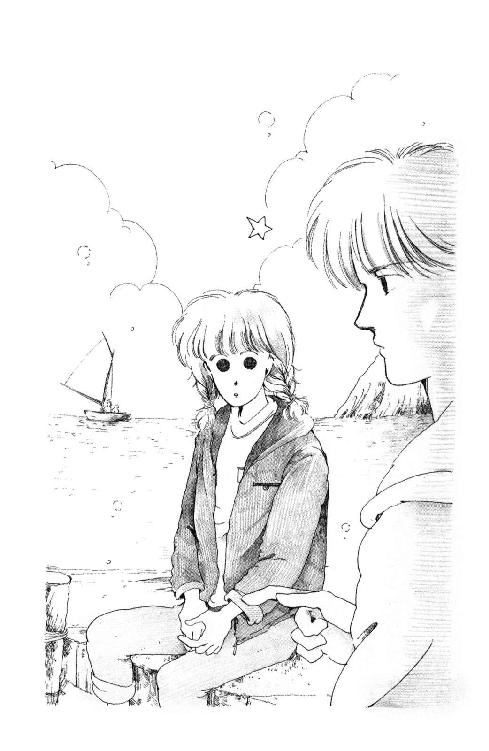
桟橋に座って、一穂さんと尚史さんが白い水しぶきあげながらギューンってひとまわりするのを見て、うらやましさ妬ましさに胸の真ん中がしんしん痛くなっているあたしに、朱海さんがぽつんとおっしゃったんだ。
「未来ちゃん、懸垂できる？」
って。
できません、って言いかけて、気がついたのよ。
ケンスイできない、ってひょっとするとものすごく恐ろしいことなんじゃないかしら。
もしよ。転覆してたらどうなっ......た......？
ディンギーって割と簡単にひっくりかえるものらしいの。風向きが急に変わった、とか操作がおへただった、とかで。ひっくりかえるとしたら、たぶん足が立たないとこでひっくりかえるわよね。あたし自慢じゃないけど、海で足の立たないとこまで泳いだことって一回もないのよ。だって、何が出てくるかわかんないじゃない？ サメとか、オオダコとか、気味の悪い海草とか......ああ、いやだ。
その上あたし、足の立つところでさえ四人がかりでやっと乗れたのよね。怖さのあまり、おバカ力が出せたとしても、誰かに助けてもらわないと乗れないと思う。でも、そしたら、誰が艇をもとどおりに戻すの？
ディンギーはふたり乗り。スキッパーとクルーが力あわせて操艇するもの。ひっくり返った時だって、それぞれ、艇を風上に向けておく役目と、体重かけて艇起こす役目と分担しなきゃいけないはずよ。ひとりは溺れてていい、なんて本に書いてなかった。
......どうりで......朱海さん、なんだかぐったりしてらっしゃると思った。あたしが、わーいわーいって岸に手をふったりしても、ちっとも楽しそうにしないの。ちょっと急に動いたりすると『バカ!!』って怒鳴ったし......普段はそんなかたじゃないのよ。あまりはしゃいだりなさるかたじゃないけれど、それにしても、今日はひどくご機嫌ななめだな、なんて思ってたんだけど......。
怖かったんだろうなぁ。
かった、なんて過去形で言えないんだわ。あたしのこと乗せるひとって、すごく怖いだろうな、このままじゃ。力をあわせるどころか、足手まといにしかならない『仲間』と海の上でふたりぼっちにされるなんて、あたしだったら、断るわ。
ビューンって風切って走るとか、ずっと遠い沖まで行ってみるとかしてもらえないのは安全のためなんだ。あたしを乗せてる時は、冒険ってできないんだ。うららならできるのに。うららは、ひとりでエイッ、て乗れるし、万一転覆したって泳いで帰ってこれるし、ひょっとしたらちょっと説明を聞いただけでチン起こし（転覆した艇を戻すこと）だってできちゃうかもしれない。
なのに、あたしは誰も乗せてくれなくたって、いやがられたって、文句の言える立場じゃないんだわ。最悪のパートナー。こわごわ走らせるなんて相手のかただってきっとつまんない。スキーだって転ばなきゃ上達しないのだもの、ヨットも何度かチンを経験するぐらいでなきゃ、ほんとの楽しさ、わからないかもしれない。
そんなの、いやだ！
ボートハウスの手入れだっていっしょにやったのに、進水式だっていっしょに祝ったのに、なによりも、あれがあたしの家にあるのに！ 乗るのが迷惑だってわかっちゃった今となっては気軽に『乗せて！』なんて言えないじゃない。あたし、そんな勝手な子じゃないもん。
あたしはこれからずっと『ほんとにどうもすみません、お荷物になりますがよろしく』なんてうしろめたく卑下せずには、あのかわいい『ミッキー』に乗ることができないの!?
そんなの、やだっ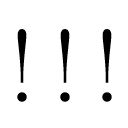
それもこれも、まずはあたしがひとりで艇に登れないのがガンなのよ!!
だからあたし、言ったの。
「練習します！ きっとケンスイ、できるようになりますから!!」
って。
「決心は立派なんだけどねー。なにしろほとんど筋力ゼロだからね、おたくは」
縁側には回り廊下がずうっと続いている。閉めた障子もずうっと続いている。それでも暑苦しい感じがしないばかりか、しいんと涼しいぐらいだから、日本家屋ってすごいわ。
西在家さんちは山の中で、まわりじゅう『うっそうとした森』の典型みたいなとこだから、午後を回るとたちまちさやさや風が渡って、うっとうしいはずのセミの声も優雅に聞こえてくるんだ。
板張りの廊下はちょっと油断すると、キシキシ足音がしてしまってやけに響く。うららなんかすいすい行くのになんの音もさせないのよ。ガサツの代表みたいでも、やっぱり十何年もこういう環境に育っているとおのずと身につくものなのね。
しずしずと（？）歩きながら、にしては言うことが似合わないけれど。
「とりあえずあたしの鉄アレイ貸してあげるから、毎日上げ下げして力をつけることね」
「て、鉄アレイってあのバーベルの小さいの？ ......でも、あたし重量あげをするわけじゃないし......」
「なにいってんの。自分の体重を持ち上げるのよ、あんたのひ弱な腕には立派に重量なんじゃないの？」
「............」
「とにかく腕力よ。腕力が勝負なんだ。あんた、腕立て伏せは？ できる？」
でた。
あたし、自慢じゃないけど、ケンスイと同じくらいウデタテフセって苦手なのよ。腹筋運動も得意じゃないなあ......ひとよりマシにできるのって、立位体前屈ぐらい。二十三センチという記録があるのよ。あんまり嬉しかったからリツイタイゼンクツなんてへんな単語を覚えてしまった。つまり、椅子の上に立って、膝を伸ばしたままで、どのくらい足より下まで手が伸ばせるか、っていうあれです。あたし、力はないけど、からだは柔らかいもん!! けして脚が短いからじゃない......と思いたい......。
返事をしないでいるのをできる、ってことだとでも思ったのか、
「んじゃ、腕立てを一日に三十ばかり、はじめは十回でもいいけど、だんだんふやしていくのね。ちゃんと、あごが床につきそうなとこまで降ろすのよ」
「ま、待ってようらら!! そんなことできないわ!!」
「なんで」
「なんでって、できないんだもの!!」
「できないできないって言ってないでやんなきゃだめでしょーが？」
「でも、きっと筋肉痛になっちゃう」
「まあったくあんたといると飽きないわ！」
フン、と鼻で息をして、うららはあたしに向き直った。
「これまでさんざ甘やかされていた筋肉に喝をいれようっていうのよ。痛くなきゃ効果なんかないに決まってるじゃない!!」
その勢いに、思わず吞まれて、あたしがこくこくうなずいてしまった時。
「あたしこのごろ胸が痛いの」
長い三つあみの端をくわえて、杉丸がつぶやいた。
いつもはいるかいないかわからないくらい静かなひとなのに、突然、変なこと言いだすのが杉丸のくせなのよ。
「胸？ やっとおっきくなるとこなんじゃないの？」
ちゃかすうららも聞き流して、杉丸はほうっ、とため息をつく。
「あのかたの面影がちらついて......」
「うひゃーっ!! 誰よ、誰？」
「舌なめずりしないでよ、うらら！ ......いったいどなたなの？」
焦点のあわない目を宙にさまよわせて、杉丸は苦しそうにつぶやいた。
「千葉加奈子さま......」
......え？
「なんだまた女ぁ？ ......アーホくさっ!!」
急にどたどた足音をさせると、うららはさっさと角を曲がって階段を登っていった。彼女の部屋は二階にある。
うららは、素敵なおねえさまを素敵と思わずにいられない自然な感情を、なぜかひどく嫌悪しているの。わからずやなんだ。でも、こういう話はあまり大勢でするものじゃないわ。ちょうどいい。
あたしは、あわててうつむいてしまっている杉丸の顔を上げさせた。
「ほんとなの？」
杉丸は、唇をかんだまま、きゅん、とうなずいた。
「いけないことだとは思うんだけど」
「どうしていけないのよ？」
「だって、あたしうららのことだけを愛しているはずだったのに......」
杉丸は、スイス・レースのハンカチをだして、くすんくすん言いだした。
「ね、ね、廊下で泣いたりしないで。うららの部屋に行こうよ」
「ミシェール、あたし、あたし、どうしたらいいのかしら!? あの......ミッキー号の進水式の時にお姿をみてしより、もう七回も夢にみてしまったのよ。なのにあのかたは遠いところにいらっしゃる。それもきっと、うるわしくも華やかな少女たちに囲まれて......それを思うと、あたし......あたし......」
「わかるわ、杉丸の気持ち、あたしよくわかる!! ......でも......えーと......」
困った。
うららのことなんかどうでもいいのよ。杉丸が別のひと好きになったら喜ぶくらいの子だもん。
問題は、加奈子さんはトコの想い人だってことなのよ。
トコは小さい時からの大親友なの。華雅学園を離れなくちゃいけなくなったあたしが、なじめない森戸南女学館にこの胸を痛めていた時に、もしもトコがいてくれなかったら、あたしどんなに心細かったかしれないわ。そのトコが、あたしがソロリティー会長、つまり名実ともに華雅貴族であられる高等部三年の小堀麗美さまをお慕いしているのと同じくらいお熱なのが、加奈子さま。麗美さんのご友人のあでやかで気品あるおねえさまよ。
でも、杉丸だって、孤独に陥ってたあたしに最初に優しくしてくれた大切なおともだちよ。愛するおねえさまと......麗美さんと、遠く離れてるって時の気分は、あたし誰よりもよくわかるし......。
あー!! あたしはいったいどっちの味方をすればいいの!?
あたしがパニックおこして、もごもごいっていると。
「......ごめんなさいミシェール」
やだ。杉丸ったら作り笑いなんかしてみせて......そんなのって、そんなのって、かわいそうになっちゃうじゃないよぉ!!
「心配かけるつもりじゃなかったのよ、ごめんなさい」
「そんな！」
「......言ってもしかたのないことを言ってしまったわ......だいたい、どうせ片思いなんですものね、離れていようとそばにいようと、あたしなんかのこと、あのかたが気にとめてくださるはずもないのだし......」
「ううん、加奈子さまは、ご自分のことを慕って集まるみんなに、すごくおやさしいのよ。だいたい人気がおありのかたでも、テングになっちゃって、お気に入りの子のことばっかりひいきして、好きじゃない子のことなんててんでかまわないひともいらっしゃったけど、あのかたは違うわ。もちろん麗美さんも絶対そんなことなさるかたじゃないけど」
「でも、ミシェール、あたし自分が許せないの！」
「杉丸......」
「あたし、あたし、あんなにうららのこと好きだったはずなのに、どうして、ひとめお逢いしただけのかたのこと、夢になんか見てしまうの？ どうしてこんなに胸が苦しくなるの？」
「でも、でも杉丸!!」
「答えてミシェール、これは愛なの？ 愛ってこんなにはかないものなのっ!?」
「......なにやってんのよ、もー」
はっと見ると、階段のてすりのところに腕を乗せて、うららがぐったりもたれていた。
「......頼むからひとのいないとこでやって。うちの連中にあたしまであんたたちと同じ変態だと思われる......ほら、鉄アレイ」
「あ、ありがと」
「重くってあんたもってくの大変だろうから、くるまでおくってくよ」
その、『大変』をうららは片手に二つつかんで、ひょいひょい振ってみせた。
「え、いいよ、バスでいくから」
「遠慮すんなって。どうせ、あたしこれからキタカマまでいくんだ」
「北鎌倉？」
「そ。兄貴に押しつけられてさ、居そうろう迎えにね」
「居そうろう？」
あたしと杉丸は顔を見合わせた。杉丸の目の色が、しっかり嫉妬になってる。
「ど、どういうかたなの？」
「ハーフだって」
チッ、チッて言いながら、うららは肩をすくめた。
「朱海くんのがっこに留学してくんの。うちにホーム・ステイってわけ」
「留学生......ハーフ......」
杉丸の目の色が、だんだん感動と羨望と憧憬の三原色になってきた。
「あー、おたくの趣味じゃないよ。朱海くんの学校だってば。だから当然、お・と・こ」
「お、おとこ......!?」
一瞬絶句した杉丸がブルブル震えだした。耳まで真っ赤になってがまんしてたかと思うと、ついにバクハツした。
「血のつながらない男性と同じ屋根の下で暮らすのっ!?」
「そーなの、まったくうっとうしいったらさ」
「わたくしも、駅に参りますっ!!」
杉丸の殺気だった声に、あたしとうららはあっけにとられた。
「その男性にひとこと、はっきり、釘をさしておかなくては!! うららになにかあってからでは遅いのだからっ!!」
森の木を鳴らして、夕立が降り出した。
「なんだかうすきみ悪いわね」
きっぱりうすきみ悪い声で杉丸が言った。
「ほんと、ゾンビでも出てきそうねー」
歌うような声でうららが答えた。
西在家さんちの黒いベンツで、一色の山をくだっているの。
急な雨がだんだん強くなってきて、フロント・グラスをたたき壊そうとしているみたい。ワイパーがせいいっぱいかきわける扇型のわずかな隙間から、なぎ倒されんばかりにたわんでざわめく木々が見える。
枝の間から見えるはずの空も暗い。よどんだ闇に、時々魔女の指のようなシルエットが浮かぶだけ。森に覆われた坂道には、西在家さんちを出て以来一台の対向車もない。
ピシャッ、とへばりつくような音に横の窓を振り向くと、なにか黒いものがたちまち剝がされて飛んでいった。まるで、何かひとが見てはいけないものが、あたしの目の届かないところにあわてて隠れたんじゃないか、と思いたくなるようなまがまがしい雰囲気。
隣の杉丸は白いうなじを見せて向こうを見たまま身動きひとつせずに黙りこくってる。
うららを呼ぼうとしたあたしも、なんだかのどがつまってしまったみたいで声にならない。車の中の空気までが、重たく湿って息苦しい。
かきわける水の量が多すぎて、ワイパーの動きがますますぎくしゃくしはじめた。崩れてきた扇型から見える頼りないライトの筋に、太い針のような雨がどこまでも浮かぶ。一分前もすっかり同じ景色だった。じゃ、二分前は？ たぶん同じ......いったいいつから、この雨の中を走っていたんだろう......。
......きゃっ!!
突然、空が紫色に裂けて、くるまの中のあたしたちの顔にフラッシュをあびせた!!
「おお、雷だ。たーまやー」
うららが言った時、急なカーブに車のお尻が横すべりする感じがした。どん、と何かに乗りあげたかと思うと、がりがり何かをひきずるような耳を覆いたくなる音がした。
覆っておいて良かったのよ。
雷の『音』のほうが、長いこと続いたんだもの。
「あ、けっこう近いな。このへんに落ちると木が折れたりして下敷きになったりして」
......きらいよ!! うららなんて!!
雷怖い、なんて言ったらまたおバカにされるに決まってる。でも、あたし、実は風の音だけでも充分やなの。ことに、こんなふうに暗くて狭いとこで、まわりじゅうから強く弱くヒュウウウ、ヒュルヒュルなんて吹きつけられるのってまったく趣味じゃない。
杉丸に手でも握っててもらおう。少し明るいところに出るまでの間だけでも......あ、やだ、またスリップしてる!! あたし実はエレベーターとかのあの浮遊感もかなりダメなの。スリップする車も、横だけど、似たような感覚がするんだ。変なこと知ってしまった。
なんだかこのひとの運転、不安だなぁ......。
かりそめにも西在家さんちの運転手さんなんだから、変なかたをお雇いになってるとも思えないけど......このひと、暗いんだもん。
乗せていただく時だって、あたしたち『おねがいします』ってご挨拶したのに、帽子を深くかぶったまま、目も見せないでぶっきらぼうにうなずかれただけだったのよ。まるで顔を見られたくないみたいに。ひとことも口をきいてくださらないし、乱暴っぽいし......運転をお願いするってことは命預けます、ってことじゃない。もう少し、感じいいひと雇ってくださればいいのになぁ......なんて、ひとのお宅のこと言ってもしかたないけど。
気がついたら、あたし首のうしろにじっとり汗かいてる。髪がはりついて気持ち悪い。
もう素直に言ってしまうわ。こういうのいや!!
なんでもいいからとにかく杉丸に手つないでもらおう!! 少しは気がおさまるかもしれないもん。うららにひやかされないようにこっそり、やっと杉丸の手をさぐりあてると。
杉丸ったら、うっとり窓にもたれたまま、言うのよ。
「ああ、ミシェール、素敵ね!!」
「......すてき......？ 何が!?」
「だって、まるでゴシック・ロマンの主人公になったようだわ。あたしはロンドンから着いたばかりの身寄りのない若い女家庭教師......初めて乗る自動四輪馬車で深い森の奥のふるーいお屋敷に招かれて行くところなの。もちろん、村の人達は口々に、行くんじゃない、あの館は呪われてるって言ったのよ。でも、あたしは、閉ざされたあのお屋敷の寂しい美少女とおともだちになろうってかたくこころに決めているから笑ってしまうの。田舎のひとたちってほんとうに迷信深いのね、なんて......でも、ああ、それが惨劇のはじまりだったのよ!!」
「............（どうして？ どうしてこんな時『惨劇』なんて言いだすのよ!?）」
あたしが絶句しているとうららがのんびり口をひらいた。
「自動四輪馬車？ あんたも好きねぇ（そうよ、そうよ!! やめるように言ってよ!!）。馬なしでも馬車っていうのかね......それより、全長三メートルの首切りばさみをかかえた復讐鬼とかさ（！）、電動ノコギリの切れあじをためしたがってるマッド・サイエンティスト（!!）に出てきて欲しいね（）。......あれ」
やだ!! 車が止まった!!
運転手さんがなにかボソボソと言ったけど、雨音が強くてあたしには聞こえなかった。
「いいよ、ズブ濡れになっちゃうよ」
うららが答えて、運転手さんがまたなにかボソボソ言って、突然、中折れ帽を深くかぶり直して飛び出して......行っちゃったのぉ!!
ばたん、とドアが閉まると、ごおっと風の音がくぐもった。
たまらなくなってあたしは聞いたわ。
「いったいどうしたのよ？ こんなとこでいきなり......」
まさか、まさかなんかの発作を起こしたとか、もう運転できないとか......。
「なんかひっかかってやだから取ってくるんだって」
「あ、そうなの？」
じゃ、あのがりがり言うの、運転手さんも気にしてたってこと？
......それなら、わかる。わかるけど、何もこんなとこじゃなくて明るいところに出てからでも......。
「......戻って来てくれなかったりして」
ささやくような声で杉丸が言ったのよ。
「あたしたちこのまま、ずーっと車の中で待たされるのよ......ずーっと......ずーっと......終わらない夜が終わるのを祈りながら......」
しゃっ......しゃっ、と瀕死のワイパーが鳴った。
「......もう、やめてよっ!!」
あたしが言ったとたん、がつんがつんと車が揺れた!!
「あれ、ミッキー、こういうの好きじゃない？」
「す、好きなわけないでしょ、趣味悪いわねっ!!」
「やだー、この子ったら本気で怖がってるう!!」
シートからわざわざ身を乗り出して、うららったら笑うのよっ!!
「こ、こ、怖がってなんかないけど......わざわざ気持ち悪い話することないでしょって言ってるの!!」
「あらー、その割には顔青いみたいよー。ばかねー!! んなんほんとなわけないでしょに......まったく幼稚なんだから」
「そうよ、ミシェール、だいたいあたしたち森の奥のお屋敷にいくところじゃないもの。そこから出てきたところじゃないの......あいにくだわ」
なぐさめになってない!!
「あ、あ、あたしおばけ怖がってるわけじゃないもん!! こんな天気じゃ車危ないじゃない。そのこと言ってるの!!」
「あー、大丈夫よ。岸田さん運転うまいから」
「ほんと？」
「おん。なんたって無事故無違反三十年、この道なんか眠ってたって走れるわよ。安心しな」
「......そうなの。それならいいけど......」
ごそごそとレザー・シートにからだ落ち着かせたとたん。
ドアが開いて、運転手さんが戻って来た。すっかり寝ちゃった帽子のつばから、ぽとぽと雨がしたたって、とがった鼻さきに落ちかかる。
「おつかれさまでした!!」
思わずあたしは言った。
うららの口から、あたしが腕を疑ったなんて言われたらすごくよくないじゃない？ この雨の中わざわざ出て、何かひっぱってきちゃったものはずしてくれたのなら、感謝してるってこときちんと伝えたほうがいいと思って......。
「いいえ、とんでもない!!」
予想していたのとあまり違う声だったんで、あたしは思わずあんぐり口をあいてしまった。だって、すごく高い。ボーイ・ソプラノって言っていいくらい。その上、スースー変な音。
あけた口、あわてて手で隠したわ。
目尻に五本ばかり笑いじわ作って、こちらをふりむいたおじさんには、前歯が二本みごとになかったんだもん!!
「ありゃ、見られてしまった。......ははははは。ひどいでしょお、さしば作ってもらってる最中でねー。いやお恥ずかしい」
うしっ、と気合を入れると、運転手さんは帽子をかぶりなおした。
あたまのてっぺんがみごとにツルツルなところも、しっかり見てしまったわ。
こんな天気じゃなかったら、北鎌倉って好きな街なのよ。
同じ横須賀線の逗子や鎌倉とはくらべものにならないくらい小さい、いなかっぽい駅の前にちょっとした広場があって、日曜なんかは東京から（うっうっ）来るひとたちなんかでけっこうにぎやかになる。石段登っていく円覚寺とか駆け込み寺の東慶寺とか、有名なお寺がたくさんあるし、銭洗い弁天さんから大仏さんに抜けるハイキング・コースなんかに行くにも便利だからね。
今来た鎌倉街道の途中に、朱海さんたちの学校もある。
だから、日本文化に興味のある外人さん（でなきゃ、留学なんかしてこないと思う）が逗子まで来ないでここで電車おりて、お寺を見、ついでに御成学院も見ていこう、って考えたとしてもそう不思議じゃないわ。......この天気でさえなければ。
「......何時の約束なの？」
あいかわらずよく降る雨の中で停車したっきり。スリップするとか歩行者が見えなくて事故おこしちゃうとかの心配はないけど......外はよくみえないし、さっきの冷や汗がべとべとして蒸し暑いし......お家に帰りたくなってきちゃった。
なんならここで降ろしていただいて、電車で帰ろうかなぁ。一色の山を下りた時、ホッとしたあまり、家と反対の方向に来たこと主張しそこなったあたしが悪いんだから。
杉丸がその留学生さんに逢うっていうのなら、あたしもいっしょに行っておいたほうがいいかな、なんて思ってしまったのがよくなかった。あのへんで降ろしてもらっていれば今ごろは家に帰っていたはずなのに......なんて、ぐちっぽいわ、あたし。
どうも今日はついていないみたい。
曇る窓におでこをくっつけて外を見ていたうららが、チッと舌打ちした。
「五時のはずなんだけどねー......あ、電車が来た」
「ほんと？」
ぐいぐい窓を手でふいて見ると、紺とアイヴォリーの電車がゆっくり停車するところだった。やがて、傘をさしたひとの波が改札口からこぼれだす。一時よりは少しは弱まった雨足にほっとしたみたいに散りながら、ただでさえ狭い駅前にどーんと巨体をつけているベンツを変な顔で見ていくひともいる。
「いないわね、異国びとは」
あたしの背中に半分乗りあがって見ていた杉丸がものうげに言った。
「だいたい、これだけめだっているんだもの、先方が気づいて寄ってくるわね、たぶん」
「ねぇ、電話してみたら？」
とあたし。
「ひょっとしたら、あのすごい雨におそれをなして、ここで降りるのやめて、まっすぐ逗子までいらっしゃったのかもしれないじゃない？」
「......ったくまいっちゃうなー、朱海くんが自分でくりゃいいのにまったく」
文句いいながら、うららはドアを開けた。新鮮な空気がサアッと流れ込む。
「ちょっと見てくる」
「......あ、ウリ坊!!」
「すぐもどる」
例の高い声をかけた岸田さんに、ウインクひとつして、うららは飛び出した。裾を短く切ったサンシャイン・オレンジのＴシャツが、たちまち体に張りついて、スリムな背中をいっそう華奢に見せる。
「電話ならあるのになぁ」
欠けてる歯からため息をもらして岸田さんが言った。
「え？」
「ウリ坊はめったに乗ってくんないから知らないんだろか。めだちすぎる、ってねぇ、いやがられちゃって......まぁ、若いんだから自分の足を使うほうがいいけれど」
あたしたちに肩をすくめると、岸田さんは、ダッシュ・ボードのどこからか象牙色の受話器を出して、ダイヤルした。
「......あ、もしもし、岸田ですが......ええ、......ええ、まだなんすよ。では、そっちでもない？ ......はー......はー......いや、お嬢さんが捜しに行ってますんですけどね、なにせ、この雨で」
......ふう。
西在家さんちにもまだついていないか。
じゃやっぱりもう少し待っていなきゃ。お夕飯までに帰らないとママが心配するんじゃないかしら......あ、そうだ。次に電話貸してもらおう。
ほんとは、こんな雨の中ひとりで帰るなんていやだもん。
手でこすった窓の跡が、まただんだんに曇ってきて、見えてる景色にミルク色のソフト・フォーカスがかかる。
わー、サイレント映画みたい？
低い屋根の街並に青年がひとりたたずんでいるの。チェックのコットン・シャツに淡い黄色のジーパン。大学生くらいかなぁ。白いストックの花束抱えて、雨やどりしてるっていうより、まるで、雨の街を楽しんでいるみたい。
......ああ。トコが聞いたら嘆くわ。男のひとに見とれるなんて不良だ、って言われそう。
でも、似合っているんだもの。雨の街に、花を抱いた青年。風景にとけこんでしまって、一枚の絵みたいなのよ。『こんな雨』なんていやがってしまってた自分がつまらない子に思えてしまうくらい、幸福そうな微笑み。
美しい女性と待ち合わせでもしているのかしら。あの花はお誕生日の贈り物なの。それとも、西田幾多郎さんか誰か、敬愛するかたのお墓まいりにでもいらしたところかな。ううん、もしかすると、花の研究をしている科学者さんかもしれない。雨は花にはごはんだもの。花が好きなひとだったら、雨だってきっと好きだわ！
でも、傘持ってないのかなぁ。これからどうするつもりなんだろう......あんなに濡れたら風邪ひいちゃうのに。
「......ね、岸田さん」
「は？」
「傘って載せてないんですか、この車」
「え？ ああ、トランクにあるはずだけど」
「貸してあげちゃいけませんか？」
けげんそうな顔の岸田さんと杉丸に、窓の外を目で示す。
「......ミシェール......」
杉丸ったら、目をふせて咎めるように頭を振ったわ。
「あなたって浮気だと思うわ。朱海さんとのことに命を賭けるって誓ったのを忘れたの？」
「あたしそんなこと誓ってないわ！」
「あら、そうだった？ ......とにかく、どこで誰が見ているかもわからないんだから、気をつけてくれなくちゃ。どんな小さな汚点でも、洗礼名のある高校生妻路線を危うくするようなことはほっとくわけには」
「どうして風邪ひきそうなひとに傘を貸してあげたいっていうことが『汚点』になるのよ!?」
思わず言ってしまってからあわててつけ加えた。
「でも杉丸、言っとくけどあたし結婚とかする気は全然ないんだから、そのへん誤解を」
「おお、ミシェール」
杉丸の冷たいつるつるの手が、がしっ、とあたしの手をつかんだ。
「意地を張ってないでこころを打ち明けてくれたっていいのよ。あなたはあたしの希望の星なんだから、ここは言うとおりに......きゃあ!!」
車が大きく回りこんだので、あたしたちは折り重なって倒れた。いつの間に発進したの？
「とにかくどこまで行くのか聞いてみましょうや」
ぐいんぐいんとハンドルを切りながら、岸田さんがおっしゃった。
「何か事情があるんなら送ってあげなきゃ」
「......でも、そんな!!」
杉丸が上ずった悲鳴をあげた。まだ重なってたから、手をついてからだをおこした支点があたしの胃の上で、あたしも美しくない声を上げてしまった。
「うららはどうするんですか!?」
「ウリ坊なら心配いりませんって。あたしと同じ江戸ッコ気質ですからね、困ってるひとをほっといた、ってほうが怒りますって」
「で、でもあたし知らない男性と同乗するなんてっ！」
「あれっ？ だって、そのバーソロミューさんとかいうひとだって乗るでしょう」
バーソロミューですって!?
Bartholomew、バルトロマイさまと言えば、十二使徒のおひとりではないの!? 聖書にもほとんど出てこないすごーく地味なかただけど。
でもあたし典礼暦にマークしてあるわ、そのお名前。何を隠そう堅信名をいただく時の参考のために。
あたしは、大天使ミカエルさまにちなんだ『ミシェール』って洗礼名をもう持っているけれど、もうひとつ、名前をいただくことができるの。堅信っていうのは、あたしみたいにちいさい時に洗礼を受けてしまった子にとっては、おとなになって改めて堅い信仰を誓う大切な儀式なのよ。そうねぇ......二十歳くらいになったら、受けようと思っている。
お名前をいただくってことは守護聖人になっていただいて一生おすがりすることになるんだから、あまりお力を示されなかったかただと、あのう......ちょっと寂しいでしょう？ でも、例えば『マリア』とか、イエスさまにちなんだ『クリスチナ』って名前はあまりに多くて抵抗あるの。確かにマリアさまやイエスさまは最高のおかたよ。でも、もう充分大勢の信者がお慕いしているでしょう？ きっとお忙しいと思うの。
その点、バーソロミューさまなんてあまり洗礼名堅信名にするひとがいないと思われるから、あたしのことを気にとめていただける確率も高いんじゃないかしら。なんといってもイエスさま直接のお弟子さまでらっしゃるし、『ミシェール』にも似合う美しい響きのお名前だし......なんて......ああ、信仰の薄い子だわ、あたしって。
そ、そうだわ!! 大変
あたしったら、もうふた月も告解（懺悔、ということばはこのごろ妙に安っぽく（註１）なってしまったわねぇ）に行ってないじゃないの!! 夏休みになったら毎日早起きしてミサに行かなきゃ。
......でも、そうか。ひとりはいたわけよね、バーソロミューさまがご担当なさってるひと。そのひと、信者なのかなぁ？ それとも、外国ではごく普通の名前なのかしら......？
あたしがそんなことを考えている間、杉丸は『そうだわ！ ほんとだわ!! どうしよう!?』とかって大騒ぎしていたのだけれど、車はおかまいなしに、かの花青年のわきにすうっと止まったの。
「あの、どちらまでいらっしゃるんです？」
岸田さんが例の高い声で尋ねた。
「え？」
ちょっと驚いた顔をして、それから彼は静かに微笑んだ。
「......ありがとうございます。......でも、いいんです。雨を......見ているのですから」
「あ、雨......ですか？」
「ええ」
青年はゆっくり間をとって、杉丸とあたしの方に目を向けた。
彼に近いほうの杉丸がびくっ、とあたしにからだをぶつけた。
「いい雨です。この街によく似合う。......鎌倉には雨は降らないのかと思っていましたから、少し驚いたのです」
軒先の雫が、ストックに落ちてはずんで、葉っぱを伝わって落ちるまでの時間をかけて、彼はそう言ったの。
「でも、風邪ひきます！」
杉丸の前に乗り出して窓を開けると、青年はふわっと笑った。
「ありがとう。日本の女性はやはり親切ですね」
......あれ？
もしかしたら？ と口を開けたあたしに、青年は抱えてたストックを二本抜いて差し出した。
「あなたと、そちらの美しいヤマトナデシコに」
......やっぱり このひと!?
「あ、あー・ゆー、あーゆ......みすた・ばーそろみゅー？」
思わず飛び出したひどい発音のぶしつけなイングリッシュに、一瞬きょとんとした彼を見て、ひとちがいだ！ って本気で後悔したわ。
その時。
「いないよぉ──!!」
ばしゃばしゃはでな音がして、あたしは窓からふりかえった。
盛大にはねをあげて走ってくるうららが見えた。
「なんでこんなとこに動かしたのよ!? おかげでますます......ん？」
青年に気がついて、うららが目の上にぺたっとはりついた髪をかきわけたとたん。
「オオ、アケミ!!」
「ぎゃっ！」
彼、花を放り出してうららを抱き締めたの!!
杉丸が声にならない声をあげるついでにあたしの肩に爪をくいこませた。
「アア、よかった！ 逢えないかと思いましたよ。ぼくです。バートです！ お世話になります!!」
「そんなに似てるかね？」
あんまり勢いよくゴシゴシするから、うららの髪のしずくがあたしの顔に飛んでくるの。
だけど、がまんだわ。少なくとも、うららの濡れかたよりもマシなんだもの。
「似てますよ！ 絶対。ほら」
助手席のバートさんは上きげんで、パスケースをさしだした。うしろの真ん中のあたしがうけとって開くと、びしょびしょのうららと、つめのとがった杉丸がぐいっとのぞきこんだ。
「うそぉ、これ、あたしじゃないよっ!?」
「ほんとだ。朱海さんじゃない」
パスケースに入ってた写真は、ギラギラ太陽を背にしてガハハハって下品に笑ってるうららの上半身だったのよ。
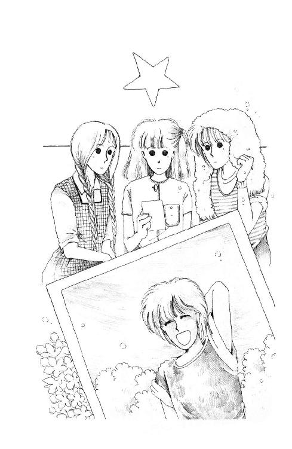
「くそぉ......あいつ謀ったな......」
バシッ、てタオルをてのひらにぶつけるうららから、あわてて写真を遠ざけて、バートさんに返す。
「どういうことです？」
けげんな顔の留学生。
「あ、あのね、つまりこれはうららの写真で、朱海さんじゃないの。朱海さん、わざと妹の写真を送ったんだわ、あなたに」
「どうしてそんなことを？」
「あのバカ写真がきらいなのよっ!!」
濡れタオルをまだバシバシしながらうららが言った。
「この二、三年、がっこでむりやり撮られる集合写真以外ないはずだもん。どうせあんたが、写真くれって言ったんでしょ？」
「ええ、どんなひとかなぁ、と思って」
「それであたしのでお茶をにごしたんだ。......どーりで、逃げたわけだ」
しかし、男の子だ、って思って見ても違和感がないうららだからできたってことよね。
「すみませんでした」
バートさん、パスケースをパタンととじて、うららを見た。
「てっきり朱海さんだとばかり思って......」
「いいよ。あんたのせいじゃないじゃない、雨だって、写真のことだって......ったく兄貴のやつ、帰ったらぶんなぐって......」
「あのう......」
「ん？」
「アケミはもしかすると、ぼくが来ること......ごめいわくなんじゃ......？」
杉丸が、口を結んだまま大きくこくこくうなずいた。
「朱海くんは知らないけど、あたしは迷惑だね！」
「......ちょっと、うらら」
ひじのあたりをつつくと、うららはうるさそうにあたしの手をはねのけた。
「オヤジもオフクロもおおさわぎよ。だいたいおたくが来ることになって、御成で下宿先を募集してるって聞くやいなや是非是非うちにって、いの一番に電話してさ、それでも心配で誰か坊さんに口添えまで頼んで。恥も外聞もないんだから」
......え？
「その上あたしにはお説教よ。留学生にとっては、ホスト・ファミリーというのは言わば鎌倉の、いやいや日本の代表である。おまえも日本の代表として恥ずかしくないふるまいをしてくれなきゃ困る、とかなんとか言っちゃって。世話好きの新しもの好きでやってるのがなんで『日本の代表』なのかあたしにはてーんで理解できないわ。......おたくもジジババのおもちゃにされないように気をつけたほうがいいよ」
「......じゃ、すごく迷惑ってわけでもないんですね？」
バートさんは、あたしたちを見回した。運転席で黙って聞いてた岸田さんが、わけしり顔にうなずいて請け合ってみせると、彼の顔がたちまち輝いた。
「充分迷惑だってば」
うららはタオルをみっともなくほっかむりしながら、ぶーっと頰をふくらませた。
「ま、うるさいのがおたくの世話に夢中になってくれるのはありがたいけどね。なにしろジジイはおたくの歓迎に香席を設けるぞ、とかいって蔵からなにやら曰くつきのどーぐを持ち出してさ。まいンちゴシゴシやっちゃにやついて、不気味だったら」
「コーセキ？」
「聞いたっしょ？ うちが香道の家元やってるって」
「ええ。でも、香道ってよくわからなくって」
「お茶席のお茶がお香になったようなもんよ」
「オオ、お茶席！ 憧れです。やってみたいです」
「だからお茶じゃなくてお香だってば。脚がしびれるだけだと思うけどねぇ......あ、おたくらも来る？」
言われて、あたし、ドキン、とした。
聞香のお席ね、いつかは行ってみたいと思ってたの。誘ってくれないかなぁ、って思ってた。でも、行きたい行きたいって言ってご迷惑だったら申しわけないし、知らないひとばかりの中で無知をさらしてもアレだし......でも、この際!!
「ぜひ行きたい!!」
「わ、わたしもっ!!」
杉丸があわてて言った。
「......もの好きね」
うららはフン、って鼻で笑った。
「もの好きっていえば、バート、なんで日本になんか来たの？ ひょっとして本気で仏教勉強したいひと？」
「......いや、オナリガクインには内緒だけど......実は鎌倉に来たかったんだ」
「なんで」
助手席の椅子に手をかけて、まっすぐ後ろを見たバートさんは、照れたみたいにくちびるを嚙んだ。
「好きなひとに逢うため」
......うっ......。
もう真っ赤になってるに違いないあたしの腿に、杉丸がひときわ強く爪をたてたのよ。
......え？ でも......。
腿の痛みが脳に響いて、あたし瞬間的にテレパシーしてしまったの。杉丸が考えたに違いないこと。
好きなひとがいる鎌倉。バートさんが知ってる鎌倉のひと。うららをひとめ見た時のバートさんの態度。そして、バートさんはうららの写真を朱海さんだと思っていたのだから......。
ギラッ、と光った杉丸の目が『ほら、思ったとおりよ!!』ってバートさんにらんでる。
まさか!? だって、もともとこのひとが来ることが決まってからステイ先が決まったんじゃない。うららじゃないじゃない!!
杉丸に、この考えを説明しようと思った刹那。
「へー、どこのひとぉ？」
脳天気な声でうららが尋ねた。
バートさんが外人さんっぽいオーバーな表情で思わせぶりに息を吸った。
あたしは思わず腿をかばったわ。
逢ったばかりのおんなの子に『ヤマトナデシコに』なんて花を捧げてくれちゃうひとだもの、冗談でも『ウララサン、アナタデス』なんて言いかねない!! これ以上つねられたらあたしの腿、再起不能のアザになっちゃう!!
おお、聖バーソロミューさま。かよわい未来を守りたまえ......。
緊張の瞬間に、小さな声が響いたわ。
「セツコ・ハラ......です」
「なんだって？」
びっくりしてこっち向いたパパのお髭に、タルタルソースがくっついていた。
「『緑豊かなカマクラでブッディズムを学んでみませんか』キャンペーン、ですって」
あたしは答えた。
「『ＴＩＭＥ』と『ＮＥＷＳＷＥＥＫ』に広告ねぇ。なるほどな。国際的、っていうとミッション系だって意識はもう古いのかもしれないな。外人に仏教徒がいたって不思議はないし」
「意外に進歩的なのかしら、御成学院って」
ナプキンをパパに手渡しながら、ママも目をパチパチさせた。
「それにしてもさすが西在家さんねぇ。外人の下宿人さんなんて大変でしょうに」
名残りの風が、ヒュウン、って丘の家のまわりを駆けぬけていくけど、もうすっかり雨はやんだみたい。うちは高いところにあるから、あんな強い風の時は窓という窓ががたがた鳴って怖いのよ。ママひとりぼっちでかわいそうだった。
ベンツの電話をお借りして連絡した時も『早く帰ってね』って心細そうにおっしゃってたもの。杉丸を長谷のお家まで送って、それからうちに回ってもらってると家の前の坂のところでちょうど遅めのお帰りのパパといっしょになったんだ。
だからちょっとだけどパパはバートさんと逢ったのよ。
「いや、彼はあまりガイジン、って感じじゃなかったな。なぁ、未来」
「そうね。髪も目も少ぉし色が薄いけれど、ひと目でわかるほどじゃないな。日本語もおじょうずだし」
「わざわざ車を降りて『はじめまして、お世話になります』なんて言うから、パパはまた西在家さんちのご親戚がヨットに乗りにきたのかと思ったよ」
「今ごろたぶんうららが説明してるわ、うちのヨットのこと。でも、あのかた、そういうものより昔のこととかのほうが興味あるみたい。だから、パパとお話が合うよ、きっと。鎌倉が大好き、っていろんなことよく知ってるけど、お話が古くって」
あ。
傷つけてしまったのかな？ 黙ってナイフとフォークをきしきしなさり出したパパの横でママが急いでとりなすみたいに口をはさんだ。
「まぁ、そう。じゃ、ご両親のどちらかが鎌倉のかただったのかしら？」
「ううん、そうじゃないの。おかあさまは日本のかたなんだそうだけど、バートさんが鎌倉を知ってるのは日本の映画でなんだって」
パパのナイフがぴたっ、ととまった。
「なんでもおとうさまはあまり有名じゃないけど映画監督さんで、日本映画がすごくお好きだったんだって。それでおかあさまと知り合われたらしいんだけど......だからバートさんもちいさい頃から日本映画をいっぱい見て育ってるんだって。いきなり、鎌倉には雨は降らないのかと思っていました、なんて言うからどういうことかと思ったら、オズの映画にはめったに雨降りませんからって......」
「おず？ 小津安二郎監督か？」
あたしの話が終わらないのに、パパが叫んだ。
「パパ知ってる？」
「知ってるとも！」
「じゃ、セツコ・ハラは？」
「原節子！」
パパはもう目をうるませてる。
「じゃ、有名なひとなの？ バートさんはその、オズさんの映画のハラさんに逢いたくて鎌倉に来たって言うのよ」
「有名かだって？ ああ、ほんとに今の子はなんにも知らないんだな。知ってます。パパはよーく知ってますよ。あのね、原節子っていうのはそりゃあ美しいひとだったんだ。......バタ臭いっていうか、大輪の牡丹のような華やかさがあってね、そのくせ慎みがあって控え目で......いい女優だった。ああいうタイプの女優は今はいないねぇ」
やっぱりお話が合いそうだなぁ......バートさんの趣味も、としごろを別にすればそう特別じゃないのね。
「いつごろのひと？」
「いつごろってまだ生きてるはずだがね、昭和二十五年頃かなぁ、『晩春』『麦秋』っていい映画に出たねぇ......あ、それが小津の映画だよ。そのバートくんが見たとするとそのへんじゃないかな？ いやぁ、そうか。そういう青年だったのか、うんうん」
「太陽族より少し早い？」
「そうそう！ 未来もわかってきたじゃないか！」
いつも聞かされていれば覚えます。パパの青春時代......海とダンスと石原裕次郎さん。でも、そのさらに前にまだ、ノスタルジーがあったのね。
美人の女優さんねぇ。昭和二十五年にちょうど二十五歳と仮定すると、ママより二十近く上だしあたしとは四十四歳も離れてることになって......今年六十歳ぐらい!?
バートさんってずいぶん年上の女性を好きなんだな。
「そのかた、テレビに出てる？ あたし見たことあるかな？」
「いや、テレビにはほとんど出たことがないと思う。小津監督が亡くなって、銀幕を退いてしまったんだよ。もったいないねぇ......でも、そこがまた『永遠の処女』って言われるひとにふさわしい。いや、ほんとに素晴らしいひとだった。節子、って名前を聞くだけでジーンとなったものだよ。未来もこの機会に小津映画を見るかね？ なんならパパ、ビデオでも買ってきて（註２）やるが。なぁ、ママも見たいだろう、原節子！ 懐かしいねぇ」
「......そうですか」
いやに低い声でママが答えた。
「あたしは洋画ばっかりでしたから。よく覚えていないわ。そういえばそんなかたもいらしたかしらね？」
パパは、お箸を宙に止めた。
「......なんだ？ おまえ、きらいだったかな、原節子？」
「別にきらいじゃありませんけど。......そうねぇ、ママが好きだったのはね、ゲイリー・クーパー、ジャン・マレー、ジーン・ケリーにジェームス・スチュアート......ああ、ほんとに素敵だったわ。ああいう美男子はこのごろはいなくなっちゃったわねぇ」
ママは『ビダンシ』と言った。
なんか『ハンサム』って言うよりも、いっそう『美』が強調された感じ。
「ジェームス・スチュアート？ ママはあんなにやけたおとこがいいのか？」
「にやけてなんかいませんわっ!!」
「いいや、にやけている。まぁ、日本でも佐田啓二だの高田稔だの彫刻みたいな顔したヤサおとこがもててたよなぁ、あのころは。まったくどこがいいんだか」
ママは右手に持ったナイフをぶるぶる震わせて黙ってしまっている。
「いやぁ、しかしな、未来、パパは昔上原謙に似てるって言われてそりゃあもててね、あんなキザといっしょにするのはやめてくれやめてくれっていっしょうけんめい頼んだんだ。わたしは硬派だったからねぇ......うんうん」
太陽族っていうのは硬派だったかな？
上原謙ってフル・ムーンのおじさま（註３）でしょう？ お年を召されてからのことしかあたしわかんないけど、パパあんなに整ったお顔立ちしてるかしら......？
「特にいやだったのがあいつだよ、ほら、なんたっけ......あの『風と共に去りぬ』の」
「クラーク・ゲーブルですか」
ママが硬い声を出した。
「そうそう!! あのいやらしいちょび髭!! あれを見るともうゾッとして......」
パパはようやく、そっぽを向いてしまっているママに気がついたらしい。
「あ、いや、しかしもちろんママだっていかしてたぞぉ、未来。......えーと......そのう......あ、そうだそうだ、ママは怖がりのくせにヒッチコック映画が来ると真っ先に飛んでくんだな。それがグレース・ケリーのドレスをファッション画にして洋服屋に持ち込んじゃ、おんなじに作ってもらうためだった、っていうんだからママもけっこうミーハーだったよなぁ！」
「若かったんです」
ママはパパの目を見ずに、お肉をどんどん細かく細かく切りわけてる。
「でも、おきらいなクラーク・ゲーブルを真似して乗馬を始めたのはどなただったかしら？ あたくしに、ウエスト五十四センチじゃなくなったら離婚するっておっしゃったのは？」
「......あ......いや......その」
「なのになんです？ 『永遠の処女』が『憧れのひと』ですって？ 針金と言われたスリムなあたしが生まれて初めて太ったのはなんのためだったと思ってらっしゃるの？」
「いや......おい、待て!! こら！」
「なのに何よ、ご自分はあたくしに未来を産ませておいて『永遠の』ですって？ ああ、いやだ。不潔！」
止めようとしたパパの手を無視して、突然立ち上がったママは、さっさと食器を片づけだした。
いっしょに立とうとした拍子に、あたしは椅子をがたがたひっかけて転ばせてしまった。足に力はいらない。
パパが何か言ってるのも耳にはいらなかった。
なんだかすごく変な話を聞いてしまったような気がする。
永遠の処女って、マリアさまみたいなかたでしょう？ どうしてそのかたに憧れることが不潔になるんだろう？
それにしても五十四センチなんてすごい!!
五十四センチだったママがウンセンチになってしまうってことは、今ウンセンチのあたしは赤ちゃんを生んじゃったりしたら......。
うわぁ!! きっぱりおでぶになってしまう!!
ううん、そうじゃない。そんなこと考えたんじゃない。
五十四センチのママを普通体型にしてしまったのは......おなかの中でどんどん大きくなっちゃったのは......。
あたしじゃないの!!
「未来！ 未来、大丈夫？」
ぺたんと座ったままのあたしに、心配そうな声でママが叫んでいた。
ママはそんなこと考えちゃやだって言ったけど......。
あたしって生まれてくるだけのことでママにずいぶん負担かけたんだわ......ムムムム。
なのにパパったら『離婚』だなんて......よいしょ!!
ほんとにそんなひどいことおっしゃったのかしら......？
たとえ冗談だったとしても......クク......クククク。
言われたこと今の今までママが覚えてらしたってことは......かな......り......わっ!!
ふうう。
あごが床につくくらいまで、なんてうらら言ってたけど、そんなこととてもできないわ。腕立て伏せ。
まぁ、一日めなんだし、できる範囲でやればいいわ。これじゃ腕立て伏せっていうよりただの『肘曲げ伸ばし』だけど......とにかく十回やろう。
なーな......やっぱりパパってちょっと勝手だと思う！
......はち......太ったら離婚だなんて太ったら離婚だなんて......。
結婚するってそういう風じゃいけないと思う......わ......きゅうっ!!
病める時も貧しき時も変わらず永遠に愛するって誓いあうんじゃなきゃ......。
結婚じゃないわっ！ 十回！（バタッ!!）
......あーしんど。
でも、ほんとうに、そんなことってできるのかしら。
変わらず永遠に愛する、なんて。
それも、こっちがそうする、ってだけじゃなくて、相手のひともそうでなきゃいけないんだものねぇ。難しそう。杉丸も『はかない』って泣いてたし。
愛するってこともよくわからないけど......麗美さんのこと好きな以上に好きになれなかったら、とても『永遠の愛を誓う』なんてことできないわよねぇ。そんなひと、現れるかなぁ？
現れるとして、そのひと、今何してるんだろ。どのひとがそのひとか、ってひとめ見たらわかるものなのかしら？ ......わかんないだろうなぁ......あたし、ひとを見る目って全然ないもん。
それじゃ困るのよね。
でも、誰かが、はいこのひとです、って言ってくれたって信じられる？ もし、自分が違うんじゃないかなぁ、って思ったらどうすればいいの？
........................
......だめだ。こんなこと考えたってしかたない！
どうせずーっと先のことなんだし......そうよ!! 今のあたしが直面している問題、つまりケンスイのことを忘れちゃいけないわ。
だいたい、ほんとにケンスイができるようになるかどうかも怪しいじゃないの。このままじゃ、この夏は卑屈な態度でしか『ミッキー』に乗れなくなっちゃうわ。
それは避けたい。
絨毯にへばりついたまま目をあげると、いつもの自分の部屋がなんだか知らない部屋みたいに見える。ヨットから見た海がテラスから見える海と違ってたみたいに。
じょうずになったら、もっといろんな海が見れるだろうなぁ。
例えば春。朝日が昇るころのまだひと気のない三角波の海面をそっと船出するの。少し霧がかかってて、時々ひやっとする空気にであって、寝ぼけ頭がだんだんしゃんとしてくる。
......いいなぁ、そういうの。
それから、真夏。にぎわう浜辺を遠くに見ながら、さっそうとセイリングするの。太陽がまぶしすぎて、目なんてあけてられなくなる。腕も頰もじりじりいうから、時々わざと飛沫をたてて天然シャワーにしちゃう。
秋。山は紅葉。海に伸びる夕日の照り返しを追いかけて走るのよ。『ミッキー』の上をぐるぐる回りながら、鳥がついてくる。時々マストのてっぺんでひと休みして。
そういう時、永遠の愛を誓ったひとといっしょだったら素敵だろうなぁ......。
......ん!?
あたしは思わず、起き上がってしまった。
待ってよ。それじゃ、あたしの永遠の愛の恋人はヨットに乗れるひとじゃなきゃだめ、ってことになっちゃうじゃないの。
やっぱりあたし、なんとしてもケンスイできるようになって、『ミッキー』の操艇だって誰よりもじょうずになって、『もしかすると永遠』のひとみつけたらヨット教えてあげられるようになっておこう!!
よーし、あと十回!!
......そのひと、ケンスイできるかなぁ......？ できるようになっていて欲しいですねぇ......
う───んしょっ......。
......ふううう......。
２
「いーか、どんどん暑くなるからな、気のまよいにだけは気をつけろよ」
朝のＨＲ。ツルさんはクスクスいう教室を凶暴な視線でにらみ回した。
「笑ってるけどな、おまえらの顔にいちいち『今日は楽しい終業式です』って書いてあるから、俺は心配してるんだぞ。登校日だけは化粧すんなよ。それから、男を信用するな。愛してるっていわれたらまず、股間を観察しろよ」
きゃ──って嬉しそうな悲鳴があがって、ツルさんはすかさず、コカンと愛の相関について、声をひそめて話しだした。
どんな大きな声で叱られても絶対静かにしないひとまでがしいんとしてしまう。
ツルさんは鶴橋晃司って建築関係に進まれたほうがお似合いな名前なんだけど、理科の先生で、うわさでは医大を受験して何浪とかなさってる受験生でもあるそうな。
お話の内容はともかく、みんなの気持ちをつかむことに関しては、この学校で一番プロだと思う。今も、ほら、みんなが喜んでると見るとはりきって、コカンと愛の正比例・反比例の図など黒板に書きはじめてらっしゃる。サービス・マンさんなんだ。
この学舎に通いはじめて、もう三カ月になろうとしている。
初めは、先生がたが板書なさりだすとおもわずノートを取ってしまったあたしだけど、このごろはさすがにこういう話題の時は黙って聞き流すことができるようになった。どういうわけか、あたしの隣の浜田さんみたいにこういう時だけノート取るひともいるけれど。
でも、コカンなんて、露骨にじろじろ見たりできる場所でもないのに、一瞬サッと目を走らせただけで正しく観察できるような何か変化があるものなのかしら？
なにしろツルさん話は半分割り引いて聞いておいたほうがいい時があるからなぁ。それを判断するのがまた大変なのよ。
「......えー、さらに、反比例型の顕著な特徴として、コトがすんだのち突然人間が変わるってのがある。さっきまでやたら親切で甘いささやきなんかやってくれた男がだ、めんどくさそーにろくに返事もしなくなったら、あ、やっぱり、と思ったほうがいいぜ」
「先生はどうなんですかあ？」
どこからか、はしゃいだ声が飛んだ。
「俺か？ 俺はもう若くないからな、んなものはじめからめんどくさい」
うっそぉぉ、の嵐。
「ばかやろう。知ってるやつはわかるだろうが、ありゃおんなのほうが絶対楽なんだぞ。おとこなんてなー、たまったもんにだまされて、つい辛い労働にはげまにゃいけないような気がしちまうが、俺ぐらい枯れてくるともう、だまされなくなる」
「やだー、ツルはもう枯れちゃったんだってー」
「だからおムコにいけないんだ、きっと」
いろんな声が飛ぶわ。
「うるせー！ おとこの魅力は枯れた時にわかるんだぞ!! 二十歳前のおとこなんてのはたいがいあふれちまってるから気をつけろといってるんじゃい!! わかったか？ ......ちぇっちぇっ......まぁ、いい。コカンの話はそれぐらいにしてだ、夏休みの注意その二だが欲しいものは金だして買え。十四、五で犯罪者にならなきゃ、あとは当分もつそうだからな、この夏を乗りきりゃおまえらは立派な善意の市民よ。あとは食い過ぎと水の事故に気をつけてくれりゃ、言うことはない。俺は宿題は出さない。ほんじゃ、体育館にいくべ」
まだ聞きたそうにブーブー言うひともいたけれど、ツルさんはさっさと廊下に出てしまった。
「おーい、ミッキー」
がたがた椅子を鳴らす音の向こうから、呼ぶ声はうららだわ。
「なぁに？ ......ちょ、ちょっと！」
ひょい、ひょいっと机を飛び越えて来るブラウスの裾から、裸のおなかが見えちゃうじゃないの!! どうしてこうガサツなのかしら......。
「あのさー、あした聞香やるんだって。あんた来る？」
「あしたなの!?」
日曜日だ。ひさしぶりに告解に行こうと思ってたのよ。でも。
「行く!! 絶対いく!!」
ああ、このぶんじゃ、こんど神父さまにお逢いしたらまず『怠りの罪』について告白しなきゃいけないなぁ。
「ほんっともの好きねー。ま、いいけど。じゃ、昼ごろ迎えやるから。朱海くんは『亭主』になっちまうから岸田さんよ」
「それはいいけど、亭主ってなあに？」
「よーするに主催者よ。でも、一応誘ったんだけど、なんか杉丸は来ないんだって」
「どうして？」
「知らん。バートがやなんじゃないのぉ？」
そう言えば杉丸あの日だって、『ひとこと』言わねば、ってこぶしをかためてたくせに、バートさん見てからこっち、あたしの腿をつねるばかりで何ひとつ、言ったりしなかったな。
今のツルさんの話のせいで、ますます不安になってしまったのかしら？
「そんでさ、ペンと懐紙があったら用意して来て。使うんだって。ほんきにやるらしいのよねぇ......ふう」
ため息？
「そんなに大変な会になるの？ あたしなんかが行ってもいいの？」
「あー、ちゃうちゃう。大したことやるわけじゃないし、近所のオバンくらいにしか連絡しないからあんたが気に病むことないんだけどねー、......実は......まったくため息も出るぜよ。おかんがさ、振袖着せるっつーんだ、このあたしに」
うららの振袖!!
想像つかない......。
「......やなんだけどさぁ、なにしろ『鎌倉の、いいえ日本の代表の』ってうるさくってもー」
「それ、杉丸に言った？ だって、杉丸見たがるよ、絶対」
「んなこと言わないよぉ」
言ってあげればいいのに!!
うららってほんとにおんなの子なのかしら？ おんなの子の気持ちって全然わかってないみたい。
ざわざわ廊下に出ていくみんなの中に杉丸のおさげ髪を捜すけど、見えないわ。
「いないわ。行きましょ、うらら。杉丸みつけなきゃ！ ......あれ」
ふりむいたら、うららは美土里さんにつかまっていたの。
植田美土里さん。うちのクラスでも一番くらいきれいでおとなっぽいひとなんだけど、ちょっと不良っぽいの。お口なんて、色つきリップを塗ってるとかでいつも真っ赤なんだもん。そんなことしなくても、お顔立ちが整っているんだから充分めだつのに。
クラスのひとたちのほとんどとは普通にしゃべれるようになった今でも、あたしこのひとって苦手なんだ。麻雀でうんと勝っちゃったり、ちょっとしたことでひっぱたいちゃったりした苦い過去のせいなのか、ただムシが好かないからか、自分でもよくわかんないけど。
だから。
「おたくで美形のハーフを飼ってるんだってぇ？」
ハート型のくちびるを淫らにすぼめて、うららの肩にしなだれかかってる植田さんのこと、あたしはななめ後ろから黙って見ていたの。
「いいなぁ。あたしも夢なんだ。将来ねぇ、結婚したら夫婦で美少年飼ってかわいがろーと思って。ねぇねぇ、いいと思わない？ その彼、なんてぇの？ どこでめっけてきたのよ？」
「......あっちから来たんだよ」
蛇みたいにくねる美土里さんの手を避けて、うららはじゃけんにそう言った。
「へー、へー、じゃ、ひょっとしておたくのおにいさんのファンなの、その子？」
「違うよ、うちの兄貴、そーゆー趣味ないって」
「あらー、わかんないじゃないよぉ。いもうとのあんたにはバレないようにしてるだけかもしんないじゃん。ねぇねぇ、うらら、あんたいらないならそのカレあたしにゆずってよぉ。ううん、紹介してくれるだけでもいーよ。あたし、えーごしゃべれるよ、ヘロー、ヘロー、ハウマッチ？」
うららは美土里さんの顔にらんだまま、両手を腰にあてて今にも口を開こうとした。
やだ。あしたこのひともお香の席に誘ったりしないでよね！
『ハウマッチ』だなんて、あんまりよ!! 何か誤解しているらしいけれど、こんな調子でしゃべられたら、森戸南女学館の、ううん、日本の恥になってしまうわ！ バーソロミューさん、あっけにとられちゃう。
......でも、よそさまのお家のことに口出しできないよね......。
「まぁ、あんたがそう言うんなら......」
うららが言いかけて、あたしがげんこを固く握った時。
「なんだぁ、おまえらサボリかぁ？」
ツルさんが、廊下から顔をのぞかせた。
とたんに、植田さんは、くねらせてた手をパッと、後ろ手に隠したかと思うと、『じゃあ』とかなんとか舌のもつれた声で言って、教室を飛び出したわ。
「おーい、植田ぁ、どうかしたのかぁ？ サボルんなら、金森のババアに見つからないでくれよぉ......俺が言われるんだから......まったく」
廊下の、講堂と反対の方向に怒鳴ってる先生を見て、うららは、ははん、と笑ったわ。
まただわ。美土里さんがツルさんをすごく敬愛してるってこと、みんなすぐ冗談のタネにするのよ。
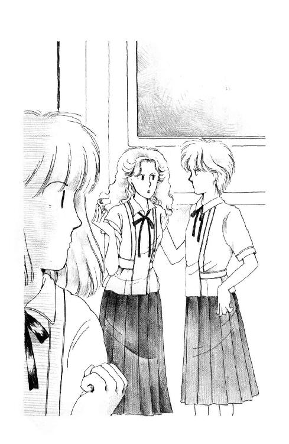
確かに、いつもはとても淑女とは言えない植田さんが先生の前ではおとなしくなっちゃうっていうのはおかしいけど、でもかわいらしい、とも言えるじゃない。そんな、笑ったりしないで応援してあげればいいのに。
苦手だ、なんて言ってるあたしにはこんなこと言う資格ないけれど。
「行こうぜ、ミッキー」
「......うらら、またっ!!」
先生の前で、机飛びするなんて、見えちゃうじゃないの！ いくら先生が『枯れてる』からって、おとこのひとなのに......もう。
会釈して通りすぎようとすると、先生が片手を出した。
「いや、実は浅葉に用があるんだ」
え？
「はい？」
「ちょっと。歩きながらでいい」
いつもの汚い服にくらべると、今日はまだ皺が少ない背広だし、ネクタイもよれてないし、先生ずいぶんお若く見える。
お若いと言ってもどうせ三十四っていうのはわかっているけれど。
「なーんだ。ほんじゃ、あたし先行ってる」
「遠慮するなよ西在家、別に聞かれて困るような話じゃないからさ」
「遠慮しますよぉ。でも、センセイこそ植田に見つかんないようにしたほうがいいですよ」
「うららっ!!」
怒鳴る間もなく、うららはスカートのすそひるがえして行っちゃったの。
「なんだ、三尺さがって師の影を踏まずか。浅葉はあい変わらずだな」
そうじゃないの。あんまりそばによると、汗なのかなんなのか変な匂いがするから二、三歩離れてただけなのよ。
「それなら聞くまでもないとは思うが」
「なんでしょう？」
ツルさんはいつもより三割かたバサバサ度が少ない髪を、がりがり搔いた。
「やー、高校のことなんだがね。おまえはやっぱり華雅学園に戻るのかな？」
立ち止まったあたしの両側を、よその組の生徒たちが、ざわめきながら追い越していった。
「......その......つもりですけれど......」
言いながら、自分でびっくりした。
あたしどうして、こんなにあやふやな答えかたするの？ 当然です、ってなぜ言えないの？
......だって、待って。
急だからよ。廊下でなんか突然言われてびっくりしたのよ。
でも。でも、華雅に戻るっていうことは......。
「んー、そうか。ま、見てくれ」
ぼうっとしてるあたしに、ツル先生は背広のポケットから、なにかくしゃくしゃになったものを手渡した。
「すまんな。ゆんべ思いついて、忘れないようにと思っていれといたらそーなっちまった」
「......なんですか？」
七月二十五日から八月二十日。日曜を除いて毎日九時から四時まで、国語、数学、社会、理科......英語は、作文と文法と英文読解にわかれている。
「課外講習ですか！」
「そーなんだ。俺はなぁ、せっかくの夏休みにこんなもんやることないと思うんだが、見ろよ、そのメンバー。都内の予備校なんかからそれらしい講師呼んで来るんだと。それでとにかく校長がな、おまえの成績を見てさ、是非呼べ呼べって」
「校長さまが......!?」
そうなのよ。
実はあたし、転校して間もない中間テストで学年一等賞をとってしまったのよ。理科や社会の問題が、ほとんど華雅の新学期テストでやったばかりの範囲だったからだと思うけど......英語、国語はもともとまぁまぁだし、数学も難易度が......そのぉ......ほら、華雅って特に難しいことさせる学校だったから、親切な問題ばかりなんでびっくりしてしまったわ。
でも、あんまり嬉しくなかった。
だって、前の学校のおかげで一等賞取った、なんてなんだかズルしたみたいで気持ち悪いじゃない？ なのに、各教科の先生がたは授業でいらっしゃるたびにこぞってあたしのことほめてくださって......ただでさえうちとけてるとは言えない感じだったクラスのひとたちがますます遠くなる気がして、あたしは不安で不安でしかたなかったのよ。
一時は、英語の小テストまで見るのもいやになったのよ。
でも、みんな、こころの広いひとばかりで、ほんとにホッとしたの。
『とろい子なのかと思っていたけど、さすがね』ってはげましてくださるかたや、あたしのノートを借りたいって言ってくださるかたもあったわ。返ってこなかったノートもあったけれど......予習用のが別にあったからどうでもよいことだし。
思えば、華雅では外部生が上位の成績を取ったりすると、なまいきだ、って憤慨するひとが少なくなかったわ。内部生の誇りを傷つけられることにとても弱かったから。その点、森戸南女学館のみなさんは素晴らしいわ。他人の美点を素直に認めることってなかなか難しい。あたしなんて、りっぱなかたを見るとすぐ嫉妬してしまうもの......反省します。
そうよ。みなさん、あたしのこと、ただ幼稚で世間知らずな子だってわけじゃない、ってわかってくださったのよ!!
だから、期末前には燃えに燃えたの。その結果、あたしは五課目で失点六（分数をはらうのを忘れたのと、苦手の地理でミスをふたつした）という新記録を樹立したのよ。
嬉しかった。こんどは、ほんとに嬉しかった。
素直に嬉しく思ってもいい、ってことがまた嬉しかったわ。
消灯の十時を過ぎてもお勉強したいんだけど、ってママに頼んだかいがあったというものよ。
それにしても。
「校長さまのお目にまでとめていただけたなんて感激です!!」
思わず両手を握りしめて言うと、ツル先生はいやはや、って頭を搔いた。
「あのな、『さま』ってタマじゃないぜ、あれは。はっきり言うが、そりゃ校長は嬉しいさ。うちの学校から華雅高校に受かる生徒が出るとしたら、何年ぶりとかだからな、ＰＴＡも喜ぶ、自分の株もあがる。学校の評判だって変わりかねない」
「まぁ......」
いやだわ。それじゃあたしまるでチェスのコマじゃない。
華雅のこと偉大だって思ってくださるのは嬉しいけれど、かりそめにも教育にたずさわるかたには、『株』をあげることなんか考えていただきたくないなぁ。
「だいたい、講習をやろうって言いだしたのも校長でね、うちの高等部に今家政科があるの知ってるか？」
「はい」
「あれ、廃止になるんだ。あんまりズベ公（註４）ばっかりだってんで。そりゃ、連中は程度が高いとは言えないぜい。でも、けっこうおもしろいやつがいたのに」
パコン、パコン、とかかとを鳴らしながら階段を降りるツル先生の背広の肩が、やれやれ、って言うみたいに動いた。
「そういうやつなんだ、校長ってのは」
そういえば。
転校して来た時、一度だけ校長室にうかがったことがある。校長先生はなにかお電話をしてる最中で、あたしはずいぶん待たされた。そのうち、突然、受話器を押さえて『浅葉くんだね、がんばって』ってひとことおっしゃって。またお電話に戻ってしまわれたから、よっぽどお忙しいかたなんだなぁ、と思って退屈したけれど......。
思えば、あの時、聞くともなく聞いてしまったお電話って、なにかゴルフの相談みたいだったなぁ。
「俺、きらいなんだよなあ、そーゆーの。で、言ってみたんだ。浅葉は自宅学習で充分だと思います、って。それでも声かけといてくれ、って言うからまぁ、さからわなかったけど......おまえもいやなら、断っていいぜ。直接言うのがやだったら、俺言っといてやる」
気がつくと、あたしはくしゃくしゃのプリントをぎゅっと握りしめてしまっていたのよ。
「でも、大勢参加なさるんですか？ これ」
「いや、全部でも四十人にならないだろ。若いみそらで受験なんかしなくたっていいのにまぁ、もったいない」
よそ受けようと思ってるひとって、そんなにいたの？ 森戸南にだって高校があるのに!!
「あたしの知ってるひといますか？ その中に」
「んー、うちの組じゃ奥田に中井に八木沢に......そのくらいかな？ 杉田にも声はかけたんだが、あいつはみんなとなかよく、ってタイプじゃないしな」
「杉丸も？ 杉丸も森戸南を出るっていうんですか？」
「あれ、知らんのか？ 華雅を受けたいってこないだ血相変えて言いにきたぞ。てっきりおまえさんと相談していっしょに受ける約束だと思った」
杉丸が、華雅を受ける!?
ドン、って誰か肩にぶつかって、ゴメーン、って声が遠く聞こえた。
外部から華雅を受けようと思ったら大変なはずよ。評価が平均で４以上ないと受けられないとか、公立の学校じゃ習ってない範囲まで出題されるとか聞いてるわ。
なるべく外部のひとに入ってもらいたくない、って華雅の性格がよく現れてるのよ。
特に高等部から入るのは一番難しいわ。中等部の試験で落ちたひとなんて、中一の頃から専門の家庭教師をつけてがんばるってうわさだもん。ご家族とかご親戚が華雅出身だとかなんとかでなんとしてもはいらなきゃいけなかったかたが、ほんと悲惨な青春を過ごした、って、よくこぼしてらっしゃったわ。ソロリティーなどで。
それなのに杉丸、やる気なの!?
華雅に行っちゃったら、ここにいられなくなるのよ!! うららと離れちゃうのよ!?
......それほど加奈子さまがいいの......？ あのかた、こんどご卒業だって、杉丸わかっているのかしら......。
杉丸のことばかり言っていられないわ。
あたし。あたしはどうするの？
華雅学園。
あたしの母校。幼稚園の時からずっとずっと、あたしを取り巻いていたあの校風──まじめで質素で、あでやかで誇り高くて、素敵に美しい......でも、狭い狭い世界。
戻るとしたら、あたしだって受験しなきゃいけないんだわ。
それも、外部生として。
内部生の試験だってけして甘くはないわ。華雅をよく知らないかたは、高校まで安心でいいわねっておっしゃるけど、それは誤解よ。中等部に上がる時も、高等部に上がる時も、それは厳しい試験があるのよ。
でも、内部生は落ちたりしない。公立とかのひとたちより普段のお勉強が過酷だから、ってこともあるけど......もともと落ちるようなひとは試験受けられないようになってるのよ。華雅の名誉を傷つけないように、とっくに退学になっちゃってるもん!!
成績の点で問題のあるひとは、まず、校長さまご推薦の華雅卒業生──たいていは現役の大学生──が家庭教師になって特訓するの。一年くらい様子を見て、それでも授業についてこれない場合は転校を勧められる。生活態度や行動に問題のあるかたは、学園側に知られたとたんにそうね。中等部進学までに、うちの学年で十人近く、よそに行ってしまったわ。
そんなことも、学園にいる時はしかたないことだと思っていた。
できない子を切り捨てるなんてキリスト者にふさわしいことかしら、って、どなたかソロリティーで問題にされた時も、あたしは『優秀な家庭教師についていただいてもできないかたや、母校愛よりご自分の勝手を大切にされるかたはなにもむりに華雅にいらっしゃることないんじゃないか』なんて思ってた。
あれこれ批判するくせに、『じゃあ、どうして華雅にはいったの？』って尋ねられると『親がいれたんだ』とか『お見合いの時いいから』なんて言うひと、あたし今でもきらいだわ。そういうひとでも『卒業生』っていうことで、ずっと華雅の名前と結びついた人生を歩むことになるなんて、すごく悔しい。
ほんとうに華雅を愛する華雅エンヌにだけ、華雅を語ってほしいわ。
でも、離れてみると華雅にもけっこう変なところがあるのがわかった。
どこ、ってうまく言えないけど......そうね、さっきの『キリスト者として』っておっしゃったかたの気持ち、今だったらよくわかるの。
華雅っていつでも、華雅じゃないものは切り捨ててきた。それが生徒だったら、学校を出してしまうってことだけど、世の中であたりまえのこととか時代の流れとかでも、華雅にとってじゃまなもの、喜ばしくないものは、あってもないふりして無視してきた。そう、例えば、おとこのひとのこともそうだわ。トコみたいに、ちょっといかがわしい本など好きでいろんな知識をしゃべりたがるひともいたけど、聞きたくない、知りたくない、っていやがるひとのほうがずっと多かった。
シスターがよくおっしゃったわ。『無辜であれ』って。水のように透明で、天使のように清らかで、マリアさまのように純潔であれ、って。
そうでいられたわ。華雅っていう繭の中では。生まれたての赤ちゃんみたいに大事に大事に守られてた。外で何が起こってるか、あたしも、知らなかった。ずっと。
だから、通学時間が少々オーバーしてしまったからってポーンと外に放りだされてしまったあたしに起こったひどいカルチャー・ショックなんて、華雅の時の友達は......いっぱいぐちをこぼしたあげく、けんかまでしてしまったトコ以外、誰ひとり気づかないし、わかってくれないと思う。
それでも、あたしだったからまだ良かったのよ。
あたしは楽天的だし、うららや杉丸とすぐお友達になれたし、はっきりいってケンカしたって負けない子だもん。この学校のことだって、ずいぶん好きになってしまった。
でも、もし、あたしが、もっと内気で人見知りが激しくて、みんなのことずっとずっとかたくなに『野蛮で下品で低俗』としか思えないままだったら......。
恐ろしいことだわ。死にたくだってなったかもしれないわ。
なのに、なのに、華雅は、あたしを捨てた。見て見ぬふり、した。
あたしが楽天家かどうか検討した上で捨ててくれたわけじゃないと思う。
母校。
あたしの誇りのソロリティー。
とてもとても、懐かしい。
でも。
戻る？ ほんとに戻りたい？
........................
うーん。あたし、恨んじゃってるのかなぁ、捨てられたこと。
......捨てる捨てないなんてことは抜きにしよう。それでもね、あたし、あそこでもう十年も過ごしたのよねぇ。一生は一度しかないんだよなぁ。そろそろちょっと違う世界に踏み込んでもいいのじゃないかしら......だって、あたしはもう三番町にいたころの、みんなに『ミシェール』と呼ばれていたころのあたしじゃないんだもの。今のあたしは、丘の家の『ミッキー』なんだもの......！
華雅を出ることになったのも、大天使ミカエルさまが、それがあたしに必要なことだとお考えになったからかもしれないじゃない!? ............。
......でもなぁ......。
ほんとうにあきらめられる？
あんなに、あんなに帰りたかったのに。そうよ。変わってしまったあたしだからこそ、同じ学校にいってもまた、全然違う日々を過ごすことができるんじゃないの？
つたのからまる塀。高くそびえるチャペル。行き交うシスター。
古いけれど、いつもいつも塵ひとつなく磨かれている大好きなお御堂。晴れた日には床いっぱいに色とりどりの光の帯が伸びるわ。ステンド・グラスの下に、いつもそっと、祈っていらっしゃるマリアさまの像。ミサの歌声。
あたしの、あたしの、華雅学園!!
「浅葉？ どうかしたか？」
ツル先生の声に、あたしはハッ、とした。
講堂にさしかかる渡り廊下だった。
「おい？ 大丈夫か？」
「......あ、いえ、なんでもありません」
「ほんとか？ 気分悪くなったらしゃがむんだぞ」
心配そうなツル先生に会釈をして、三のＣの列にまぎれこむ時、講習をどうするか答えるのを忘れたことに気がついた。
十畳ほどの部屋の、なにやら古びた掛け軸の下がった床の間を背にして、濃い藍色のおざぶがふたつ。少し前にでているのが、『ご亭主』の朱海さんのお席らしい。その左手がわ、ふすまぞいに、あたしたち『お客』が並んでいる。
朱海さんに一番近いところはうららの席になってるんだけど、朱海さん同様どっかいっちゃって帰ってこない。うららは『お正客』で、お客側の作法をはじめにやってみせてくれる役だそうだから、あらかじめ注意事項を確かめておこうと思ったのに！
あたしをこのおざぶに案内してくださったのは、鈴原さんってまだ若い女性だった。白と濃紺のモダーンなお着物がよく似合うきれいなひと。バートさんとあたしが顔みしりなのがわかると、じゃあ、ってそっと微笑んで下座にひっこんでしまわれた。
あたしはバートさんとふっくらしたおばさまの間に座った。
......ふう。帯きつう......。
でも着物きてきてよかった。みんな着物なんだもん。バートさんも紬っぽい着物きて、痛そうに正座してる。あたしは淡い水色の蝶々柄の一重をママに借りてきたの。黒地に手毬模様の帯を胸高に締めて、帯締めと帯あげは山吹色。すこし地味だけど、てっぺんにかんざしさしただけで下げたままの髪が長めのおかっぱだからちょうどいい。
静かだ。
何人もひとがいるのに、しいんと静か。
こういう雰囲気はきらいじゃないはずなんだけど、今日は眠くなっちゃいそうよ。
だって、昨夜。華雅の英語の教科書持ち出して、今どのへんまでいってるのかしら、なんて考えていたらどんどん不安になって、思わず予習はじめてしまったんだもの。
華雅に戻るか戻らないかはともかく、本来ならやっていたはずの授業が自分なしでどんどん進められて、あたしは二度とそれを取り返すことができないかもしれないんだ、って思ったらいても立ってもいられなくなっちゃった。
こんどトコに手紙かいて、テストがあったら全部コピーを送ってくれるように頼もう。
「ミック、お元気でした？」
小さな声でバートさんが言った。
植田さん以外にも、このひとのうわさを聞いて逢いたがってるひとがずいぶんいたわ。昨日終業式のあとで、うららは質問ぜめにあって、なんだかんだとはぐらかしたあげく、いつか逢わせるから、ってついに約束させられていたな。
こうして、すでにお話をしてしまってるってことが、ちょっと得意。
「ええ。バートさんは、御成学院に慣れました？」
「ウン!! もう授業中にドードーと寝てます」
「やだ!!」
「だぁって、ぼくは日本語よくわかるつもりだけど、知らないコトバが多くて......センセイ、オボーサンだからオキョウと同じイントネーションなんですよ。ミックでも寝るよ、あの授業は」
ほんと、眠いって思ってる時にウインクまじりにそう言われると思わず笑っちゃうわ。
バートさんが呼ぶと『ミック』に聞こえる。未来って言ってるのか、ＭＩＣＫＹの略で言ってるのか、どっちなのかなぁ？
どっちにしても、なんだかあたし、外国の少年にでもなったみたい。
「それより、聞いたよ、アケミに。ミックの家にディンギー・ヨットがあるんだって？」
「ええ。でも、うちにあるって言ってもみなさんのものなんですよ」
「それ知ってたら、この間ミックの家の近くまで行った時、見にいけばよかった！ こんど、行ってもいい？ アケミに連れてゆけって言ったらミックに聞いてくれって。ね、いいでしょう？」
さすがに、身ぶり手振りが豊かだから、話につられちゃうなぁ。
「どうぞ、どうぞ！ うちの父が、バートさんと昔の映画の話したがってました」
「リァリィ？」
「原節子さんのこと、好きだったんですって。あたしにも見せたいとかって、あの後大騒ぎでした」
「ワオ!! これはゼヒトモ行かなくちゃ！ ミックのダディ、リュー・チシュー（註５）に似てると思った!!」
上原謙じゃない名前だわ。リューさんって、どんなひとなのか聞こうと、あたしが口を開きかけた時、ふすまが開いて、バートさんあわててかしこまる。
「おまたせいたしまして」
海老茶色の着物でおじぎをなさったのは、西在家さんちのおかあさまよ。
その後から。
「ラーラ！」
かしこまったかと思ったら、バートさんったらもう膝立ちになって、パンパン派手な音をたてて拍手しちゃうの。
しずしずはいってきたうららが、照れてしかめっつらをしても構わず、『ブラヴォー！』なんて叫んじゃうのよ。
でも、ほんと、素敵なの!!
想像できない、なんて思ったりして悪かったわ。お振袖は金糸銀糸のあでやかな刺繡。千鳥やおしどり、あやめに牡丹、四季おりおりの風物がごっちゃに描いてあるのにまとまりがある不思議な図柄の総振の、長い長いたもとがそっと揺れる。いつものボサボサ頭をきちんとセットしたうららの陽に灼けた顔に意外に良く映えてて。背が高いから大きめの笄が似合ってる。ゆるりと回る足さばきも踊るように、すうっとおざぶにおさまる。
......これがうらら？
ひょっとするといつものガサツなのは一面でしかなくて、これがうららのほんとの姿なんじゃないかしら......。
すっかり乗り出してみとれちゃってるバートさんの肩ごしに、うららの目があたしを見た、と思ったら。
「よぉ！ 見てよ、これ。まったく我慢大会だね！」
「......（どうしてこうなのよ!?）」
「あれミッキーも小紋なんか着ちゃってまーかわいいこと！ わー、あれでしょー！ ウリウリ、誰かさんに見せようと思ってからに、この！」
ひとがせっかく、ひとがせっかく感心してるのに......こういう時くらいおすまししてくれたっていいじゃないの!!
「あー、あっついあっつい。暑いねー。気分悪くなんないうちに脱ぎたいね、お互いさ。ふーのぼせるー」
片手を扇子がわりにバタバタ顔の前で動かして、おとこのひとがネクタイを緩めるような動作でお振袖の襟もとをぐいぐいやるのー！
......もーいやっ！
「これっ」
あれこれお道具を運んでらしたおばさまが見とがめて低く叱っても、うらら平然として。
「いいじゃないよぉ、どうせ内輪の会なんだし。もう飽きた。ね、バート、一瞬感動したでしょ？ したよね？」
「......エー......したけど」
二の腕までさらけだして、お振袖で腕組みなんかしないでよっ！ バートさんだって困ってるじゃないの！
「あれがいわゆる日本の女性ってもんよ。でまぁ、その正体ってのはだいたいこうだ、って思われちゃうとあたしは全日本女性に恨まれっからさ、言っとくけどあたしが特別ひどいんだからね。はっきりいって、日本女性の代表を務めるウツワじゃないの」
「ウリちゃん」
たしなめるような声で言ったのは、一番下座にいるあのひとだ。南部のおじいさんも前にうららのこと『ウリ坊』って呼んでたな。じゃ、鈴原さんって、うららのこと小さい時から知ってるのかな？
「あによぉ!! あ、バートあのひととイントロデュースした？ 彼女ね、鈴原みづゑさんっていって、親戚なんだ。美人でしょ？」
「......ラーラだって美人だよ」
さすが、バートさんだ。たちまち立ち直ってる。
「またまたぁ、何にもでないよぉ」
うららったら、バートさんの背中を肘でこづくの！
あたしの左隣から二の四の、七人ばかり並んでらっしゃるおばさまがたも、苦笑なさってるじゃないの。うららのご乱行はとっくにご存じなのか、特に怒りだすとかされるかたはないけれども......家元の娘として、恥ずかしい、って気持ち、ないのかしら......ほんとに困った子。
おともだちとして、ひとこと言ったほうがいいかなぁ......おかあさまがたがおっしゃっても聞く子じゃないし。
「ねぇ」
ちょん、ちょん、って膝のあたりをつついたのに、うららったら大きな声で。
「......はん？」
......だめだ。
これは、場所を変えてゆっくり説得にあたらないと、こんなところでけんか始めたりしたらそれこそみなさんにご迷惑だわ。
「ううん、なんでもない」
「なによー、変な子」
「うらら、はじめるよ」
凜とした声がした。
いつの間にかお席についていた朱海さんが、コホン、なんてまじめな顔してる。
うわぁ。......あたし、もともとおとこのかたの着物ってきらいじゃないの。お亡くなりになった立原正秋さんなんかが、板塀の街並（思えばあれこそ鎌倉ではないだろうか）を着流しでそぞろ歩きなさってる写真なんか、ママの婦人雑誌で見てぽーっとしてしまったくらいですもの。
朱海さんの着物姿ってはじめて見たけれど、さすが、似合うんだ。これぞ家元の血よ!!
深い深い海のように、見る角度でキラキラと色を変える織り方の着物。いつものジーパンよりずっとおとなびて見える。
フン、って言っておとなしく座りなおしたうららを軽い横目で確かめると、朱海さんはお湯吞みを丸っぽくしたようなお器を両手でちょっと置き直して、一礼された。
お客衆も深く礼を返す。
朱海さんは、銀色の箸を手にすると、炉にかけてあった金網の上から黒くて丸いものを取りあげ、置いたままのお器の中に入れた。続いて箸先で、お器の中をそっとなぞる。さっきの黒丸を埋めた上に、あらかじめ入っている灰を山型に整えていく。
きびきびと無駄のない動作なのに、どこか優雅で、完成されたスポーツのフォームを見ているみたい。
このひとが革のジャンパーひっかけてバイクを飛ばしているところ、とか、ヨット欲しさにハーバーをたむろして、よその艇のお手入れや艤装のお手伝いをひきうけてはチップをもらってためていた、とか、ちょっと想像がつかないわ。
なんだか緊張しちゃう。さすがのうららもおとなしくなったおかげで、このお部屋、呼吸もはばかられる静けさなんだもの。
しかたなく息をとめて、ただひとりゆっくりと動いている朱海さんの手元、じーっと見ているうちに、あたし、遠近感がおかしくなってきた。からだが空気に漂っていきそう。
うわぁ、これって、眠けじゃない？ 催眠術にかかっていくみたい。
まずい......来たい来たいって叫んで呼んでいただいたくせに、居眠りなんかしちゃったら大変よぉ！
手の甲に爪たてて、ちくちくつねっているうちに、山型の灰の上に薄い石の板が乗り、さらに何かが乗ってどうやら朱海さんは儀式を終えたらしい。
伏せたまつげがちらっとあがったかと思うと、お道具をはなして、そっと微笑んだわ。
「けっこうです。では」
美しい所作で、畳の上に置き直されたお器は、おざぶをすべりおりた家元夫人の手で漆塗りの半月盆に乗せられ、正確に九十度向きを変えられてそのまま『お正客』であるうららの前に寄せられる。
「拝聞いたします」
左右に流した長いたもとをしゃらしゃら鳴らして、うららはまず、みなさんに、それから朱海さんに礼をした。朱海さんも真面目なお顔で礼を返す。
うららは、朱海さんほど洗練されてはいない。でも、普段のうららからは信じられないくらいなめらかな動作で、お器を引き寄せた。ちょっとななめにして顔の右側を近づける。
それから、左側。
...なるほど。
右左の鼻腔で、それぞれ匂いを確かめたのね。
うららはお器を畳に置き、両手で丁寧にお盆に戻したけれど、くしゃみをこらえてるみたいな変な顔。おざぶのうえでからだを回し、バートさんに向くと、
「お先させていただきました」
「......エッ？ ......あ、ども」
あわてて、カクンとおじぎするバートさんと肩がぶつかりそうになる。
「......バートッ!!」
うららの手が、ピシャッ、とバートさんの腿をたたいた。
「せっかくあたしが調子あわしてんだから、まじめにやってよねっ！」
「......ヤー、わかった」
「いい？」
もう一度からだをもどすと、うららはあっけにとられるくらい優美な手つきでお盆の端をつまみ、畳の上をすべらせてバートさんの前に置いた。
バートさんは、まいごの子供みたいな顔でキョロキョロして、うららに叱られる。
「こらこら。こっちだってば」
「......どっち？」
「だから、これ持って匂いかぐのよ。スメルよ、スメル。気取んなくていいから、とにかくやってみて」
「えーっと、どっちの手から出すのでした？」
「両手！ 両手で、ほら、こう」
うららの動作を横目で見ながら、こわごわお器を持ち上げたバートさんの手つきといったら、もう、時限爆弾にでも触ってるみたいよ。
「そんなに固くならなくていいのに」
掛け軸の前で、朱海さんが苦笑した。
「でも、アケミ、落としそうだよ、ぼくは」
「大丈夫。だいたいね、こう、肘をつけてるのも、いちいち畳に置くのも、そのほうが落としにくいからなんだ。はじめてなんだから、形にこだわらずに楽にして」
「......楽っていっても......ウーン、リラックス、リラックス」
おっかなびっくり鼻を寄せると、
「......グゥ!!」
びっくりするくらい大きな声を出したかと思うと、バートさんはあたしの手に、お器を押しつけちゃったの!!
うそ。
一回、畳に置いてくれなきゃ困るじゃないの!!
頭ではそう思ったけど、つい、顔に近づけてしまった。だって、お道具を渡されたとたんにふわっと、甘い空気が流れたんだもの。
朱海さんの儀式が一段落した頃から、かすかにいい香りはしていたけどそれが自分の手の中にある、って思ったら、つい。
あじさい色のお器の中の石の板の上に、小指の爪を切ったのくらいの木片がある。
これが、お香っていうものなの？
さりげないいい匂い。香水だと、出合いがしらにジーンと匂うけれど、お香ってマイルドなんだ。顔のすぐそばに持ってきても平気なの。
形もきれい。丸い器の中にきれいに筋目の入った山があり、キラキラした半透明で四角い薄い板が乗っている。
お器も、見かけはそのへんのお茶碗と変わりないのに、すうっと手になじむ。ひんやりした陶器の肌が、あたしの手の中でしっかりと落ち着いて自然と背中が伸びるのよ。きっと名のあるお作なんだろうな。
しばらくそうしていたかったけれども、あまりひとりで時間を取ってしまうと申しわけないわよね。
バートさんがあわててあたしの前に押しやってくれたお盆の上に、そっと戻して、あたしははじめてお香さんに別れをつげたの。
ふう。
夢中だったから、思わずすぐ、匂いをかいでしまったけれど、あの場合、やっぱりもう一度、お盆に置いて、ちゃんと礼をしてからいただく（いただく、っていうのもおかしいけれど、どう言えばいいのかわかんない）べきだったのかもしれないなぁ......。
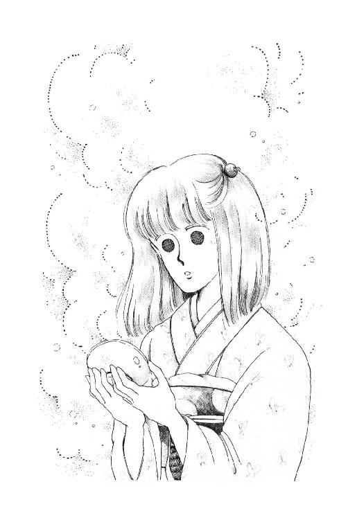
汗がでてきちゃう。
「......ソーリィ、ミック、ごめんね。ぼくがいきなり渡して驚いたでしょう？」
バートさんが小声で言ったわ。
見ると、少し灰色がかった目を心底悲しそうにしばたたいて、くちびるかんでいる。
「ううん、そんなに、気になさらないでください!! あたしだって緊張して、ほら、がたがただもの」
「リァリィ？」
こくん、とうなずくと、バートさんは安心したみたいにまじめに前に向き直った。
お香はどんどん末席のほうに回っていく。さすがに、いつもなさっているかたがたのお手並みは、形が決まっていて美しい。
前に、朱海さんに、香道ってどんなことするものですか、って尋ねたら『どうでもいいことを熱心にやってる』なんて言ってたな。
例えば、お茶と比べると。そうね、確かに、お茶をたてて飲むことは、食欲っていう人間の三大本能のひとつをちょっととはいえ満たすこと。いい匂いをかいだからって、おなかはいっぱいにならないけど。
だから無駄だなんて、思いたくないな。
あたし、習ってみたくなってきちゃった。
しきたりどおりの典雅なしぐさのあれこれ、覚えてみたい。時には、こんな静かな雰囲気にひたるのも、こころの栄養になるじゃない？
でも、お聞香って、風邪ひいてるとできないだろうなぁ。
「神妙な顔しちゃって」
バートさんをはさんでるから、前に身を乗り出すようにして、うららが言った。
「どおだった？」
「感動した!!」
「......へぇ......好きねぇ」
もっと何か言うかと思ったけど、うらら意外に素直にひきさがったところ見ると、口で言うほどお香好きじゃないわけでもないのかな。
ひととおりお香がまわると、また、あらためて別のお器、別のお盆が登場した。
「白雪でございます」
家元夫人がご挨拶なさった時、焦ってしまったわ。
あたし、最初のお香の名前、聞くの忘れたんだ。生まれてはじめてのお香。あとで朱海さんにでも尋ねておこう。
今度はバートさんも、なんとかお盆経由で回してくださった。
だから、落ち着いて香りを楽しめたのだけれど......さっきの匂いとどっちが好きか、もうわからなくなっちゃってるなぁ。
その次は『らん月』だった。
はっきり匂いを確かめようと息を吸い込みすぎて、くしゃみが出そうになっちゃって、困ったわ。
だいたい、もう足がしびれているのよね。うららでさえ、平気で正座し続けているんだもの、がんばらなくっちゃ。足の親指をそっと逆に折り返して、ジーン、ってなってくるあいだ少し腰をうかしておく。
やっぱり、これは精神統一の場だわ。
どうにかこうにか落ち着いたころ、ガラスみたいな青いお器に入ったお香がでた。素朴な感じの木目のお盆。『浮ふね』という名前。
霧の中を歩いてる時、かすかに感じる匂いをうんと凝縮させたようなお香だわ。
お菓子みたい。宝石みたい。
しばらく見とれてから、まず右、そして左に顔を傾けた時。
床の間の前の朱海さんと目があった。
あたしが見たのに気づくと、朱海さんがゆっくりまばたきをしたの。
やだ。笑ってる......？
うららの真似して、右・左、ってしてたけど、あれっておかしいのかな。あんまりかっこうつけすぎだったかしら......。
目を伏せて、お器を返して、お盆を隣にすべらせる。
むずかしい。
みなさん、なにげなくしてしまうことなのに、あたしぎくしゃくしてる。変に気取ってるって、自分でもわかる。
でも、ひどいわ。はじめてなんだから、じょうずにできないのしかたないじゃない。笑うことないじゃない。
バートさんには、思うようにしていい、って言ってあげたのに......。
そのバートさんは、もう足が耐えられない!! って横向いて伸ばしちゃって、うららとあれこれ話している。
あーあ。杉丸がいてくれたらよかったのに。
......ふう。ほんとに杉丸ったら、うららの振袖も見ないで華雅受験に賭ける気なのかしら......あの子も思いこんだら猪突猛進だからなぁ......。
鈴原さん、というあの最後のひとが歩いてきた。その、歩きかたも、すっ、すっ、とリズムに乗っていてとても毅然としているの。
あたしも畳の上の美しい歩きかたくらいマスターしたいなぁ。お香を習うことで、お行儀も習うことになるだろうな。
やっぱりこれはママに相談してみよう。
鈴原さんは、携えてきたお盆を家元夫人の前に置くと、お返しのご挨拶とお辞儀をした。
じゃあ、これで第一ラウンドは終わりなのかな？
......よかった!!
いくら静寂が気持ちいい、って言ったって、ここまで、一時間半はたっていると思う。着物の袖から時計が見える、っていうのもなんだか変だから、バッグに入れてきたんだけど、まさかここで取り出して見るわけにもいかないから、はっきりはわからないけど......。
一度はなだめた足がまた、じいんとしてくる。
「それでは」
......あれ？
ひと声かけて朱海さんがたもとから袱紗を出すのが合図だったように、家元夫人と鈴原さんが、何かくばりはじめたの。......硯箱だ!!
うそ。あたし自慢じゃないけど、お習字ってだめなのよ。筆持つのへただし、墨ひっくりかえしちゃったり、服汚しちゃったりしそうで怖いから、小学校以来やってないの。
さすが『道』というだけあるんだ。お香を楽しむだけと言っても、書道のたしなみまでテストされちゃうんだ。
困った......へたな字を書いてきっと、またみなさんに笑われちゃう......。
「ミッキー、ペン、忘れた？」
急に、うららが言ったの。
「ペン？ 持ってきたけど......」
「懐紙は？」
「あるわ」
「じゃ、出して」
......よかった。
ペンでいいんだ。
でも、懐紙までペンといっしょに出して、っていうってことは......。
な、何か書くの？
あたしは思わず、うららのたもとに手を伸ばした。
その時、ちょうど、うららはバートさんに、懐紙を取り分けてあげながら『これはカイシっていうのよ』と説明を始めていたのよ。
「ほら、お茶でお菓子をのせたりとか茶碗拭くのに使う紙なんだけどね、和歌だの連歌だの書くのにも使うわけ」
和歌ですって!!
「じゃ、ぼくも一句ヒネルの？ ここで？」
とっさにあたしと同じこと考えたらしいバートさんが、すっとんきょうな声を上げた。
「うわー、ワカなんてやったことないよぉ。ゴ・シチ・ゴなんだっけ？」
「七・七」
うららったら、にやにやして言うの!!
「あ、わかった。それで、さっきの『シラユキ』『ウキフネ』と、もひとつなにか、あれを全部使え、とかいうんでしょう？」
......書道どころじゃない!!
「おや、ミッキー、何青ざめてるのよ」
「......待って......今考えるから......でも、雪と船と月じゃ、季語バラバラじゃないの、どうやってひとつになんて......」
「和歌に季語なんていらないよ。ミッキーたちと船のり千度、ツキまてば、ケンスイかなわず、雪の降るかも」
「......な、何よそれはっ!!」
「だから、あんたといっしょに舟に乗ってあげようとしても、千回やってもケンスイができなくてあがれないから、冬になっちゃった、ああ、カモ鍋のおいしい季節だなぁ、っていうのよ」
「............」
い、いやみ!!
でもうららったら、いやみいうだけのために、とっさに万葉集もどきつくれるんだ。まじめな和歌だって、きっと即座にできてしまうんだわ。
さすが平安の昔から続いたという家柄は......。
「何落ちこんでんのよ、うそ、うそ」
「え？」
「あのねー、最初にひとつ出たでしょ、あれ、後のみっつのうちのどれかと同じもんなの。さて、どれだったでしょう、ってんで、答えを書いてもらうと。そういうことよ」
「なんだ......」
バートさんが、ふうう、って肩を落とした。
あたしもほっ、と......。
「どれと同じだったか、ですって!?」
そんなこと、そんなことわからないよ!!
「あーら、簡単じゃない。ただのあてっこよ。はずれたって別にどってことないし」
「キュー覚のテストか......」
バートさんとあたし、情けない顔を見合わせる。
「ひどいわうらら、それならそうと初めから言ってくれれば!!」
「そしたら、匂い楽しむどころじゃなかったでしょーに。まぁまぁ、はずれてもともとなんだから、ヤマカンで書きなって。三タクだもん、当たるかもよ」
「ラーラは、当然答え知ってる？」
「うううん、知らされてないけどさ。とーぜん！ わかったよ」
さーて、ってくちびるなめると、わざわざ背中向けて懐紙を隠すのよ。
......なんていい性格......。
「どうします？」
「ドースル？」
バートさんとあたし、なんだか運命共同体みたいになってきたなぁ。
でも、ひとりがふたりになっても、白い懐紙をいくらにらんでも、答えがでてくるわけじゃない。なんだか、頭がぼうっとしてきたわ。
あああ。テストなんて大っきらいよ!!
「ぼくはランゲツっていうのがいちばん怪しいと思う」
バートさんは、力強く言った。
「だから、ミックはあとのふたつのうちどっちか書くといいよ」
「どうして？」
「ふたりで違う答え書いておけば、どっちか当たるかもしれない。ラーラと三人でみんな違うの書けば、絶対どれかは当たるのにねっ!!」
「......（平和なひとだ）......」
「わかったかな？」
後ろで声がしてふりむくと。
「や、やだ。朱海さん、いつからそこに？」
「アケミ!! ヒント、ヒント。ランゲツは当たりかはずれか？」
「......うーん、内緒。ま、いいじゃない。どうせ遊びなんだから」
上目づかいに見ていると、朱海さんはまた、クスッ、と笑ったわ。
「未来ちゃん、ほんとにわからなかったの？」
って......ゆっくり目を閉じて、それから、開いた。
え？
まばたき......？
......カンニング!!
朱海さんはふところ手をしてすましていた。
カンニングは大当たりだった。
と言っても浮ふね、って答えたかたが大半だったのだから、あれでわかりやすいほうの問題だったのかもしれない。
そうよね。考えてみればご亭主の朱海さんの名前にちなんでも、季節がらも、浮ふねが一番ぴったりくるもの。
あたしが当たったのを知って、バートさんもとても喜んでくれた。やっぱりふたりで違う答えを書いておいてよかったでしょ、ってね。
それから、みんなでおざぶを持ち寄って、ずっとくだけた感じでお茶をいただいた。
家元夫人がバートさんとあたしをみなさんに紹介してくださって、彼は『なぜ鎌倉に来たのか』をさっそく披露して座を盛り上げたりしていたのだけれども。
「おかしいな」
うららが不意に、そうつぶやいたのよ。
なんだか落ち着きなく、誰かがふすまをあけたてするたびに首をまわしていたと思ったら。
「どうしたの？」
あたしが尋ねても、
「......ん、なんでもない......」
うるさそうに手を振ってみせるけど、顔がこわばったままなのよ。
「なんでもなくないじゃない。どうしたのよ？」
「いや......ちっ......しかたないな、ちょっとおいで」
言いながら、うららはささっと立って、こっちこっち、って縁側の廻り廊下にあたしを招いた。
海からくる風がお庭の木々をそっと揺すっている。
真夏のひざしが直角近く照りつけて、影が濃い。
話してもみなさんの集まってらっしゃるお部屋には聞こえないあたりまで来ると、うららは突然、ふりかえった。
「どーもおかしいんだよ。だいたい、いくら朱海くんのデビュー戦とはいえ、おやじが出てこないって法はない。バートの歓迎会やるんだ、ってあんなに夢中になっていたのに」
「そう言えばそうね。おとうさま、まだお見掛けしてないわ」
「それだけならまだいいんだけど」
むすめらしく、あまり大きくぬいていない襟足を、ガリガリ搔いて、うららは顔をしかめた。
「さっきおかんが兄貴の耳になんかこしょこしょやってたの、見なかった？ 朱海くん一瞬顔色が変わったんだ。しばらくとぼけてたかと思ったら、いつの間にか席はずしちまってこれも戻ってこない」
そう言えば。
バートさん、紹介するのにどうして朱海さんじゃないのか、ちょっと変だなと思ったわ。
「なにか良くないことでも？」
「......うーん」
目を細くして、ため息をついたかと思うと、うららはいきなり帯締めをほどいた！
「なにするの？」
「こんなやっかいなかっこしてらんないわよ。あたしひとりをのけもんにしてさ！ あらかた察しはついた」
いいながら頭をひとふりして笄を抜き、それを横ざまにくわえて両手で髪をバサバサやった。きれいにセットしてあった髪がたちまち崩れちゃう！
「ちょ、ちょっとうらら」
「あんた、わるいけどあたしがどこに行ったか聞かれたらうまくごまかしといてよね」
「え？」
止める間もなく、うららは早足で二階のほうへ行くのよ。ほどいたひもを何本もしゅるしゅる流して急ぎ足、しまいにはおはしょりまでおろしちゃったらしく、時代劇のおひめさまみたいなお引きずりになってる！
「待ってよ、うららあたしそういうの苦手なんだってば」
「しっ!! ついてこないでよ！ バレちまうじゃないの」
「だって、だって、あたし何て言えばいいの？」
「そのぐらい考えてよ、あたしそれどころじゃ......う」
縁側の突き当たりの角の向こうから、ひとの気配！
「やば！」
叫んだまま立ちすくんじゃったうららを、あたし思わず背中にかばった。後ろに隠しきれるとはとても思えなかったけど、男のひとだったら大変だもん！
「ウリちゃん......！」
出てくるなり、小さな叫びをあげたのは。
「なーんだ、みづゑさんか。脅かさないでよ」
ホッとしてにやっとするうららの肩をつかむようにして、みづゑさんが角の小部屋に引き入れた。
「若先生が捜していたのにっ！」
押さえた声だして、ピシャン、と障子を閉める。
「なんで兄貴が」
「だから、香織さまが......！」
いいかけて口ごもったみづゑさんの目があたしを見てる......？
「......やっぱり香織ちゃんか......」
うららは、いいかげんバサバサになったお振袖の前を搔きわけるようにして、どっかりとあぐらをかいた。
「そんなことだろうと思ったよ。今度はずいぶん長いこともってるなって感心してたんだけど......なにも今日来なくたっていいのに」
「......ウリちゃん、こちらは？」
みづゑさんはあたしのほうをちらちら見ながら、そっと膝を折って、うららのそばに座った。あわてて座ろうとしたあたしは、ペタン、と腰が抜けてしまう。
「ミッキー？ ああ、この子はいいの。バカだけど、悪い子じゃないから」
「うっ......うららっ！ そういう言いかたってねぇ!!」
「しっ!!」
うららとみづゑさんの両方が、あたしの口に手でふたをした。
「で、おねえはどこにいんの？ 蔵？」
「ええだいぶ落ち着いてきたみたいだけど......みんな出ようとすると泣かれるから、家元が離れられなくて」
「そいつは重症だな」
みづゑさんの目が、眠ってる猫の目のかたちにすぼまった。
待ってよ。どういうこと？
香織さんって西在家さんちの一番上のおねえさまで、麗美さまたちよりちょっと上のころの華雅御前だったかたでしょう？ そのかたがいらっしゃったからって、どうしてそんなにあわてたりかくしだてしたりしなきゃいけないの？
蔵？ 蔵に閉じ込めて......正気に返るとかなんとかって、こんなに秘密にして......。
まさか！ で、で、で、......でも、それってひょっとすると......。
パタパタとどこかで鳥が飛ぶ音がした。
あぐらかいた膝を片方立てて、そこにほおづえをついたものすごいお行儀でうなっていたうららが、それを拍子にしたみたいに、あっ、そうだ、って手をたたいた。
「小熊に連絡ついた？」
「それが......なんでも、夏休みを待ってご家族で富士山に行かれたとかで」
「まずいなー」
両手で顔を抱えたかと思うと、うららはガバッと立ち上がったの。
「おそらくそれがひきがねだ。と、すると小熊が帰ってきてくれるまでは正気になってくれないって覚悟したほうがいいな。わるいけどみづゑさん、この子連れて香室に戻っててくれる？ バートのことも、みといてよ」
「ウリちゃんは？」
「ジジイがひとりで奮闘してるだろうから恩売ってくるわ」
そこでうらら、ふりむいて、にこっとした。
「この子、朱海くんの思い人だから、頼むね」
「う、うららっ!?」
なんでこの子は、なんでこの子は、こういう時にまでそんなことを......。
混乱しているうちに、うららはあたしに何の説明もしてくれないままに風みたいに消えてしまった。
でも、そうだわ。
このかた事情を説明してくれるかもしれない。
「あ、あのう......みづゑさん......？」
おそるおそる声をかけると。
「浅葉さんっておっしゃったわね？」
こっちに顔向けずに、みづゑさんが低い声をだした。
......怒ってる？
やっぱり、一族じゃないものが深入りしちゃ、いけない秘密なのかしら？
「あ、いえ、あたしでも何かお役にたつことがあったらと思って」
「若の恋人なの？」
みづゑさんは急に、下からえぐるような目であたしを見た。お香の部屋にいた時には気づかなかったけど、このひとって、ほんとに猫みたいな目をしてる。
「え？ 若？」
「みーくん......朱海くんよ」
「違いますよ!!」
言ったのに!!
「そう。あなただったの」
そらした頰にほつれ髪ひとすじ、やけに凄絶に微笑んで、みづゑさんは深く息を吸った。
「東京から若を慕ってわざわざ転校して来たひとがいる、とは聞いていたけど、さっそくウリちゃんにとりいっていたの。ずいぶん周到ね」
「ちょ、ちょっと待ってください!!」
「身のほど知らず」
「......えっ」
「あら、失礼なことを言ってしまったわ。ごめんなさい。でも、言っておきますけど、家元って大変なのよ。もちろん、家元夫人にもおのずからふさわしい気品、格、芸のこころえが必要ですわ。ちなみにわたくしは幼いころからお茶お華日舞はひととおり......おわかり？」
しゃべろうとすると、口の中が渇いて変だった。
すっ、と背を伸ばして座っているみづゑさんのまわりに、めらめら陽炎が立ってるように見えるのはあたしの錯覚？
「若はどうお思いか知らないけど、御内儀ともなると若の気持ちばかりではどうにもねぇ......一族のみなさんへの影響ってこともありますし。あら、余計なことを申しあげたかしら？ まさかそんな大望は持ってらっしゃらないわよねぇ？」
......わかったわ。このひとも誤解しているんだ！ 例のうわさで!!
あたしが朱海さんのこと追いかけて転校して来たんだ、とか、に、ニンシンしているんだとか......真っ赤な噓なのに！ うららったらおもしろがってちゃんと否定してくれないのは知ってたけど、ご親戚のかたにまで言いふらしたのかしら!?
それでなくても、朱海さんのことでけんか売られて、あたしひどい目にあってるのに。捻挫したあたしをバイクで送ってくださった、っていうだけのことでよってたかってひっかいたり蹴っとばしたりしてきたひともあったし、未だに時々外履きの靴隠されたりするのよ。
うららの友人でありヨット仲間であるだけのあたしがなんでそんな......あ、そうか、森戸南女学館のひとたちがなんでも過激に考えてしまいがちなのはよくわかってるけど、あの『不可侵条約松の上』ってご親戚にまで知れわたっているのかしら。
いもうとさんの友人でありヨット置き場提供者のむすめであるあたしだから、親切にしてくださってる、って考えてくれればいいのに......。
あ、そうか。ご親戚だからこそ、特に警戒してるのかもしれない。あたしみたいなおヘチャが、だいじなあととりさんのまわり、うろうろするだけで心配なんだ。
でも、だからって『身のほど知らず』はひどすぎるわ!!
「......なによ。文句あるの？」
「お家柄のことはわかりますけれど、あたしそんなつもりじゃありませんわ、どうかおばさまもご心配なさらずに」
「わたしはまだ十八よ!!」
くわっ、とひらいた口に、牙みたいな犬歯がキラッとした。
え？ そうなの!?
ご親戚っておっしゃるからてっきり......「おねえさま」っていうのもおかしいし......でも、十八歳!?
うっすらお化粧してるし、お色気があるし、三十歳くらいかと思った。
「疑うんなら見せてあげるわよ。ほら。ほらほら、見なさい、えっ!?」
胸元からとりだした赤い革の定期入れに、長い髪を降ろしてにっこり笑ってる写真、よく見ると学校名は......。
「聖フェリシア!?」
どうだ、と勝ち誇った表情に鼻を膨らませ、かんざしを抜いて頭を振ると、腰のあたりまである黒髪が一気に流れ落ちた。ずいぶん芝居がかってるけど確かに写真のひとだ！
......なるほど。
横浜のフェリシアと言えば、女子大までの完全エスカレーターで、高校生はおろか中学生までが早熟な遊興にふけっているので有名だわ。十八歳でお化粧してるのも、そう驚いたことじゃないのかもしれない。
雑誌にもよく取り上げられるもの。ブランドものファッションとか、外車とかを並べて『なんとかさんの素敵な一週間』とかって贅沢と放恣の極みをつくしている、フェリシアのひと。
華雅にだって大変なお金持ちのお嬢さまは大勢いらしたけど、特別の機会でもないかぎり学生らしい質素でつつましいふるまいをなさるものだったわ。でも、いくら隠してもそれと知られるもの。そこはかとなく匂いたつお育ちのよさや洗練されたご趣味がまた、みんなの憧れと尊敬をかうのだった。
お家のこととか持ち物のこととか『東大卒のお医者様の彼』だとか、自慢ばなしを全国的に吹聴するなんてこと、絶対なかったわ！
なのにそれを恥じるどころか、『うちの学校に面接があるのは美人じゃない子は入れないからでーす』なんて平気でおっしゃるのよね、フェリシアのかたって。
女子校と言ってもずいぶん違うものね。
森戸南女学館とはまた別の意味で、カルチャー・ショックを禁じえないわ。
なのに、フェリシアはお派手のあまり、すべての真面目で節度ある女子校生も似たようなもんだって世間の誤解を招いている。
そうよ。いつだったか、東京近郊の女子大女子高の全比較を試みた雑誌があって、あたしのもとのクラスでも勇気あるひとがこっそり買って来てみんなで回し読みをしたの。そしたら、あたしたち可憐で純情な華雅エンヌを捕まえて『完全無菌でおもしろみがなく、エリート意識ばかり強くてかわいくない』なんて言ってるのよ!!
みんなで泣いていると先生が、どうせこういう雑誌を読むのは、興味本位でしか女性とおつきあいをしようとしないくだらない男性なのだから、ってなぐさめてくれたけれど『かわいくない』はショックだったわ。
そのショックがさめやらぬうちに、今度はテレビの深夜番組で、そのくだらない男性諸氏にすごく人気があるとかのフェリシア大生が『華雅の子たちなんてみーんなクモの巣張ってんじゃないですかぁ』って言ったとかなんとかで、父兄のみなさんが激怒して放送局に抗議してくださったとかいう事件もあった。
クモの巣だなんて、華雅ほどきれいな学校はないのよ!! どうせ、長い伝統をやっかんで時代遅れだ、っていいたかったんだろうけど。
その後しばらくは華雅名物特別ピカピカの職員室前廊下がいつにもましてつるつるで、毎日転ぶひとが後をたたなかったわ。
......あ。そうだ。いけない。
華雅も完璧ではないのだ、って考えているとこだったんだわ、あたし。
でも、とにかくフェリシアって好きじゃない!! 諸悪の根源、全女子校の敵よ。
だから。
「そうよ。フェリシアよ」
どうだ、まいったか、ってふんぞり返る鈴原さんの顔、あたしはため息まじりで見つめたの。
うわさにもほんとうのものってあるんだわ。聖フェリシアのひとって、そんなご自分の学校を大変な名門だと思ってるんだ、って。
「そうですか」
軽く言うと、みづゑのやつは『ん？』って顔を曇らせた。
得意満面な顔に、あたし、つい皮肉っぽい声で言ってしまったのよ。
「有名ですものね、フェリシアは」
ピシ！ と鳴ったのはあたしの頰。
「なによ！ 森戸南の子が！」
「うららだって森戸南ですよ!!」
「ウリちゃんは別よっ!! あの子はフェリシア受かったのに、通学がめんどうだって来なかったんだもの!!」
ああ。
なんて低次元なんでしょう......この言いかたでこのひとが、自分のおっしゃるような品も格も持ち合わせていないことはすぐバレちゃうじゃないの。
もったいない......きれいなひとなのに。
ここはあたしがおとなになって、おさめなくちゃいけないんだわ。
かんしゃく起こすの、やめよう。
「とにかくなんだかわからないけど、やめてください。お座敷にもどりましょうよ。朱海さんたち、捜してるかもしれないし」
「朱海さん？ 気安く言わないでよ!! ブス!!」
「......みづゑさん......」
「なによっ!!」
あたし、年上の女性って元来好きなのよ。
それに、いくらりっぱなおねえさまでも、ムシのいどころが悪かったりして時にはパニックおこされるものよ。ソロリティー暮らしが長かったあたしは、高等部のおねえさまがたのおヒスも、見慣れてるし、おなぐさめするのを得意としていたくらいよ。
でも、このひとちっとも落ち着いてくれない。
あたしが冷静になればなるほど、逆に熱くなってきちゃう。
ここは、ひとまず離れたほうがいい。
「じゃあ、あたしは行きますから」
「なによ！ 言いかえせないからって、逃げないでよ」
ああ。困ったひと。
イライラが胸に溜まっていくのを、あたしは深呼吸してこらえた。
「聞こえますから、やめてください」
「待ちなさいよ。どうしてあんたに母校の悪口を言われなきゃいけないのか説明してもらいたいわ。嫉妬もひねくれるとかわいくないわねっ!!」
「......（しっと......？ 何に？）」
「くやしかったらはいってみなさいよ、フェリシアに！（なんであたしが？）あら、どうせ受かりっこないわね」
あたしが......あたしが、フェリシアに嫉妬したっていうの!?
「あぁ、何を震えてらっしゃるのかしら？ あらあらあたしったらこどもあいてにいけないことばっかり。無理よねー、できるわけないわよね。どこ追い出されたのか知らないけど、森戸南なんかに都落ちさせられたひとに。インフェリオリティ・コンプレックスを刺激してしまったかしら。ほんとにごめんなさい......ほほほほほ」
「バ、バカにしないでよっ」
思わず、ふんばったあたしを、猫女の丸くなった目がきょとんと見た。
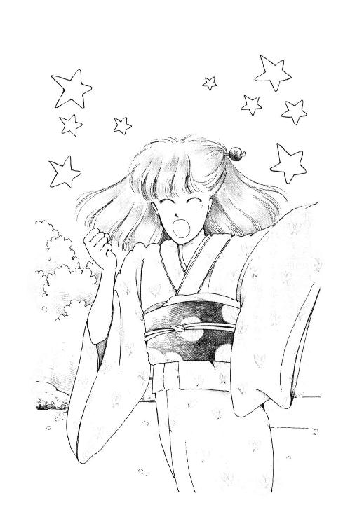
「フェリシアごときがなんだってのよっ!? いーわ、受けてやろうじゃない!! でも、あたしあんなとこだいきらいだから絶対入らないわよ！ 受かった上で蹴っとばしてやる!!」
「......痛っ!!」
まだ茫然としてる猫女の向こう脛を思わず蹴っとばして、あたしはだだだっと廊下を駆けた。
ああ、またやってしまった!!
あたしどうしてこう短気なのかしら......くすん......。
でもっ!! でも、あっちだって、絶対悪いもん!! あっちのほうがおねえさんなんだから、がまんしてくれるべきじゃないの。それにあたしはお客で、あのひとはご親戚なんだから！
走る音にびっくりして開いたふすまから、何か声かけられたけどわからなかった。
目がかすんでる。
お玄関に整然と並べてあったお履物の中に幸い空色の草履はひとつしかなかったから、走って来たままの勢いでジャンプして履いて、あたしは飛び出した。
玉砂利につんのめりそうになった時、ポロンと涙がこぼれたわ。
ひどい。なんていじわるなの。やっぱりフェリシアよ！
あんまりみんなでけなすから、あたしは華雅ではどっちかっていうと懐疑派だったのよ。フェリシアのことあんまりひどく言うひとに、中にはいいひともいると思うわ、って言ってかばってあげるほうだったのよ。
......なのに、何よっ!! 恩知らず!!
下り坂は草履ではとても走りにくかった。息もきれてきたから、歩きだす。
でも......。
あたしもずいぶん、軽率だわ。
フェリシアを受けるなんて......どうしてそんなこと言ってしまったんだろう？ 華雅受験のことだけで、頭混乱しているのに......？
それに。
怒ってみてわかったけど、あたし今でも華雅の子だ。
森戸南もきらいじゃないけど......あんなに露骨に軽蔑されると『あたしはほんとは華雅の子だもん！』って言ってしまいそうになった......。
「未来ちゃーん！」
呼ぶ声にハッとした。バイクの音？ ふりかえろうとするころにはもう、すぐそばに来ていた朱海さんが、キュイ、って止まった。
「どうしたの？ 具合でも悪くなったの？」
すっかり色の落ちたジーパンにラガー・シャツ。
ああ、朱海さんだ。やっぱりこのほうが朱海さんらしい。
思わず頰がゆるんだあたしと反対に、朱海さんはあれ、と顔を曇らせた。
「？ 泣いてたの？」
「いえ、そんなことありません!!」
言ったものの、油断すると目がうるんでるのバレてしまいそうで、あたしはうつむいた。
高い梢がさわさわなってる。
静かになった時、どうにか気を鎮めて顔をあげるとバイクを降りてた朱海さんがあたしの前に立っていた。
「うららになにか言われたの？」
黒革の指先のないグローブの手で腕を組んで、朱海さんは無理に笑ったような顔してる。
「いえ、うららはおねえさまのところに行きました」
「......姉のこと、聞いた？」
考えて、一応うなずいた。聞いたうちにはいるのかもしれないけど、なにがなんだかさっぱりわかんないままそれどころじゃなくなってしまったんだから。
「そう。それと、関係あるの？」
「いえ、ありません！」
「......だろうな。じゃ、いったいどうしたのさ？ 黙ってちゃわからないよ」
じっとのぞきこんでくる目が真剣なの。
ん？ って探るように笑ってみせてくれる。
朱海さん、いつかあたしのこと好きって言ったね。
あたしはびっくりして、それがどういうことなのかよく確かめずに逃げてしまったのに、そのあとも前とちっとも変わらないままでいてくれた。おとなっぽいやさしさで、さりげなくかばってくれて。だからあたし、平気でヨットに乗せてもらえてた。一穂さんや尚史さんと同じように、意識しないで話せてたけど......。
みんな、いやらしく憶測する。このままじゃ、いけないの？
こんなふうに話したりすることも、誤解しようと思えばすぐ誤解できちゃう。いかにも親しげに、ふたりきりなんて......だめだ。とにかく、今日は帰ろう!!
決心して、あたしは言った。
「ごめんなさい、ちょっとおなか痛くなったんです」
「ほんと？ それなのに、走ったりしたの？」
う。
噓つく時は、よく考えなきゃだめなのね。
「あの......えーと......そう!! 少しよくなったんで早く家に帰ろうと思って」
疑いのまなざしであたしを見て、朱海さんはため息をついた。
「それなら送るよ。バイクに着物じゃ無理だから、戻ろう。岸田さん、いるはずだから」
「あ、いえ、大丈夫です！」
「......だって」
「取り乱してご挨拶もせずに出てきちゃって、ごめんなさい。恥ずかしいから、ひとりで帰ります」
「そんなこと気にしなくていいよ」
ほら、戻ろう、っていうみたいに朱海さんはあたしの肩を、お家の方に押すんだ。
「でも、おうちたいへんみたいでしょう？ おねえさまのこととか、バートさんもいらっしゃるし......ほんとに平気ですから......あ、ほら!! もう痛くないです！ どうせ家までバスでもすぐだし」
「未来ちゃん」
朱海さんは首を振って、
「さっきもっと上押さえてたよ」
......え？
あ、あたしずいぶん下押さえてる......。
「なんだかわかんないけど、うちでいやなことがあったらしいのに、じゃバイバイ、って言わなきゃいけないわけ？ 話したくないならいいけど......」
あ。
朱海さん、動いた。
帰っちゃうんだ、と思ったら、なんだかギュッ、って胸が痛くなった。
あきれちゃったんだ......あたしがあんまり頑固だから。なんにもうしろめたいことしてないのに、ひとが変に言うかもしれないなんて気にすることを怒ったのかもしれない。当然よ。あたしだって、あたしだってやだ！ 悪くないのに卑屈になるなんて。だけど。だけど。
くちびる嚙んで、バイクのエンジンをかける背中をにらんでいると、朱海さん、またがらないでバイクひっぱって......道の端のほうにひっぱってく!!
ロックして戻ってくると、パンパン手を払いながらにっこり笑ったの。
「いつもバイクばかりじゃ足もにぶるからね。散歩しよう」
ほら、って手を伸ばしてくれた......！
「いこ」
思わず、その手に手をのせてしまうと、ほらほら、って歩きだすの。子供にするみたいに、大きく手を揺らして。
「おー、ひさしぶりだなぁ、この道歩くのも」
「......そうなんですか......？」
「なーんか海みたいだと思わない？ ほら、シマシマ」
木もれ日が、道に網模様をつけている。
言われてみると、海に出ている時の照りかえしみたいに見えないこともない。
「ほんとぉ!!」
きらきら。きらきら。
あたしの顔も朱海さんの顔も、照らされたり影にはいったりするたびに、南の島のお化粧みたいな模様映して、どんどん変わっていく。
目を閉じても、流れる光が肌の上をすべってくの、わかる!!
ああ、乗りたい。『ミッキー』に。
そう思ったとたん、あたしハッ、とした。
課外講習のこと、忘れてた!!
あれに出るとすると、毎日学校行かなきゃいけなくて、ヨットになんかとても乗れない!!
でも、講習には出ないとしても、華雅高校受験するとしたら、あたしかなりまじめにお勉強しなきゃだめなんじゃないかしら？
半年離れてるうちに、トコたちみんなあたしが習わないことたくさんならってる。入試に受かることももちろん大切だけど、入ったあとでみんなと同じ授業にすんなりついていけるようじゃなきゃ、もと華雅中学生として恥ずかしいじゃない!?
でも、今年の夏過ぎて来年になったら、今度は朱海さんたちが大学受験で忙しくなっちゃうはずよ！
それなのにあたしは、この上聖フェリシアまで受ける、ってたんかきってしまったんだ......。
「何だ、まだ、異性と歩くのは不良だと思っているの？」
ぼんやりしてる頭に、朱海さんの声が飛び込んできた。
「は？」
「だって、怒ってるみたいな顔してるよ」
「すみません!!」
あわてた拍子に手をふりほどいてしまった。
朱海さんは黙って首を振った。
木が跡切れて、まっすぐに差しこんで来てる太陽に、まぶしそうな顔しながら。
はじめて逢った時も、そんな顔してたね。
......話してみようかな......いろんなこと。
話してるうちに自分で考えまとまるかもしれない。
告解してないのがよくないんだ。
あたし、悩んでることことばにして口から出してしまわないとスッキリしない体質になってしまったんだ。どうせ『めでたし』を二十回唱えなさい、とかおっしゃるだけだってわかっていても、なんでもいつでも、神父さまに聞いていただいて、こころ軽くしてきたから。
聖ミカエルさま、ひとを頼りにするのは弱いことでしょうか？
でも、朱海さんだったら、あたしがぐちぐちこぼすことでもまぶしそうな顔をして黙って聞いてくれるような、聞いてもらうだけで楽になれるような、そんな気がするんです。
見上げると、朱海さんは、ん？ ってすぐに乗り出してくれた。
どこから話せばいいのか......講習のこと、華雅のこと、ゆうべ怖い怖いって思いながら勉強したこと、この夏休みのこと......切り出しかねて、あたしは口をぱくぱくしていた。そのうちに、遠くでエンジンの音がしたかと思うと、西在家さんちのベンツが埃舞いあげてどんどん近づいて来て、あたしたちのそばで急ブレーキをかけたの。
「あにき!!」
電動式の窓を開けながら、うららが顔をこじ出した。
「なにしてんのよ、こんなとこで!?」
「おまえこそどこいくんだ？」
朱海さんが怒鳴り返すと、うららはますます声をはりあげた。
「あねきんとこよっ！ あのひと完全にとりみだしてたから商売道具みんな置いてきちゃったんだと。......まーったくしまつに負えないぜ。落ち着いた時にあのいやらしいモンブランがないとまたわめくでしょ？ やっと寝たから今のうちに取ってくんの」
「......しようがないなぁ......」
朱海さんはふう、って息をついたけど......商売道具？
またわかんないことが増えてしまった!! モンブランって、万年筆のほうかしら、ケーキのほうかしら......香織さんって、何してるひとなの!?
？マークいっぱいの頭、こめかみのところで押さえていると、うららやっとあたしに気づいた。
「ミッキー!! なんでこんなとこにいんの？ ......帰るの？」
「そうなの。ことわらなくて悪かったわ、でもあたし実は......」
「じゃ、送るわよ!! 乗んな!!」
ドアを蹴りあけたうららは、こいこい、って犬を呼ぶみたいにあたしのこと呼ぶの!!
つい寄ってくと、たちまち手をひっぱられた。
「ほら、早く!! そんなとこでじたばたされるとドア閉まんないじゃないよ!!」
「あ、待って、あたし朱海さんにお話が」
「んなもんいつでもできるっしょ!? こっちゃそれどこじゃないんだからまったく......岸田さん、出して!!」
バスどおりに曲がる角でうしろをふりむくと、朱海さんがくるっとからだを回して、戻るところだった。
３
あたしは華雅高校過去五年間完全把握入試問題集を買って来た。
とりあえず実力を試してみようと思って。
ほんとうは受験するなら森戸南の講習にでたほうがいいと思う。かりそめにもトップ・ランナーのあたしが参加しないなんてまるで森戸南をおバカにしているみたいだもの。
でも、講習に出るとするとほんとに『ミッキー』をあきらめなきゃならない。
ようは、夏休みは夏休みで楽しく過ごして、その上でイザという時ちゃんとできれば、言うことないじゃない!!
華雅に戻りたいのかどうかもはっきりしてないのに、『受験の夏』にするか『ヨットの夏』にするかはかりにかけるのもゆううつだけど、とにかく入試問題をどこまで解けるか、今のままの学力で入れるものなのかどうか、試してから考えても遅くない。
試験当日の時間割どおりに目覚まし時計鳴らして合図しながら、解いてみるのよ。実際の試験の時にはあたしのことだからどうせあがっちゃう。これで思うようなお点がとれなかったら悠長にかまえていられないわ。だから必死よ。採点して反省して対策をたてるところまでいれれば、一年分が一日。五日あれば終わっちゃうはずだったのだけれど......。
どうも危機感が足りないみたいなの。あたしも、うちのひとたちも。
朝ごはん食べてるとママがケーキ焼きましょって誘うし、パパは羅士丸（ラッシーなんて俗な名前じゃかわいそうだから、あたしはうちのダルメシアンをこう呼ぶことにした）を洗ってやんなさいって言うし、お部屋の整理もしなきゃいけないし、読みたかった本もたまってたし、トコに手紙もかかなきゃいけなかったし......五日で完成どころか三日たってもまだはじめの一年もできてないの！
今日だってそうなのよ。今日こそ朝からかかりきりになれるはずだわ！ ってさわやかに目覚めた勢いでお庭に出て深呼吸したのがいけなかった。
チビの羅士丸がお散歩して欲しそうにクンクン鳴くの。いつも平日はママがお散歩の係なのだけど、日曜にはあたしが連れだすのね。朝からあたしが制服も着ないで家にいるんで羅士丸日曜だと思っちゃったみたいなの。片方の耳を半分立てて、真っ黒のビー玉みたいな濡れた目でじーっとあたしを見て、キューンンン......って声と音のさかいめくらいの鳴きかたするんだもん......いじらしくなっちゃって。ごめんね、あたしは勉強しなきゃいけないのよ、って頭撫でてやってひっこもうとしたら、スカートのすそ、カプ、ってかんでひきとめるのよぉ......うっうっ。心を鬼にして、だめでしょ、そういうことすると！ ってふり返ると、パッと放して、え？ 誰のことですか？ みたいな顔してしっぽふるの。
どうにかこうにか羅士丸と涙の別離をして、んっ、て気合入れて部屋にこもったら、もう十時になっていた。
ほんとはほんとの試験の通りに九時十五分から第一時限の数学をはじめようと思ってたのに！ ......でも、ここでくじけるとまた一日ムダにしてしまうことになるから、しかたなく十時十五分になるのを待って、一時間の差の通りにやろうと決めたわ。
目覚ましを十分にセットしておいて、テスト前らしく参考書に目を通し、問題と解答用紙が配られるのを待ってるつもりになる。
前にも横にも後ろにも、いずれおとらぬ聡明な外部受験生がいるってつもりになることを忘れちゃいけないわ。
そうよ。もとソロリティーの一員として、誰に見せても恥ずかしくないお点をとらなければ!! ......うー。緊張してきた。本番みたいな気になってきた。
時計の音、気になる。......やっぱりここはそれらしく腕時計を置いてやるべきだったかしら......でもそうすると目覚ましは遠くにおかなきゃいけなくなって、セットしなおすたびにせっかく統一した精神が乱されてしまいそうだし......。
ベルが鳴った！ 用紙類が配られはじめる時間。
五分後にベルをセットしなおして、大急ぎで問題集を開いた。
さぁ、鳴るわ。鳴ったらいよいよ、はじめるのよ。
麗美さんだって受験勉強なさっているのよ、それを忘れちゃいけない。ひとつ、大きく息を吸って、数学の解答用紙（それらしくコピーしておいた）を裏返す準備をした。五......四......三......。
「未来ちゃーん？ ママ紀ノ国屋にいくけど、いっしょにいかなぁい？」
目覚ましが神経にさわる音をたててる。
「どうして誘惑するのっ!?」
ドアを開けた時のあたしの血相に、階段の下から見上げてたママがきょとんとした。
「あたしはお勉強だって言ったじゃない！」
「だってぇ、なにも今日じゃなくたっていいでしょう？ 夏休みはまだまだ長いんだし......そんなに必死にならなくたって大丈夫よ、未来はできるんだから」
戦争をしらない母ってどうしてこう吞気なの!?
世間ではお勉強してる子供のために、テレビも取り払いご家族全員息を殺して協力してるご家庭だってあるというのに......。
「ママ。お願い。せめて、ひとりにしておいて」
「なんだかいやだわ」
ママはくちびるをかんだ。
「未来にはそんなにがっついて欲しくないもの......ねぇねぇ、たまにママとおでかけするぐらいのゆとりでできる範囲にすればいいじゃない？」
「あたしだってそうしたいわ。だから、だからそれで大丈夫かどうかやってみるの!! 分刻みのスケジュール立ててどこまでできるか試してみようとしてるのに......あん、もう」
止めないとだんだん大きくなる仕掛けで、がまんできなくなってきていたベルを止めに行って、戻ろうとすると、ママが登ってきた。
「......ふうん......ほんとうになんだか大変そうね」
かたづけて、試験会場ふうの殺風景にしてある机のあたりを見て、ママはしかたなさそうににっこりした。
「わかったわ。じゃましてごめんなさい。何か買ってきて欲しいもの、ない？」
何かあったかしら、と考えたとたん、のどの奥がぐくっ、と鳴った。鎌倉のいろんなお店──食べ物屋さんもそうだけど、手作りガラスのお店とか革製品、民芸品なんかのブティック、いろとりどりの海浜用品を軒に並べてる雑貨屋さんなんかが目にうかんで、くらくらした。
「......今日はいいわ......」
言いながらママにつられてお部屋を出てしまった。
ああ、ショッピングしたい。ウインドウ・ショッピングだけでもいい。
そういえば夏休みだというのにあたし一度もお買物に行ってないわ!!
うららも杉丸も忙しそうだからなぁ......トコでもさそって小町どおりのかわいいお店探検でも今度......。
「送らなくていいのに」
お玄関に立って振り向いたママは、ちょっとためらってから、
「......やっぱり、いかない？」
「いかないっ!!」
ここで誘惑に負けてはいられないわ！
気分の転換と集中がうまくコントロールできるって自信がついたら、ヨットにだって乗れるしお買物だって好きなだけできるもん。
「とにかく、今日はだめ!!」
「そおお......？ じゃ、いってきますけど......」
寂しそうにママはでかけ、あたしは階段をいったりきたりしてママを追いかけたい、お買物したい病の発作が治まるのを待った。
あたしだけじゃない、って考えてみよう。
そうよ。麗美さんだって杉丸だって、日本全国の受験生のみなさんだって、耐え難きを耐え忍び難きを忍んでがんばっているのよ。
過去にだって数十万数百万の受験生のかたがたが同じような思いを通り越しておとなになっていらっしゃったのよ！ ああ、あたしは孤独じゃない。この苦しみを知ることで、何百万の先輩同輩後輩のみなさんと思いをひとつにするんだわっ!!
なんだか力がわいてきた。もう、十時だろうと十一時だろうとかまわない。今から始めよう。試験時間の五十分さえ守ればいいわ。どうせ夏と冬じゃコンディションだって違うんだから。
二階の自分の部屋までの階段を熱い気持ちで上がって、決意も新たに目覚ましをしかけなおした時。
......電話が鳴ったのよ。
知らないふりしよう。いないふりしたって、この場合許されると思うわ。耳を押さえて机に伏せたのに......十回まで数えてもまだ鳴ってる。
......ママだ。きっと、バス停まで来たんだけどおさいふ忘れちゃった、とか、レンジの元栓を閉めたかどうか見てくれない？ とか、とどめのひとことを言いにかけてきたのよ。それであたしがついほだされて、ルンルン遊びにいっちゃうとでも......ううう、十二回。
あたしがいるって知ってなきゃ、こんなに長いこと鳴らさないと思う！
んもぉ、十三回!! ......十四回。
その手には乗らない。乗らないけれども......いつまでもこうしてたらまた数学から遠くなっちゃうじゃないの!!
がまんできなくなって、あたしは階段をかけおり、居間に飛び込んで受話器を取った。
「あたしがおバカになってもいいのっ!?」
「......え？」
......うそ......ママじゃない!?
「あ......もしもし......」
「なによ、いるんなら早くでなさいよね。なに怒ってんのぉ？」
うららだ!!
「ひょっとしてトイレかなんかだった？ 間の悪い時にかけたかな」
「そうよっ!!」
怒鳴ってから、すぐ後悔した。
あれから、どうなったのかしら？ 西在家さんち。
あの時も短気起こして変なことになっちゃって。あたし反省したはずだったのに......。
わざわざうららが電話してくるなんて、何か大変なことでもあったのかしら？
「ごめんなさい！ ちょっと気が立ってて......いったいどうしたの？」
せいいっぱい普通の声にして言うと。
「頼みたいことがあるのよね」
猫撫で声に、いやぁな予感が走った。
「うちが今やっかいなのわかってるでしょう？ 一穂クンや尚史クンにばっかりも押しつけてらんないしさ、なぜだかわかんないけどバートのバカはあたしと行きたいってゴネるんだわ。だから、おんなの子がいいんならミックじゃどうだ、っていったらそれなら文句ない、っていうし。おたく自転車は得意でしょ？」
「......待って、ちゃんと順序だてて話してよ！ なんですって？ 自転車？」
「自転車。自転車がいいんだって。詳しいことはバートと相談してよ。今代わるから」
「え？ 待ってよ、あたし忙し......」
「ハーイ、ミック!!」
陽気なご挨拶に、過去五年間完全把握入試問題集がまた一歩遠くなるのがあたしにははっきり見えた。
七里ヶ浜ぞいの道路は、あまりサイクリングには向いていないと思う。
今の季節じゃ一日じゅうサーフ・ボードとかを積んだ車で混んでるし、混んでいない時はそういうひとたちはずいぶん飛ばすから、危ないったらないんだもの。
でも、それを言った時、バートさんがあんまりがっかりした声を出したので、つい、通勤ラッシュよりも早い朝だったらなんとかなるかもしれない、なんて言ってしまったのが運のつきだったのよねぇ......。
翌朝。でかける、って言ったあたしに、ママはぷーっ、とふくれた。
「......だったら紀ノ国屋に行ってくれたっていいのに」
「......ママ。あたしにだって、やむにやまれぬつきあいってものがあるのよ」
「パパみたいなこと言わないで。まぁ、いいわ。わざわざ海を越えていらしたかたが名指しで頼んでらっしゃったんだからしかたないわね。事故に気をつけてよ」
「じゃ、いってきます」
「あ、未来」
奥から低い声を出したかと思うと、ご出勤前のパパが新聞をさかさに持ったまま仏頂面で、のそっと現れた。
「ラッシーを、連れていきなさい」
「え？」
「ラッシーを連れていくんだ」
平静ぶった顔をなさっているけど、お髭が時々ピクッとする。うむは言わせない口調だった。
「どうして？」
「......むむ......そのう......パパはなにもバートくんを信用していないわけではない。映画好きの青年だというからなるべく信用したいのだがやはりひょっとするとひょっとすることもあるだろう。ひょっとするといけないから、ラッシーを連れていったほうがいい。チビとはいえ、こいつはよく嚙む」
ひょっとする......って何のこと？
「でもあたし自転車なんだけどな」
「かごに入れていけばいいじゃないか。ついでに散歩をさせなさい」
「......ママァ」
危ないからだめよ、って言ってくれるかと思ったら、ママさっさと羅士丸を抱いて来て、はい、なんてあたしに手渡すの!! きのうのしかえしだな......。
なにも知らない仔犬は、ちぎれそうにしっぽをふってワンワン吠えた。
ほんとにもう！ パパって何考えてるの!?
あたし、ほんとに怖かったんだから！ 約束の森戸神社まで、はらはらしどおしだったんだからっ!!
犬を自転車のかごにいれてらっしゃるかたってけっこういらっしゃるけど、道路交通法ではなにか言ってないのかしら？ 隙あらば飛び出そうとしてる羅士丸に赤信号とかで止まるたびに、おとなしくしないと怒るからねっ！ って言い聞かせていると道行くひとがくすくす笑ったわ。
恥ずかしいのとカッカしちゃったので、あたしはずいぶんたくましくペダルをこいでしまった。
やっとついて、かごから出してやると、羅士丸はたちまち大喜びで走っていった。ちいさなからだには大きめの耳が旗みたいにひるがえって、かわいくないことはないけれど......いくら喜ぶからって、あたし二度とこの子自転車で連れだしたりしたくない!!
全力疾走で走っては、突然急角度に方向を変えて、ワンワン大騒ぎ。その声に、石垣に座ってたひとが振り返った。
バートさん！ まだ来てないと思ったのに。
「やぁ、ノリコさん!!」
この世で一番幸せなひとってきっとこんな顔をしているわ。
「あの、未来ですけど」
「あ、すみません、オハヨウ」
「おはようございます......羅士丸！ 遠くにいっちゃだめよ!!」
「あれ？ あの犬、ノリ......ミックの犬？」
「そうです」
湿った空気がまだ涼しい境内に、野良なのか、のんびりお昼寝していた猫を見つけて、羅士丸は夢中で追いかけている。遊んでもらおうってつもりなんだろうけど、追いかけられてる猫のほうにしてみれば怖いだろうなぁ。
「......犬......犬はいたかな......？」
「え？」
「......あ、いえなんでも......オー!! ミック!! ありがとううう!! わざわざ来てくれて、助かります!!」
手を取ってブンブン音がするくらい振り回すのよ。
「あのー、アケミにマップで説明してもらったんですけれども、シチリガハマっていうのはずいぶん遠いのかな？」
「ええ、けっこうあると思います。自転車では行ったことがないんですけれど......どうして急にサイクリングなんて......？」
「急ではないんです」
コンクリートの階段をのぼると、岩場を見下ろす高台にベンチがある。また別の猫が、ベンチの下の影の中で、フイっと片目を開けると、ひらりと身を翻した。
バートさんは胸ポケットのハンカチでササッと上を払うと、ひらって敷いて、どうぞ、ってあたしのこと座らせてくれた。
ジーパンなのに......でも、こういうこと、おとこのかたにされたのって初めて!!
自分は無造作に腰降ろすと、バートさんは照れたみたいに笑った。
「映画にね、そういうシーンがあって......シチリガハマを走りたい、っていうのもカマクラに来た目的のひとつでした」
「ああ。それもあの、原節子さんの映画ですか？」
「そのとおり、『晩春』です」
「......じゃ、ひょっとして、あたしは原節子さんの代役なんですか？」
思わずじっと顔を見ると。
「......ウエル......あー......えー......」
直射日光の下ではやっぱりずいぶん明るい色になる髪を、目を隠すようにくしゃくしゃしてバートさんは答えをしぶった。
「そうなんでしょう!!」
「オゥ、怒らないで!! ......ノン、ア......アイム・ナット......」
あきれた。
ははあん、ノリコさん、っていうのはその、役の名前だな。
どうしても七里ヶ浜を自転車で走らなくてはならない、って言うから、どんな大変なことかと思えば......。
でも、にらむほどにすっかりあわてて、ブツブツ英語と日本語ごちゃまぜに言い訳してるバートさん見てると、口がはじけてしまったわ。
「......ぷっ......やだ。ほんっとにお好きなんですねぇ......原節子さん」
「ヤー、あのでも、ぼくは」
「そんなに大好きな原節子さんの役、あたしなんかで間にあうんですか？」
「もちろん!!」
あたしの肩、つかまんばかりに乗り出して、バートさんは叫んだ。
「ミック、いやじゃない？」
「......光栄です」
こんなに夢中になってるひとに、水さすなんてできないもん。
にっこりしてみせると、バートさんの灰色がかった目がパアッと輝いた。
「サンクス!! ミックってほんとにフレンドリーなひとだね!!」
「いっそ始めからそうだってうちあけてくださればよかったのに。そうすれば、衣装とかも揃えたり、セリフの練習したりできたのに」
「......そんなことまでしてくれた？」
「あたしお芝居けっこう好きですもん」
「ヤッホーィ!!」
バートさんがいきなり立ったので、そばで丸くなってた猫が飛び上がって逃げていった。
「そしたらミック、こんどテイク・ムービィしてもいい？ ぼく来年三月までいます。ビディオ・ムービィ、撮ろうと思っています」
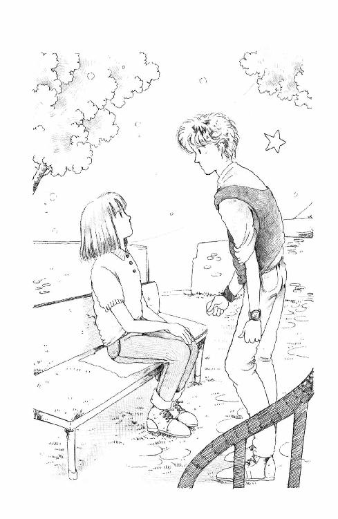
「ビデオ？ 持ってらしたんですか？」
「ノー!! ヨドバシで買う」
ツッ、ツッツ、って指を揺らして、バートさんは座ってるあたしの前にしゃがみこんだ。
「そのためにぼくヘソクッテタね」
「やだ。へそくり、なんてよくご存じですね」
「マムよく言うもの。『ヘィ、バート!! これはダディには内緒のヘソクリよ！』」
おすまし顔で目をパチパチさせて、おかあさんの真似していたかと思うと、急にきりっ、とたっておとこのひとらしい声で、
「『マム、カーペットにかくすのはまずいと思うよ』『ホワーィ？』『......ダディもそこにかくしてる』『オオ!! どうりで減ってると思った！』」
あんまり大きな声で笑いすぎて、磯釣りしているおじさまたちがみんなふりむいてしまったわ。
「......ほ、ほんとにそんなことなさるんですか？ バートさんちって」
「イエィ。ぼく、うそつかない」
「......はぁはぁ......あー苦しかった。あ、こみだすといけませんからもう行きましょう。......ラッシー!! 羅士丸!!」
立ち上がって呼ぶと。
古い社殿の陰から、黒いかたまりがすっとんで来て、あたしの足下でピタッと止まってしっぽ振ったの!!
「......やだ!! 羅士丸ったら、どこでこんなに真っ黒になったの!?」
塗れた泥らしいどろどろをぽたぽた顎からしたたらせながら、羅士丸は元気に、わん!! と吠えた。
朱海さんがバイクに乗る前に使っていたっていうサイクリング車には、キャリーのところに国防色のバッグがついていて、両側にポケットが垂れ下がっていた。左がわのポケットから、なさけなさそうに首をだして、羅士丸は時々キューンと鳴いた。
さんざん叱られた上、水道の冷たい水で洗われ知らないひとの自転車の狭いバッグに入れられて、どこにつれていかれるのか何をされるのか、我が身が不安になってるのに違いないけど......この機会にドロンコ遊びをすると叱られるらしい、ってことを徹底的にたたきこんだほうがよいわ。
あたしはしらんぷりで先に行ってしまうの。
七月の午前の太陽が、まだひと気のない道路をキラキラさせてる。鐙摺の停留所を越えて、富士見橋にかかった。橋を渡っていく道のほうが細くて車があまりこないみたいに見えるけど、ルート知らないからなぁ。鎌倉への道って車か朱海さんのバイクの後ろに乗ってしか通ったことがないんだもの。バスどおりや大きな道をいかないと迷子になっちゃう。やっぱりここはルート一三四を......。
......あっ!!
「？ ミック、どうかした？」
突然止まったあたしに、バートさんが大きな声をだした。
ごく。あたしはのどを鳴らす。
「トンネルが......！」
「トンネル？」
バートさんは眉をひそめてあたりを見回した。
ここじゃないの！ ここじゃないけど......七里ヶ浜までいくとなると......。
湘南道路の小坪トンネル＆伊勢山トンネルで朱海さんに脅されて以来、あたしはトンネルというトンネルがダメになっちゃったのよ。学校にいくにも遠廻りでも海岸ぞいを走って葉山トンネルを通らないようにしてるくらいなのよ!! なのに。......一三四号線にも、ふたつつながったトンネルがある。名越のトンネルと言えば......か、火葬場さんのお隣さんで、おばけ幽霊魑魅魍魎がぞくぞく出るので有名じゃないよぉ!!
「バ、バ、バートさん......あたし実は」
「ワッハプン!? どこにトンネルがある？ それとも日本ではトンネルって別の意味なのですか？」
サドルを跨いだかっこうのまま自転車をひきずって来て、バートさんはあたしの目をのぞきこんだ。
困った。
トンネル通らずに七里ヶ浜まで行く道って、ないわ!!
バイクに乗ってても怖いのに、自分でこがなきゃ前に進まない自転車でトンネルに入るなんてことは何があっても避けたい!!
「気分悪い？ 休む？」
「いえ、あの......自転車の調子が悪いのよ」
橋の下を流れる細い田越川。もやってある古い舟がのんびり揺れてる。
悪くない自転車を降りて、直してるふりするのも気がとがめるけど......どうしよう？
「どこ？ 直せる？」
心配そうにのぞきこんでくるバートさん。
「うーん......たいしたことはないんだけど、遠くまで行って戻れなくなったらちょっと困るから」
「ショップに持っていけば？」
「でも、時間かかるだろうし......そうだ。ね、ほかにはないんですか？ 原節子さんの映画のシーン......電車に乗って行けるとこだったら平気だと思うの。逗子駅はすぐそこだし......鎌倉で江ノ電に乗りかえれば七里ヶ浜に行ってもいいけれど、自転車じゃないとだめなんだったらやっぱりちょっと今日は」
「エノデン!?」
バートさんがサドルの上で跳ねたので、びっくりして羅士丸がキャンキャン言った。
「エノデンってまだあったんですか？」
「ありますよ」
「ヨコスカ・ラインに変わったんじゃない？」
あたしは自転車を降りて、地面に図を書いた。
「あのね、東京駅から鎌倉、逗子を通って横須賀までいくのが横須賀線ね。で、ここに大船があって、こっちに藤沢があって、藤沢から鎌倉まで繫いでいるのが江ノ島電鉄こと江ノ電なの。このふたつは全然違います」
「......ウ───プス......」
「七里ヶ浜あたりの地図を見たんだったら江ノ電だって書いてあったでしょうに」
「クロサワ!!」
バートさんは突然叫んだ。
「ミフネ!! ヤマザキ!! 『天国と地獄』!!」
「はぁ？」
「乗ります!!」
バートさんは泣きそうな顔をした。
「エノデンに乗りましょう、ミック!!」
「でも羅士丸が......」
「日本では犬は乗れないんですか？」
「乗せてもいいはずだけど、かごかなにかにいれて、犬用の切符を買わないと」
「ぼく持ってます！」
「犬用の切符を!?」
「いえ、ヘソクリです!!」
バートさんは頼もしげに胸をたたいた。
「自転車は映画撮る時までに直しましょう!! ロケーション・ハンティングですよ!! 行きましょう、江ノ電に乗りましょう!!」
バートさんの興奮はとどまるところを知らなかった。
鎌倉駅構内を抜けて、遊園地のおとぎ電車乗場みたいなホームを見て『感激ですミック!!』やがてゆるゆるとホームに入ってきた江ノ電を見て『やっぱりこの電車はこういう色だったんですか!? ああ、思ったとおりですミック！』周遊券を買ってくれたので、どの駅でも気にいったところでおりてみていいのよ、って説明すると、あたしの手をブンブン揺すりながら『ありがとうミック!!』
こちらこそ、羅士丸までただで江ノ電沿線旅行をさせていただけちゃって、申しわけないなぁ。
こんな純粋なひと、だましたりしないでちゃんとどうしてトンネルが怖いのか説明してあげたほうがよかったかしら。でも、それでまたトンネル恐怖症のひとをひとり世の中におくりだすことになっちゃうといけない......なんて......いいわけかな。
「どこで何回降りてもいいのなら、とりあえず江ノ電の向こう端まで行きたい、いいですか」
目をキラキラさせてるバートさんに、あたしうなずいた。
「あたしも藤沢にはちょっと行ってみたいところがあるの」
「なんです？」
「デパートなんだけど」
江ノ電藤沢駅は、デパートの中にある。そのデパートでホテル・センチュリー・ハイアットの業務用品を売ってるって、いつかさえらおばさまがおっしゃってたの。浴衣とかタオルとか全部ホテルのマーク入りの、実際に使ってるのと同じものがあるって......ちょっとおもしろいと思わない？
「オーケィ、オーケィ!! さ、乗りましょう乗りましょう」
早く発車しないかなあ、って座ってもわくわく落ち着かないバートさん。
なんだかあたしもすっかり嬉しくなってきた。
初めて江ノ電に乗られたかたって、たいてい驚いたり感心なさったりするけれど、さえらおばさまのところのタイちゃんを連れてきた時だって、こんなに大喜びしてくれなかったわ。
こどもよりこどもみたい。
あたしが気にいってた聖バーソロミューさまの名前をいただいてるひとが、こういうひとだった、ってことになんだかとてもホッとしちゃう。
江ノ電ってね、普通の電車と全然違うの。まず、鎌倉駅を出るとすぐ、よそさまのお宅ぎりぎりのところを走る。お洗濯物をかすめお庭をのぞき、謡のお稽古をなさる声や子供を叱るお母さんの声の中を縫うようにして線路が続いてる。
はじめは前を向いてたバートさんは、だんだん窓のほうに向いたっきりになって、もうべったり指紋押しつけちゃってる。
「うーん......この、センロの上走る音で犯人の手がかりがつかめたんだよ、クロサワの映画では。ほかの電車の音とそんなに違うかなぁ......ひゃあ、オジイサンが寝てるよ。うるさくないかな......わぅ。日本はほんとに狭いね！」
「ここは特別なのよ」
「ちいさいころよく窓から手を出すな、って叱られたけど、これじゃほんと、危ないね。ジコ起きないの......そういえばなかなか発車しないね」
「そう？ ああ、長谷だから。向こうから来てる電車とね。すれちがうの」
「？」
バートさんに単線、ってものを説明するのはなかなか大変だった。
あたしだって初めて乗った時びっくりしたもの。ひと組しかない線路を上り線と下り線と両方が使ってるとか、すれちがうことができる場所が限られてるから、向こうから来るまでじっと待ってる、なんて......気の短いひとにはがまんできないだろうなぁ。この電車で通勤なさるかたとかって、大変だと思う。
長谷を過ぎ極楽寺を過ぎ、とうとう海が見えた時、バートさんは歓声を上げてドアのところに行ってしまった。あたしは羅士丸のバスケットもあるし、どうしようか迷ったんだけれど『ミックミック!!』って手招きされて並んだの。
「......この海をクロサワもオズも、セツコも見たんだねー......」
民家の陰に隠されてとぎれとぎれにしか見えない海を、バートさんは目を細めて見つめている。
遠い国から、このために来たんだもんね。
映画の中でしか見たことのない風景が自分の目の前にある、ってどういう気持ちだろう。
そうやってるとバートさん自身、映画の中のひとみたい。北鎌倉の駅前で雨を見ていた時と同じ。絵になっている。
時間が止まったみたいだね。
なんだかあたしも、映画の中の少女になったような気分だわ。両手を前に垂らして、バスケットさげて......バートさんと並んで立って、きれぎれの海を見ている。
ちょっと初恋映画の一シーンみたいじゃない？
「......ミック......!!」
突然、バートさんは外を見たまま、あたしをつかもうとした。
そして。
......海が!!
進行方向の左がわいっぱいにパノラマみたいにひらけたの。
車内放送が、次は七里ヶ浜だって言っている!!
ここのことだったの。
海と電車の間に、道路が続いている。車を停めて海を見ているひと。沖に浮かぶウインド・サーフィンの帆。
窓の隙間から、海の匂いのする風がたっぷりと吹き込んでくる。
電車はゆっくり止まろうとしている。
「降りる？」
あたしが聞くと、バートさんは目を閉じて、黙って首を振った。
「でも、原さんがサイクリングしたって、その道じゃない？ ここよ、ここが七里ヶ浜だわ!!」
「ミック......ミックは、いちばん好きなものは最初に食べる？」
ガラスにもたれたままでバートさんの顔は見えなかった。
でも、震えたような囁き声が、どんなはしゃぎ声よりバートさんのこころ、伝えていた。
「今降りたら、きっとハートが壊れてしまう」
そっとつぶやくと、バートさんは急に窓を離れてあたしを見た。
「......ああ、ごめん。持とう」
羅士丸のバスケット受け取って、あたしの視線に、はにかんだ。
「ソーリィ、ひとりで夢中になって......ああ、ミック！ 最高だよ」
それからバートさんはずっと静かになってしまった。
電車が突然、道路を普通の車と並んで走ってみせた時も、もっと驚くかと思ったのに『ああ、こういうのＬＡにもある』って言っただけ。
「バートさんってロサンゼルスのひとなんですか？」
「うん、コーガイだけど」
「郊外？ じゃ、ディズニーランドのそばですか？」
「反対。ウエストウッドっていうところ......ああ、でもミック遊びに来たらサンタ・モニカ・ベイでもロング・ビーチでもディズニーランドでも連れてくよ!! 車もってるから」
「ほんと!?」
「ＬＡを見たことある？」
「少し。映画とかテレビとかで」
「じゃ、おいでよ!!」
長い脚をかがめるようにして、あたしの顔の前に顔寄せて、バートさんはなにか大切な秘密うちあけるみたいに小声で言った。
「きっと、今のぼくみたいにとってもとってもシアワセになれるから」
「......そんなに？」
バートさんは目をそらさずにうなずいた。
「よかった......」
自転車じゃなくて悪かったのかな、って心配になってたの。
江ノ電に感激してくれてはいたけど、肝心の七里ヶ浜をみたらやっぱり自転車で来たかったって思っちゃったのかと思って。
「ミック？」
「あ、ごめんなさい。考えごとしちゃって......もうすぐ江ノ島よ。駅から島のほうは見えないけど」
江ノ島駅ではずいぶん乗り降りがあった。
ドアのすぐ横の席があいたので、バートさんはあたしを座らせてくれた。羅士丸のバスケットはこんどはあたしの膝の上に乗った。
終点まで、いろんな話をしたわ。
はじめ見た時、お墓まいりのひとかな、って思ったこと。ずいぶんおとなっぽいひとだなって思ってたけど、話してみたらそうでもないのね、って言ったらバートさん、あたしのことはじめは小学生かと思った、って言ったわ。
「......どうせ、発育不良です」
「ウン、あんまりグラマーじゃないね」
「やだなぁ......そんなとこ見てたんですか？」
「でも、うちのマムもそうだけど、日本のヒトはいつまでもキュートでしょ。うちはダディとトシが離れてるからよけいなのかもしれないけど、マムとぼくは姉弟とまちがわれて、マムと歩くとダディ『おとうさんですか』だもん」
「わぁ、おとうさまかわいそう」
「そんなことないよ」
「？」
「逆だったらかわいそう。例えば、ぼくとマリィしたおんなの子『おかあさんですか』って言われるかもしれない......ぼくもドーガンのほうだから。それってかわいそうだよね」
バートさんは両手を『しかたないね』っていうみたいにひろげて、えへへへ、って笑った。
「ぼくだってホントはかわいそうですよ。あっちにいる時は『ジャップ、ジャップ』でしょう。オナリガクインでは『ガイジン、ガイジン』......顔はオカアサン似だから、こっち来たら誰も気がつかないかと思ってたけど」
「............」
そうかもしれない。
あたしは気がつかなかった。初めは気がつかなかったけど......こうして話してみると、動作とかしぐさとか、顔の表情の動きはやっぱり日本のひととは違うってわかってしまう。
ハーフって言うことばは、あたしなんかには素敵なものとしか思えなかったけど、ご本人にしてみるとそれだけじゃないんだ......そんなあたりまえのこと気がつかなかったんだって思うと、何て言ったらいいのかわかんない。
「オオ!! ミック、ごめん。そんな悲しそうな顔しなくていいよ。あ、もう着くかな？」
釣りの格好をしたおじさまたちや、黒いズボンが暑そうな男子学生さんたちが降りるしたくしている。そろそろ藤沢。
「そうだ。藤沢でどこか寄りたいって言ってたね？」
「......あ、はい。江ノ電デパートに」
「オケーイ!! 行こう行こう!!」
改札を抜けると、そこはもうデパートの中。
売り子さんに尋ねて、ホテル用品のコーナーを訪ねあてると......。
あるある。お寝間着、タオル、灰皿にブック・マッチ......バートさんはあたしよりずっとおもしろがっちゃって、びっくりするくらいいろんな物を買った。ハイ・スクールのおともだちへの日本みやげにする、って。
ヘソクリがずいぶん減っちゃったんじゃないかって心配してるのに、あたしにも何か買ってあげるって言いはるの。だから、ブック・マッチをひとつ、買ってもらったわ。パパのおみやげ用に、ちょうどいいと思う。
戻り道、江ノ島で降りて海岸線を歩いた。
あんまりひとが多そうなマリン・パークや島のほうにはいかないで、波打ち際でおしゃべりをした。もしかするとバートさんは、今の江ノ島じゃなく三十年前の江ノ島を見ていたのかもしれない。
はしゃぐ羅士丸とあたしのことを、架空のビデオで撮ってくれるバートさんは、ほんとに監督さんみたいだった。両手の親指とひとさし指を伸ばして組み合わせた『枠』からのぞきながら、飛んでいく海鳥や、寄せる波も映すのよ。
そもそもの目的の七里ヶ浜についたのは、もう夕方だった。
少し歩いて、海に面した広い駐車場のコンクリートのてすりに座って、途中で買ったソフト・クリームをなめた。
でも。
サイクリングするはずだった道にはやっぱり、車高を低くした不良っぽい車が何台も何台も停車して、下品な音楽を流したり窓から足をだしてお昼寝してたりしている。
イメージ、違っちゃったかな。
あたしはバスケットから顔を出してる羅士丸をあやしながら、そっとバートさんの横顔を盗み見た。
あんなにおしゃべりしていたのに、放心したみたいな顔で黙ってる。右手の、今離れて来た江ノ島のほうを見たっきり、指の枠も作らずに。
そうよね。変わっちゃったんだね、きっと。
あんなに憧れてた場所が、あんまり変わっちゃって何とも言えない気持ちになっちゃったんだわ。
バートさんの頭の中にあったこの道は、もうずっと昔の道なんだもの。こんなに車が多くはなかっただろうし、ウインド・サーフィンだって流行ってなかっただろうし......停まってる車から流れてる曲も、おんなのひとたちのファッションも、彼にとっては違和感を増すばかりのじゃまものなんだ。
「......夢が壊れちゃったかなぁ」
かじりかけのコーンから口を放して、あたしは言った。
「こないほうが、よかった？」
「え」
バートさんは急にふりかえって、あたしのびっくり顔を見て、急に『ああ、ごめん!!』って笑いだした。
「違う違う!! ......びっくりしてたんだ!!」
「......？」
「オー......ミックはナーヴァスなんだ。ごめんごめん」
少し茶色っぽい髪を、お昼寝から覚めたライオンみたいに振って、バートさんはキラキラ目を輝かせながら江ノ島を指さした。
「懐かしいんだよ。あれ。ほんとに見たのは初めてなのに。そばで見た時と、ここから見たのと違うんだ。ぼくの知ってるエノシマは、ここから見たエノシマなんだ......それだけじゃない。あっちの電柱も、そっちの壁の感じも......みんなみんな、ずっとずっと前から知ってた気がするの。うーんと小さいころにここに来たことがある、っていうみたいな......そういうの、わかる？」
「わかる!!」
バートさんが、思わず振りかえるくらい力強く、あたしはそう言っていた。
「あたしも、このあいだ......四月の終わりころにそんな気がしてたまらないことがあって......それ、今のあたしの家なの。錯覚かと思ってたけど、違ったの。ほんとに小さいころ見たことがある家だったのよ！」
「じゃあ、ぼくのフシギな気持ち、わかってくれる？」
バートさんは、コーラの缶を片手でギュッ、と潰して身を乗り出した。
「ここはムービィの中なんだ。ゲンジツじゃないはずなんだ。なのに、迷いこんでしまったみたいな......夢みているみたいな......でも、ワーオ!! これはゲンジツだぞー!!」
バートさんは、大声で叫ぶと、羅士丸が首から先だけのぞかせて心細そうな鼻声をだしているバスケットを持って立ち上がった。
「来たんだ。ほんとに。ここに。立ってる。しゃべってる。ミック、ぼくの声聞こえるでしょ？」
「聞こえます、もちろん！」
「オ・イエーィ!! よーし、ラッシィ、ゴウ!!」
あけてもらったのに羅士丸ったら、疑り深そうな目をしてバスケットのすぐ外でお座りしたまま、お尻をムズムズさせてがまんしてるんだもの、あたしたち大笑い。
「おしおきが効いたみたい。ちゃんと、よし、って言われるまで動かないつもりなのよ」
「狭いところに入れられてたから？ ミックのナーヴァスが伝染ったんだ......ヘィ、カモン!!」
空になったかごをふりまわして、バートさんが駆けおりても、羅士丸はビクッ、とお尻を震わせて、せつなそうな顔をしてあたしを見上げるだけなの。
......くす。
「いいわよ、行っても」
あたしが言うやいなや。わん！ とひと声叫びをあげて羅士丸は走った。
ひらひらの耳が頭にぴったりはりつくスピードでたちまちバートさんに追いつき、追い越すの。
あたしも砂浜に降りてみよう。
グループやカップルが、思い思いの場所に陣取っておしゃべりしたりフリスビーを飛ばしたりしている。このへん遊泳禁止なのか泳いでるひとはいない。
波打ち際をジグザグに走るバートさんの前後を、小さな羅士丸が夢中で走ってる。ななめになった太陽に、水面がキラキラオレンジがかって、はじけるみたいに光ってて、はしゃぐひとたちのあげる飛沫が風に飛んでここまで来る。
手加減なしで遊んでくれるひとが嬉しくてたまらない羅士丸は、勢い余って海に突っ込んで潮水が鼻にはいっちゃったのかしら？ クシュン、クシュン情けないくしゃみをしたかと思うと、あたりかまわずブルブルっと水をとばして、またしょうこりもなくバートさんを追い掛けてくの。
乾いた流木に腰を降ろす。
ほんと。今日一日、映画の中みたい。現実離れしている。
でも。
不意に心のどこかが、冷たくなってくる。
楽しそうな声が遠くなる。
こんなことしてていいの、って頭の隅から誰かが尋ねるの。
ああ、華雅高校過去五年間完全把握入試問題集。
それがあたしの現実。
いくらうららから頼まれたからって、西在家さんちの、ううん、鎌倉のひいては日本の大事なお客さまのためだとはいえ、こんなところで平和に映画していたりして、いいの？
夏休みが毎日、こんなふうに過ごせたらきっととっても素敵だな。
だけど......このまま夢の中で、おもしろおかしく過ごしてたりしたらあとで悔やんでしまうんじゃないかしら......しなきゃいけないことをすませてからなら、きっと何も心配せずに心の底から楽しめるのに......逃げてる。あたし。
「......ミック？ どうしたの？」
顔をあげると、バートさんが膝に手をついて、あたしの前にかがみこんでいた。
「また考えごと？」
「......うん......ごめんなさい。遊んでて」
「いやぁ、もう疲れた......」
どさ、っと砂に脚を投げ出したバートさんのすぐそばに駆け寄って来た羅士丸は、濡れてぺしゃんこの顔をしてわんわん言う。
「オオ、カンベンして......も、やだ。おまえ嚙むんだもん」
「嚙まれたの？」
「軽くだけどね、エキサイトしてたんだからしかたないよ」
「しようのない子ねぇ......羅士丸、おすわり!!」
さすがの羅士丸も、座るとはぁはぁ息をきらしている。
「伏せ！」
ぺたっ、と砂にへばりつく。
「ごめんなさい。けがは？」
「へいき、へいき」
バートさんは手を振った。
「それより、ミック。考えごとって、なに？」
「......んー......ちょっと」
「話して。ぼく、ヒトにしゃべったりしないよ」
「それはわかってるけど......つまんないことだもの」
ふりかえったバートさんはあの、はじめて見た時みたいなおとなっぽい顔で『ノンノン』ってやさしく笑った。
「ミックみたいなおんなの子が考えること、つまらなくないよ。知りたい。聞きたい」
「やぁだ」
爪先で蹴っていた砂がスニーカーに入っちゃったみたい。
バートさんのスニーカーも、水に入って重たそう。
どちらともなくひもをほどいて、いっしょに結びなおしているうちに、あたしは気がついた。
あたしは華雅に戻るかどうかまよってる。
森戸南は、あたしにとって外国みたいなところだから。
でも、バートさんは自分から求めて異国に来たんだわ。おかあさんの国だとはいえ、誰ひとり知ってるひとがいない生まれて初めての国に、たったひとりで......。
「バート......バーソロミューさん」
「ん？」
長い脚を折り曲げて、ひもを直してるかっこうのままバートさんが答えた。
「怖くなかった？」
「何が？」
「日本に来ること」
バートさんはゆっくりふりかえった。
「......怖かった」
「ほんとう？」
「ウン......いっぱいいっぱいキタイして、いっぱいいっぱい、怖かった」
「どんなこと？」
バートさんはへばったままの羅士丸の頭をごしごし撫でた。
「そりゃいろいろさ。アケミたちがヤナヤツだったらどうしよう、とか、ぼくの日本語はダイジョーブか、とか......ビョーキになるんじゃないか、ジェットが落ちるんじゃないか、食べられないゴハンがでたらどうしようとかいろいろ、たくさん」
「それで？ それで、今は？ まだ安心できないことだってあるんじゃない？」
「オフコースあるよ」
「でも、楽しい？ 来てよかった？」
「......シュアー!!」
どうして？ って言うみたいに見る。
「慣れてる場所にしがみついてるのは、おバカだと思う？」
「バカ？ ......バカとは思わないけど、つまらないかもね......ミックはムービィ好きなんでしょう？」
「好き」
「何のために見る？ 楽しみたいからじゃない？ 知らないこと、行ったことないとこ見たいからじゃない？」
外人らしく肩をすくめて、バートさんは笑った。
「自分からムービィの中にでかけてけば、いろんなアクター・アクトレスとトモダチになれるよ！ ほんと。ぼくだって、オナリガクインに来なかったらミックと逢わなかった」
うーん、って伸びをして立ち上がると、バートさんはいたずらっぽくこう言ったわ。
「ノリコサンはぼくとエノデンに乗ってはくれない」
こういう時は、家が坂道のてっぺんにあるって辛いわ。
羅士丸はおとなしく眠ってくれてたからまだ良いとはいいながら、重くてハンドルがうまく取れない。バートさんは送ってくださるって言ったけど、西在家さんちのほうが駅に近いし、かえって迷子になられても困るから、一色の山の坂道の手前でサヨナラしてきた。
半分立ち上がるようにしてこいでも登りきれなくなって、途中から自転車を押して上がって、やっとただいまぁ、ってお玄関をあけたら。
「こんな遅くまで何をしていた!!」
ものすごい剣幕でパパが飛び出してきたの。
まるで朝からずっとそうしてたみたいに、あいかわらずさかさまの新聞を持ってらっしゃるのだけれど、その手がブルブル震えていて。
びっくりしたのと、疲れすぎてたので、口をあけたものの何を言ったらいいのかわからないでいるあたしの腕の中で、目がさめた羅士丸が嬉しそうに、わん！ って言った。
「あなた!!」
おしゃもじを持ったままのママが、スリッパをパタパタ鳴らして来た。
「まぁ、未来疲れたでしょ、とにかくラッシーをつないで（註６）らっしゃい。お風呂わいてるわよ」
「おまえがつないで来なさい！」
パパは全身をわなわな震わせながら、耳に響くお声でそう言った。
「あなた、そんな大きなお声で」
「いいから、つないで来なさい!! 未来、ちょっとそこに座りなさい！」
そこに、って言ったってお玄関なのに？
しかたなく、あたしはたたきのところにお尻をおろした。
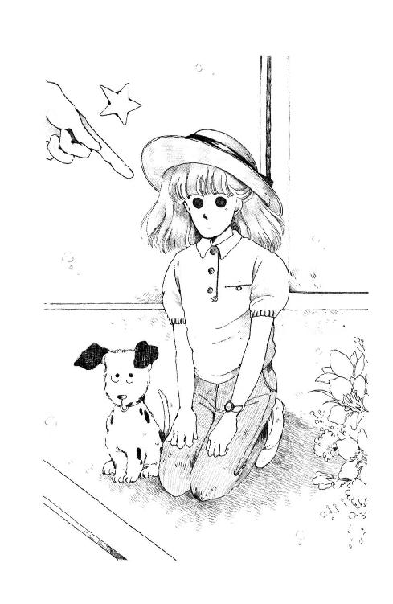
そうすると、からだじゅうにたまった疲れが、じわん、と頭に集まってくる感じがした。
ママは羅士丸を受け取ると、急ぎ足でお庭のほうに回って行く。
「パパ、あたし自転車をかたづけないと」
「自転車？ そんなものはママに頼めばいい。......未来、今何時だ」
「ええと......わっ、七時半だ」
「中学三年生の女の子が家に帰ってくるのには少し遅すぎると思わないか？」
低い低い声にあわせて、パパのお髭が細かく震えてる。
ほんとに怒っちゃったんだわ。
「ごめんなさい！」
手をついてあやまると、パパはちょっとお顔を緩めて、新聞をガサガサ言わせながら座りこんだ。
「......うむ......あ、いやつまりだな、事故にでもあったかと思うじゃないか、え？ 連絡もしないで」
「ごめんなさい!! 心配かけて」
朝だって、出かけるのあまり快く思ってらっしゃらなかったの、わかってたのに。
時計見るのも忘れていたあたしが悪い。
「いや、わかればいい。わかればいいが......」
「さぁさ、未来、おなかすいたでしょ。パパもめしあがらないで待ってらしたのよ」
お玄関に戻って来たママがあたしの頭にそっと手をあてた。
「まぁ、ベタベタ。潮風ね。サイクリングどうだった？ 楽しかった？」
「それが、自転車やめて電車で行ったの」
「まぁ、どうして？」
「だって、遠いし、トンネル通るの怖かったし......」
「なんだ」
パパが明るくおっしゃった。
「だらしないやつだな。トンネルなんかが怖いのか？ まったくおまえは子供だなぁ......さ、話はあとあと。なんで座っているんだ。早くはいりなさい」
パパが座れっておっしゃったのになぁ......。
重たい体をひきずるようにして食堂の椅子に倒れこむ。
「で......、バートくんは喜んだかい？ 七里ヶ浜」
「うん、ちっとも変わってない、って大感激してた。でも、今日一番嬉しかったのは羅士丸だったと思うわ。バートさんにいっぱい遊んでもらって......また連れてって欲しがると思うけど、自転車に乗せるのはもうこりごり......重いし騒ぐし」
「そうかそうか、もうこりごりか、うんうん」
ママはじゅうじゅう、って何か温めなおしてる。テーブルの上の枝豆の殻の数を見たら、ほんとにどれだけパパがおあずけされていたかがわかったわ。
電話一本いれないでごはんに間にあわなかったのは、悪かったな......。
あ、そうだ。
「パパにおみやげがあるんだ！」
「ほんとうかい？」
「うん。ちょっと待って」
「おいママ聞いたか。未来はほんの鎌倉まで行ってもパパにおみやげを買って来てくれたそうだ。何だろう？」
そんなに期待されると出すのがはずかしくなっちゃうけど......。
ななめ掛けのポシェットは、すこし砂でザラザラした。
あった!!
「はい、これ」
にこにこしながら出したパパの手に、ブック・マッチを落とした。
「......ん？ ......マッチじゃないか、なんで未来が......むっ......!?」
「ごめんね、つまらないもので」
飲みかけのビールをふきだしたパパに、あたしはあわてて言った。
「バートさんは浴衣とかタオルとかもおみやげにするって買ったんだけど、あたしはあんまりお金持ってなかったから」
「......ママ」
パパは弱々しくママを呼んだ。
「なんですか？」
お台所から、声だけのお返事。
「頼む。ちょっとここに来てくれ......どうすればいいんだ、こういう時」
「えっ？ なんです？」
手をふきふき出ていらしたママに、パパはホテル・センチュリー・ハイアットのマッチを掲げて見せた。
......あんまりよっ!!
こんなことになるってわかっていたら、江ノ電デパートの包み紙、ちゃんともらってくればよかった!!
でも、だって、まさかじゃない？
どうしてホテルのマッチを持ってると『叱らないから本当のことを話してごらんなさい』なんて言われなきゃいけないの？ ......パパもママも、あたしが何か大変なことをしたみたいに、妙にやさしい顔をして、あれこれおっしゃるのよ。
無断外泊したんだったら、叱られるのわかるわ。だけど、遅くなったって言ったってちゃんと帰ってきたじゃない？ だいたい、おともだちの家に行った、って言うんならともかく、ほんの一時間ばかりでお家に帰れるのになんであたしがホテルに行くの？
いいわ、ホテルだってお泊まりするだけじゃないわ。そうよ、お食事をしに行く、ってことだってあるもの。三番町にいたころはママとよく、九段のほうのホテルにごはん食べにいったわ。......じゃどうしてホテルでお食事しちゃいけないの？
ひょっとしたら、センチュリー・ハイアットって不良の溜まり場なのかしら？ それとも、子供同士でホテルでお食事なんかするものじゃない、なまいきだ、って意味でお怒りになったのかなぁ......。
なんとなくそういう種類の叱りかただった、あれは。
だけど、あたしが江ノ電デパートのこと説明して、そんなに疑うなら西在家さんちにお電話してバートさんに聞いてください、って言うのに、どうして『そんなこと聞けるわけがない』の？
最後には、『ほんとに何でもないようですよ』ってママが言って、『そうか、そうかもしれないな』ってパパがおっしゃって、『なーんだ、はははは』『あらあら、すっかり忘れてたわ、未来おなかすいたでしょ、さぁ、ごはんごはん』ってなったけど......。
いったい何を怒ってたのか、ちっとも説明してくれないのはどういうわけ？
あったまきちゃう!!
あたしほんとは、もっと話したかったのに。
あたしは自分で自分をつまらなくしているんじゃないかしら、って相談したかったのに。
戻りたいのか、戻りたくないのか......華雅と森戸南とどっちに行けばいいのか、パパやママの意見も聞いてみたかったのに。
来てよかった？ って聞いた時『シュアー!!』って即座に答えたバートさんが、とってもうらやましかったことなんかも、聞いて欲しかったのに......。
その晩あたしは、三十回も腕立て伏せをしてしまった。
４
夏休みの校庭は、ご近所のかたがたでずいぶんにぎわっていた。
三角ベースをしてる小学生や、花壇を見て歩いているおじいさん、テニスの打ち合いをしているおんなの子たち。初めての場所につれてきてもらって興奮ぎみの羅士丸は、何をしてもらえるのか期待のこもったまなざしであたしを見上げてクンクン言ったけれど、ごめんね、鉄棒の柱に結わえてしまう。
雑草を摘んで遊んでいたおんなの子たちがこわごわ寄ってくるから、かわいがってあげてね、って言った。小さな手でそっと頭を撫でられて、羅士丸のやつ神妙な顔つきになる。
「いったい、どうしたの？」
掌に鋲の打ってあるバイク用の手袋を脱ぎながら、朱海さんはあたしの隣に腰を降ろした。電話したらすぐに駆けつけてくださったのよ。
鉄棒の横のベンチ。隣のベンチにはまだ若いおかあさんがいて、お砂場で遊んでるよちよち歩きの赤ちゃんとおとうさんにさかんにシャッターを切っている。
こんなに大勢ひとがいなかったら、ひとりでやってみるはずだった。
......ケンスイ。
とうとう鉄アレイ、腕を伸ばしたまま肩の高さまで持ち上げることができるようになったんだもの。もう、一回くらいならケンスイできるようになってるんじゃないか、って思ったのに......こうして高い高い鉄棒を目の前にしてみると、とても怪しい。
なのにお散歩の途中で電話なんかしちゃって......どうしよう。
西在家さんちは大変そうだから、校庭の鉄棒でやってみよう、って急に思いついたのにひとりでおヘタをさらすのは恥ずかしいなんて、とっさにうららにコーチを頼もうとしたあたしってほんとに甘い。まして『うららはちょっとでかけてるみたいだけど、どうしたの？』ってやさしく聞かれて、朱海さんに来てもらっちゃったなんて......ああ、勝手だ。
「すみません、急にお呼びたてして」
「いいけど......どうしたのさ？ ......ひょっとしてバートのこと？」
「は？」
あっけにとられたあたしの顔から憂い顔をそむけて、朱海さんは、
「そうか......やっぱりなぁ。いやな予感がしたんだ。あいつどこか未来ちゃんに似てるし......でも、いいやつだからね。未来ちゃんが好きだっていうのならぼくは」
「なんですか、それ!?」
あたしの声に羅士丸が首をまわしてふりかえった。
「あれ、違うの？」
「いえ、あたしはただ、ケンスイができるようになったかどうか見ていただきたいと思って」
「......懸垂......？」
起こした首にうなずくと、朱海さんはあたしを見、鉄棒を見、もう一回あたしを見て、
「......なーんだ、そうかぁ！ いやなんかこないだから言いたいことがあるのに言えないみたいだったからよっぽど深刻なことかと......ははははは」
「深刻なんです!!」
「懸垂が？」
何も笑うことないじゃないのっ!!
「まじめに聞いてください!! あたし懸垂に賭けることにしたんです!!」
「賭ける？」
「そうです」
あ、噓だ。
ほんとはこんなこと言うつもりじゃなかったんだ。ただ、ちょっとコーチしてもらおうと思ったのに......頭の中では必死にブレーキ踏んでるつもりなのに、口は勝手にしゃべりつづけてしまう。
「ケンスイができたら、講習に参加するのやめようと思って！ だって、あたしにとっては問題集よりケンスイのほうが難しいんですもん、今たとえよい点がとれなくても、勉強のほうは慣れてますからなんとかなりますけど、もし全然ケンスイがだめだったらヨットはあきらめたほうがいいでしょう？ でも、ご迷惑なのはわかってますけどやっぱり『ミッキー』に乗りたいし、華雅に戻るかどうかは夏が過ぎてからでも遅くないと思うし、みなさんがうちにいらっしゃって『ミッキー』に乗ってる時ひとりで受験勉強なんかしてるの悲しいからほんとはそれだったら講習に出たほうがましかもしれないとも思うんですけれども、でもやっぱり、腕力ゼロでもあたしだって、あたしだって『ミッキー』に乗りたい!!」
「......待って！ 待って、早口すぎる!!」
朱海さんは両手であたしを押しとどめた。
「......笑ったりしてわるかった。真剣なのはよくわかった。でも、なんだって？ ひょっとすると、未来ちゃんは懸垂ができなかったの？」
「で、できませんでした......」
過去形で言ってしまって、あわててつけくわえる。
「あの、すごい雨のバートさんがついた日に、おたくの裏庭の鉄棒でやってみた時には一回もできませんでしたけど、今はわかりません!!」
「うちの？ あの古いので？ サビてたでしょう？ 手が痛くなっただろうに......」
「でも、うららはすいすいできてました......」
「あいつは丈夫にできてるもの！ ......それで、練習したんだ」
「ええ、でもうちには鉄棒はありませんから、腕立て伏せとうららに借りた鉄アレイなんかで筋力の増強を図ったんですけど......鉄棒にトライしてみるのはそれ以来初めてです！」
真面目な顔でうなずいてくれたけど、朱海さん、笑うのこらえてるでしょう？ 鼻がひくひくしてるの、ちゃんとわかってるんだからっ!!
「うーむ、なるほど筋力を増強ね。......えー、でも......まさかと思うんだけど......もしかして......突然懸垂しようって決めたのは、ぼくのせい？ 確か、ヨットの時に......『できる？』って聞いたような」
「そうです!! ......あ、でで、でも違いますからね!!」
「何が？」
「『せい』だなんてそんなつもりはありませんから!! だってあたしはほんとに『ミッキー』に登れなかったし、それじゃチンした時困るだろうし、うららの時みたいにビューンって走ってみせてくれないのも沖に行ってくれないのもみんなみんなあたしが非力なのが悪いって教えてくださったわけで......あ、そう、『おかげ』です。『せい』じゃなくて『おかげ』!!」
「なかなか冷静にうけとめてくれたと」
からだを押さえるように腕組みして、朱海さんは肩を震わせた。
「......いいですよ、笑っても」
「いや、ごめん。鉄アレイ、っていうのがちょっと思いがけなくて......あ、いや......コホン。......それで......懸垂のことはわかったけど、講習とか問題集とかって耳に痛い単語はどこから出てくるの？」
ぐっ。
どこから、って......。
「いえ、まだいろいろそのへんは検討の余地があるのですが、ともかくフェリシアに受かってみせるって啖呵きっちゃった以上......あわわわ」
「フェリシア!?」
朱海さんはしばらく見ないうちに、また陽に灼けてらっしゃって、鼻の頭がくろっぽくなっていた。しかめつらをすると、その黒いところにしわが寄って、寄ったまんまになった。
「なんで？」
「......ですからあのう......ちょっとしたおんなの意地で......」
「みづゑさんだな」
パステル・カラーのざく織りのシャツの肩を怒らせて、朱海さんは断言した。
「けんかでもしたの？」
「あのー......あまり美しくない話ですから聞かないでください......」
「未来ちゃんが内気だって思ってた時、うららが笑ったわけがようやくこのごろわかってきたよ」
ふーっ、て息を吐いて、それから朱海さんはにっこりした。
「でもまぁ、あのひともわがままなところがあるからね」
「みづゑさん？」
「んー。思ってることずばずば言っちゃうから。うららとは仲いいみたいだけど」
いやだ。あたし、喜んでる。朱海さんもあのひとのことあまり好きじゃないんだ、って思うとホッとしてしまう。
「そうですか。でも......聞かなかったことにしておいてください、けんかっぱやいなぁ、って自分でもずいぶん落ち込んじゃったんです、後で」
「わかった」
あたしがふう、って息を吐くと、
「......でも、困ったなぁ」
「は？」
「賭けの立ち会いさ。だって、いい？ もし一回も懸垂できなかったらこの夏おにいさんは遊んでもらえなくなるんでしょ、未来ちゃんに？ きみが賭けをしたこと知らなければ誘っちゃうのに、誘っちゃいけない、ってはっきり釘をさされちゃうわけだ」
冗談っぽくおっしゃる朱海さんの目が、違う？ ってあたしを問い詰める。
「......ああ」
そうだ。
「でも、釘をさすだなんて!! そりゃ、あたし誘っていただいたら何をどう決心していたってふらふらぁって『ミッキー』に乗りに行っちゃったかもしれませんけど......だから決心、決心なんです。ひとりで決心してても、あたしすぐコロッと変わっちゃいますから、朱海さんに証人になっていただければ少しは、恥ずかしいと思って守るかと」
「ずいぶん悲壮な覚悟で」
くす、って笑う。
「そんな大変な決心じゃ、ますます困ったなぁ......自信ないよ。公平な審判するのは」
んー、って顔をしかめていたかと思うと、朱海さんは急に尋ねた。
「いったい、何回まではトライしてもいいわけ？」
「何回？」
「だから懸垂をさ。一回やってダメだったら賭けは終わりなの？」
「そりゃ、一回でできるとは思えませんけど、でもどうせ筋力がついてなかったら何度やっても同じなんじゃないかと......」
「じゃ、ぼくが教えてあげてもルール違反じゃないね？ 何回やってもいい、と」
「もちろん教えてくださるの大歓迎です!! でも、力不足ではたとえどんなに教えていただいても......」
「ふうん......わかった。じゃ、まぁとにかく、やってごらんなさい。ねっ!!」
パチン、と手を打って朱海さんは立ち上がった。
......笑ってる。
こんなことに深刻になるなんて、おバカだと思っているんだ、きっと。
「やればできる!! がんば!!」
あくまでふざけた調子の朱海さんに、あたしちょっぴりふくれたわ。
肩幅より少し狭い間隔に握った手に、力を込める。
校庭の鉄棒は、うららの家のブランコ用のよりも少し高くて、あたしの足は完全に宙ぶらりんになる。
ぶらさがった自分の体重を、ほんの少し持ち上げればいいんだわ。重心を、ちょっとだけ重力に逆らった方向にひっぱる、それだけのことよ！
......うっ............お、重い......。
「順手にしてる？ 逆手のほうがやりやすいんじゃないかな？」
「さ、逆手、ですか......えっと......いしょっ!! ......よっ......と、ととと......」
なにしろ足がつかないから、一瞬片手にして持ち変えるしかないのよね。
順手の時には、まだ真っ直ぐにしておけた頭が、今度は起こしておくのが辛い。耳のところまで腕と腕の間にはさまっちゃう!!
「も少し手と手を離してみたら？」
「こ、こうですか？」
「そうそう。よーし、いってみよう!!」
いってみようって言われても......あ、だめ。ぶらさがってるだけで疲れてきて......汗かいちゃった手がぬるぬるするよぉ。
「い、一回降りてもいいでしょうか......？ な、なんか手が滑りそうで」
「じゃ、ほら」
「......きゃ！」
胴のところ、つかまれたっ!!
「手、放して」
「あ、あ、そうか。すみません」
こんなに重いあたしなのに、朱海さんはやすやすと抱え降ろしてくれてしまう。
なんか、茫然としてしまうわ。おとこのひとって、そんなに違うんだろうか、力......もちろんおんなの子にだってうららみたいな子もいるけど。
「変に降りてまた捻挫したらいけないと思ったんだけど......さわってわるかったかな？」
「い、いえっ!! すみません、重くて」
「どういたしまして、役得役得」
指のつけねがさっそく痛くなってきた。
腕立て伏せ三十回できるようになったって言っても、ほんとはちゃんと床ギリギリのところまで降りるのができるようになったわけじゃないの。鉄アレイ水平保持できるって言っても、いちにさんっっ!! って一瞬のことだし......。
ああ、やっぱり甘かったんだ。あたし、まだまだだめなんだわ。やっぱり、今年の夏はお部屋にこもって......。
ううう、やだ!!
「......もう一度やります!!」
「大丈夫？ 上げてあげようか？」
「そんな、ひとりでやります！」
順手で飛びついて、さっと逆手に変える。
からだが真っ直ぐになるまで息を調えて......やるっ!!
う......おも......。
「そうそう、肩に力いれすぎないで、肘をつき降ろすつもりでそのまま、一気に......」
こぶしが目の高さになった！ ここまであがれば、あとはあごをつきだして......。
......い、痛っ......。
がたん！
「未来ちゃん!!」
ああ、痛かった。肩の骨がぐりってなっちゃったのっ！
でも、落ちなかった。って言うより、手がくっついちゃって離れなかった、っていうほうが正しい。
「大丈夫です、ちょっと肩が変になったんですけど、もう一回やりますから」
「......無理しないで」
「はぁ、なんとか」
汗かいた手が、またずるずる滑りはじめた。
「あんまり強く握りすぎてるのかな......うららなんて、ごくかるーく握ってるように見えましたけど」
「そうかも。ずっと全身に力いれっぱなしじゃなくて、要所要所でぐっとやるんじゃない？」
「はぁ......要所要所で、ね」
いったいどこが要所でどこが要所じゃないのか、全然わからないんですが......。
とにかく、目の高さまではいけるんだから、あの後がネックなんだわ。あそこでもうひとがんばりすれば......。
よいしょっ!!
今度は一気に、目まで来れた!! ここで、もうひとふんば......り......。
「あ、あけみさあん」
「どうした？」
「どーしてもここから動けませんが、いったい、いったい、いったいどうしたらよろしいの......でしょ......そろそろ手が......」
「降りなさい」
朱海さんが、ほら、って両手を差し出した。
「でもぉ！」
「頼むから降りて。怖くて見てられない」
しかたなくうなずくと、よし、ってまたウエストを支えててくれたから、ふわんと着地できる。
あーん。もう手が真っ赤になっちゃってる。
お砂場を耕してた赤ちゃんが、まん丸い目であたしを見てるから、苦笑いして手を振って、ベンチに退散した。
「......やっぱりだめでしたね」
お返事がない。
顔あげられない。
朱海さんのブルージーンズがどさ、ってベンチに座るのが見えた。
ああ、あきれちゃったんだ。
口先ばかり偉そうなこと言って全然ダメだなんて。
どうして、どうしてあたしってこうなんだろう......朱海さんになんか特に、いっつも、いっつもみっともない恥ずかしいだらしないとこばっかり見せちゃってる......。
......あーん......！
でも、ここで暗くなっちゃったらほんとにほんとにやな子そのものだわ！ あたしから明るいところなくなったら、何が残るの？
「あはははは、すみません。きっとできるようになってるって思ったんですけどねぇ、やーだ。ごめんなさい......変なことにお呼びたてしてしまって。さ、帰ろ。帰って勉強しなくっちゃっ！ どうもほんとにありが......と......」
......やだ！
のどおかしい。これ以上しゃべると、変な声になっちゃってよけい心配かけちゃって......。
「......まぁ、勉強はしないよりはしたほうがいいと思うけど」
囁くような朱海さんの声が、焦るあたしの耳にふんわり届いた。
「賭けは終わってないんじゃない？」
「え」
前が曇ってるのも忘れて、あたし目を上げてしまった。
「でも、ケンスイできなかったのに......もっと、もっと腕力つけなきゃとても」
「その通り」
脚を組んで、深くベンチに座って、朱海さんはくしゃ、って笑った。
「もっと時間をかければきっとできるよ。それだけいっしょうけんめいなんだから、できないままってことはないさ。だから......」
内緒話するようにあたしに顔を寄せて、
「できるようになるまでやればいいの。違う？ 審判はそう判断するね。未来ちゃんの賭けは『何回かやってみて、もし一回でも懸垂ができたら』だったよ。『今日じゅうに』とか『一時間以内に』とか、ひとことも言ってないよ」
......え？ でも、そんな！ それじゃ、それじゃ......。
「講習に出るとか言ってたけど、それいつ？」
「二十五日からです」
「出たくないんでしょ？」
う。
そうよ。出たい、って思ってたら何もこんなにごちゃごちゃ言わない。出たくないから、出ないですむ理由をいっしょうけんめい考えたんだ。
「じゃあ、やめなよ。したくないことしたって身につきゃしないって、未来ちゃんが考えたことは正しいと思う。懸垂がマスターできるくらい根性があったら、講習になんかいかなくたって平気だ、って。受験は二月でしょう。懸垂ができるようにならないと、未来ちゃんの性格じゃ受験だってうまくいかないかもしれない。となると、ここであきらめるのは良くないぜ。冬までに懸垂できるようになればいいじゃない。で、審判は、再プレイを要求します!!」
立ち上がって、パッ、と鉄棒に飛びつくと、朱海さんは軽々と懸垂をして、鳥のような身のこなしでこっちに向き直った。
「ついでに再プレイも、再々プレイも審判の立ち会いのもとで行うよう、要求しちゃおうかな。その代わり、選手の学業上の試練に関しても審判は全力を尽くして応援することを誓います！」
そう言って、片手をインディアン（註７）のご挨拶みたいに挙げるの！
「でも、そんなのあまりに申しわけが」
「おにいさん、家庭教師したげるって。バートもいるから英語はふたりがかりでやれるしさ、夏じゅうガリ勉するなんて、悲しいこと言わないでおくれ。未来ちゃんがいないんじゃ『ミッキー』だってすねるよ」
ひゅん、って大きく飛び降りると、ベンチのすぐ前。
「それに華雅って確か、転勤とかで一度出たひとの試験は別枠なんじゃない？ ぼくの知り合いの妹さんがそうだったよ。初等部の何年かで出て、中学の時に戻ったけどほとんど無試験みたいなものだった、って聞いたと思った。未来ちゃんの場合どうなるのか、一度問い合わせてみたら？」
あたしったら！
そうよ、まず校長さまにうかがってみてもよかったんだ！
混乱して、見栄っぱりなことばかり考えて、現実的なことなにもしてなかったじゃない？ だいたい、自分が高校受験生だってことだってツル先生に言われるまでろくに自覚してなかったくらいで......。
じゃ、あたし、あたしヨットあきらめなくてもいいの？ お部屋にこもって依怙地になってお勉強しなくてもいいの!? いいのね!?
......や、やたっ
「朱海さん！」
「わっ!!」
「嬉しい！ 嬉しい！ ありがとうございます!!」
「み、未来ちゃん、ぼくも嬉しいけど、子供が......」
はっ。
お砂場の赤ちゃんが、じ───っとこっちを見てる!?
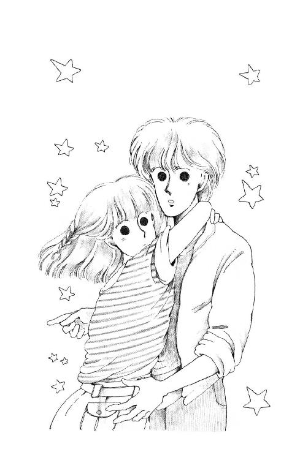
「きゃっ!!」
あたしはあわてて、朱海さんの首にからまってた手をほどいた。
う、うそっ。あたしったら、なんて大胆なことを!?
「ご、ごめんなさい！」
「なんだー、やめちゃうなら言うんじゃなかった。なんならもう一度いかが？」
「......!!」
「うそうそ。やっぱり自分の学校の校庭っていうのはちょっとまずい。ひと気のないところにでも、まいりましょうか？」
「......んもぉ......」
あたしがぷーってすると、朱海さんは鼻の頭にしわを寄せてくすくす笑った。
そしてそれから、表情を止めてぽつんとおっしゃったわ。
「ここじゃだめなの？ 高校」
って。
ああ。聞かれた。聞かれちゃった。
まだちゃんと考えてないのに。ここがいやなんじゃない。華雅いのちなわけでもない。ただ、ただ......。
ひとことで言えない思いにあたしが口を結んでいると。
「まぁ、しかたないか」
朱海さんはベンチに置いてた手袋を手にとって、くしゅくしゅっ、とした。
「やっぱり未来ちゃんには華雅のほうが楽しいだろうしね。ともだちだって大勢待ってるんでしょう。なんか、寂しくなるけど......いや、うららだってそうだよ。かわいくないことばっか言うやつだけどさ、あれでほんとに未来ちゃんのこと好きなんだぜ、あいつ」
朱海さん、羅士丸の頭ごしごし撫でて、じゃ、なんて片手を挙げてる!!
行っちゃう......!?
「......!!」
あたし。
あたし、気がついたら、朱海さんのジャンパーの背中、つかまえてしまってる。
「......未来ちゃん......？」
「い、急ぐんですか？」
あわてて手を放すと、朱海さんは手袋を手になじませるようにキュキュッ、ってひっぱりながら困ったみたいに笑った。
「......うん。実は出がけに昼飯の買物頼まれてね。未来ちゃんが深刻そうだったからぼんやりしてて、いいよ、なんて言ってきちゃったんだ。ごめん」
「......あたし......」
あたしは何も言えなくなって朱海さんを見た。
怒ってる。どうして？ あたしが華雅に行くつもりだから!?
うららがいる森戸南女学館のこと、おバカにしてると思っちゃったの？
そうじゃない。あたし、ほんとはこの学校好きなの。今のクラスのみんな、とてもとても好きなの。
コンプレックスもってたり、ちょっと不良だったり、学習態度はあまりいいとは言えないひとたちだけど......みんな気のいいひとたちだわ。
なまいきで考えが狭くてその上短気なあたしのほうが、ずっとずっといけないところたくさんあるのに、みんな、すぐにおともだちになってくれた。仲間にしてくれた。
その中でもうららって、はじめからすごくすごく親切だった。見るからに親切な親切じゃなくて、一見いじわるみたいな親切だけど......あたしだったら、あたしみたいな鼻っぱしらの強い子のこと、きっと大っきらいになっていじわるしたくなっちゃったと思う。なのに。
ああ、あたしだってうらら好き!! うららから離れていきたいなんて思ってるわけじゃあないんです......！
朱海さんも、黙ってあたしを見ていた。
こんなに近くに立っているのは初めてかもしれない。背が違う。二十センチ以上は違うみたい。朱海さんの顔、じっと見ているだけで首が痛くなる。
痛くても、怖くて顔がそらせなかった。そらしたら、朱海さんこのまま帰ってしまいそうで。
言わなくちゃ......なにか、言わなくちゃ......。
でも、ほんとうに言いたいことば、なんなのかわからない。何を言ったらいいのか、わからない。......わからない......！
不意に朱海さんが何か言いかけたみたいに口を開いて、それからまつげを伏せてそっと首を振った。
「......ごめん」
革の手袋が、あたしの頰にピトッ、てさわった。
「自転車？」
え？
一瞬何のことかわからなくなった。でも、すぐ、気づいた。
「いいえ、羅士丸の散歩の途中なんです」
「じゃ、送ろうか？」
ジャンパーのポケットに入れていた手を出しながら、朱海さん、羅士丸にかがみこむ。
「羅士丸、ジッパー閉めて胸のところに入れれば大丈夫だと思う。ぼくのメット、未来ちゃんには大きいかもしれないけど」
「でも、でも、汚れます！ この子、きっと砂になってるし」
「どうせ中Ｔシャツだから、へっき」
逆光で笑う朱海さんの顔に、歯だけが白く映える。
「なー、バイクに乗りたいよな？ おい、覚えてるか？ ぼくのこと」
引き綱をほどかれて抱きあげられて、羅士丸はちぎれんばかりにしっぽ振ってる。
「でも、朱海さん、ごはんのお買物は」
「んー、買って届けるよ。でも、もしよかったら未来ちゃんちに電話しておいて、荷物置いてから長者ヶ崎のほうまでいかない？ 『ポニー』って古いレストランがあるんだ。嬉しかったから、ビーフ・シチュウでも奮発する」
「わぁ!!」
あたしってゲンキン。
ビーフ・シチュウって、大好物なんだもん。
でも、嬉しかったって何のことだろう？
校舎の長い影の中を、バイクを置いてあるほうまで歩く時に尋ねると、朱海さんは『なんでもないよ』って、いたずらっぽく肩をすくめた。
森戸の商店街で買ったお肉やお野菜を持ってお玄関に入っていった朱海さんを、玉砂利のアプローチで羅士丸と待った。
ザクザクする地面にびっくりしてくるくる回ってる羅士丸をあやしていたけど......。
どうしたのかしら？
なんだか長い。
開いたままのお玄関をふりかえっても、大きなお屋敷はしいんと静まりかえって、ひとの気配もないの。ますます濃くなった梢がザワザワ揺れて、時々鳥が啼く。
ご門の向こうに置いてある朱海さんの赤いバイクだけが不似合いに現代風な以外は、百年の昔に戻ったみたいな景色。羅士丸が砂利を飲み込んだりしないように気をつけなきゃいけないと思いながら、そわそわしちゃう。
風の音聞いてると、あの雨の日の恐怖、思い出しちゃう!!
やだな。朱海さん、早く来て。
森が不吉な音でまたざわめいた。
やだ。臆病だと思うけど、あたしこういうのダメなんだってばっ!!
羅士丸を胸に抱きよせてなるべく小さくしゃがみこんでいると。
「ギャ──ッ」
......な、何今の......!?
わん!! わんわんわんっ!!
「あ、羅士丸!!」
ひもを持ってなかったのがいけなかった。
止める間もなく、羅士丸はお玄関の左がわの植え込みの間に走りこんでしまったの！
ど、どうしよう？
ここで朱海さんか誰かが来てくれるのを待つ？ それとも......。
......キュイーン、って羅士丸の、悲鳴......？
あーん、ほっとけないっ！
苔むした地面に足をとられながら、植え込みを分けて入った。
西在家さんちには何度か来たことあるけれど、なにしろ広くて迷路みたいなお屋敷で、とても全体が把握できない。もちろん、入ったことのないお部屋がほとんどで、迷わずにいけるのはうららの部屋にあがるまでと、一階のお庭がわの長い縁側と二階のお手洗いくらいよ。
それにしても、こっちがわって全然見たことがなかったんだ。
だって、切り開いた山肌そのままのところに剪定もされてなさそうな太い木が地滑りを押さえるように何本も植わっていて。建物の影になってることもあって、剝き出しの土の地面がぬるぬるぬらぬら、ところどころに雨水が溜まった窪みまである。
勢いつけて駆け込んだら、きっと転んでた。幸い、そうっとそうっとのぞきながら来たから、足元が危うくなった時もとっさに木にすがって転ぶのまぬがれたけど......痛かった。棘のある木だったの。
なるべく乾いたところをたどって行くうちにだんだん、腰の高さまで草に吞まれて来た。さすがの家元家も、裏の雑草までは手が回らないんだわ。でも、こうなると雑草っていうより、野原の中みたい。ソックスから出てる脚を薄い葉がシュッ、ってこすって傷つける。
やだなぁ......帰りたくなってきた......ムシとかトカゲとかいるよ、これは。絶対いる。蜘蛛の巣とかはそれほどダメじゃないけど、あたしナメクジとかミミズとか、長くてヌラヌラしてるのはごめんしたいのよ。......ま、まさか、へび、......さんはで、でで、でないよね......？
ででででも、いない、とは限らないだろうなああ......なにしろこんなにじめじめヌトヌト......。
早く戻ろう......。
羅士丸ったら、いったいどこに行っちゃったのかしら？
「ラッシィ？ ......羅士丸どこ？」
できるだけ小さな声で言ってみる。
「いないの？ あたし、戻るわよ、ほんとに戻るからね？」
そうは言っても、実はここまで来ると、戻るのもやーな感じなんだもん。羅士丸がいっしょにいてくれるとすごくこころ強いのに......。
......まったくしようがないなぁ......どこ行っちゃったのよぉ？
目の前をふさいでいた、八手かなにかのひと枝を、そっとはらいのけたとたん。
......土蔵......だわ......。
白塗りの壁にべんがら格子、二階ぶんの高さで瓦のお屋根まであるりっぱな土蔵がどっしりと建っている。高いところにある格子のはまった窓のあたりにだけ、地面までは届かない陽の光がおしげもなく注いでいる。
入り口のセピア色の木戸は半分あいていて、その横にてっぺんが平たくなったお休み石があって、そこに。
......ピンクのガウンを羽織った女の人が座って、こっちを見てる!!
「どなた？」
み、見つかった!!
「あっ、あの」
変な高い声が出てしまった。
「すみません通りがかりのものですが、こちらに犬がこなかったでしょうか？ ちっちゃくて、ダルメシアン、ってあの、ビクターのこういうかっこうした犬の仔犬なんですけれど？」
女の人は口を半開きにしたまま、焦点の合わない目でこっちを見てたけど、やがて、にたーっと笑ったのっ!!
「もとは犬か、もといぬか。お嬢ちゃん、知っていて？ そういう落語があるの。でもあたしが一番好きな古典落語は『たらちね』って言って、お公家さんにご奉公してた女のひとが町人のお嫁さんになってね、ああ、あれは何だったかしら、『コンチョウはドフウにしてなんとかかんとか......』」
胸がドキドキすごい勢いで打ちはじめて、頭がくらくらしてきた。
いったいなんなんだ、このひとは？ ゆ、幽霊さん、じゃないわよね、脚もおありになるみたいだし......純日本風の土蔵に出る幽霊さんにしてはやけに派手なご衣装ね......欧米の幽霊さんには足があるって言うけれど、こんな明るいお昼から表に出てるし......。
あ！ そうだ......もしかすると、このひと......。
「か、香織さま......？」
「はい？」
わーっ！ わーっ！ お返事されちゃったっ!!
じゃ、じゃ、『土蔵に閉じ込めて』『今度は長もちしてたけど』って言ってたけど、やっぱりこのかたって......。
「未来ちゃーん！ ミッキー!!」
朱海さんの声だ!! ずいぶん遠い。
「どこ行ったんだ？ おーい、未来ちゃ──ん......っかしいな、やっぱり中かな？」
お家に入っちゃう......！
「あ、あけみさあああん!!」
「あれ？ ......どこ？ どこにいるんだぁ？」
「あたし、ここにいますう!! ここって、あの、お蔵のとこですう!!」
「......蔵ぁ？ ......あやややや」
あれ？
足音が遠ざかる......？ うそぉ!?
「まぁ、朱海のおともだちなの？」
突然、ピンクのガウンのひとが嬉しそうにおっしゃった。
「は、はい。あの、うららさんの同級生でもありまして、浅葉未来と申しますっ!!」
「まー、そうなの？ ごめんなさい、失礼しました。ちょっと、おあがりになりません？」
お、おあがりって、土蔵に......？
「あわわ、いえ、あの、ご遠慮しますわ、あたし、あたしあの、暗いところってあんまり得意じゃなくって、えへへへ」
「あらー、暗くないのよ。ちゃんと電気もガスも引いてあるし、ボロに見えるけど冷暖房完備なのよ。コーヒーくらい入れられるわ」
さっきの『もとはいぬか』とか言ってたのと同じひととも思えないしっかりした口調で言って、香織さまらしきひとはほらほら、って手招きなさった。
草の真ん中にいると、なんだかかゆくなってくるじゃない？ 思わず、あたしが一歩踏みだした時。
きゃんきゃん弱々しく吠える声がしたかと思うと、ぴちゃっ、ぴちゃっ、って水のしたたる、ゾッとするような音がしたのっ!!
「あらやだ。水道かしら？」
オーバーに頰に手をあてて、ピンクの香織さんは土蔵の中に入っていったけど......。
だ、だまされないわ！
羅士丸がこっちにこなかったはず、ないもの!!
ああ、まさか、あのひと仔犬を食べる趣味があるとか......そう言えば、やけに唇が真っ赤だったわ。あの、ピシャピシャ言うのは、ちっ......血がしたたる音かも......。
「羅士丸っ!!」
あたしは草を飛び出して、まっすぐ蔵に走った!!
「今助けにいくわ!! 待っていて!!」
「......ミッキー!!」
ガサガサッて、あたしが来たのと反対側の草が揺れた。
「朱海さん！」
「出たっ!?」
まっ先にそう尋ねたわ。
「で、出ましたけど......」
いくらお蔵に閉じこめておかなきゃいけないような凶暴なひとだとしても、実のおねえさまのこと『出た』っていうのはあんまりだと思ったのよね。
「どこ？」
小走りに、お蔵の前の少し草がはらってあるところにでると、朱海さんはあたしを背中にかばって......あたしが出てきたくさむらをのぞきこんだ......!?
「は？ どこって、あの」
「マムシだろ？ 嚙まれなかった？ 夏になると出てくるんだよなぁ......どっちいった？」
まむし......？
まむしってもしかすると......。
「へ、蛇!! そんなのいるんですか!?」
「え？」
ふりむいた朱海さんの腕から何か落ちた、と思ったら......。
「羅士丸!?」
濡れてペシャンコの情けない顔の羅士丸は、怒ったみたいにキャンキャン吠えた。
「どこ行ってたの、おまえ!?」
「裏の池にはまっておぼれかかってたんだ」
朱海さんが答えた。
「犬かきしてけんめいに浮かんでたけど、まわりが苔で上がれなかったみたいで......鯉がめずらしかったんだろうね。でも、マムシじゃないなら出たっていったい......」
「鯉ですって!?」
あたしは胸に抱えていたびしょびしょの羅士丸をあわてて放した。
「あ、あのう、ひ、ひょっとすると、こちらには一匹何千万というようなお鯉が......？」
「あ、そんなんじゃないよ。祖父の道楽だからね、ずいぶんでかくなったのはいるけど、羅士丸が飛び込んだ時にみんな深いとこにもぐっちゃったみたいだから大丈夫」
「ちなみに参考までに、一番お高いお鯉さまですと、いかほどくらい......？」
「さぁ、百万くらいじゃない？ なんとかコンテストから買ってきたのがいるはずだから」
「ひゃ、百万円!?」
百万円の中に飛び込んだ、ですって......!?
「......らしまる......」
あたしのつめたーい視線に、羅士丸はビクッ、として、後ずさりした。今度はすかさず、ひもを踏んで逃がさないようにしておいて、やさしく低く押さえた声で、あたしは尋ねた。
「......おいたはいけない、って言ってるわよね、いつも？」
キュ──ンンンン......。
「あんたっていう子は、まったくあんたっていう子は......お座りっ!!」
羅士丸は電気を流されたみたいに、ビッ!! と狛犬さんのかっこうになる。
「バカ犬!!」
心配したんだから！ 情けない声で鳴いてるから、必死に捜しに来てやったのに......鯉に見とれて池に落ちた、ですって!?
目をつぶってたたいたら、思いのほか大きな音がした。
目を開けたら、羅士丸は脅えた顔をして、首を肩に埋めるようにしてあたしを見ている。
怒った時はちゃんと怒ってる、って示してやらないと、甘ったれのわがまま犬になっちゃう、って南部のおじいさんが言ってた。でも、あたし、こんな小さな頭をぶつなんていやで、いつもパパたちにまかせてた。
あたしにぶたれたのは、羅士丸初めてだったんだ。
小さな目を悲しそうにうるませてる羅士丸を見ていたら、あたしも泣きたくなってきちゃった。
「......ぶったりしてごめん!!」
ああ。だめなんだ。怒ったりできない。思い切り抱き締めてしまう。
羅士丸の舌が、目尻のところをペロペロなめた。
「羅士丸ぅ、お願いだからいい子になって、ね？ よそのお家で勝手なことされると困るのよ。わかる？ ん？」
キューン。
「......そうしてると、おかあさんみたいだな」
朱海さんのやさしい声が、すぐそばでした。
「こら、やんちゃ坊主。あんまり心配かけるなよ」
苦笑まじりにしゃがんだ朱海さんに、ぐりぐりんって頭を撫でてもらうと、羅士丸ったら、もう調子づいて、わん!! なんて得意そうに吠えてるの!!
「んもう!! ちっとも反省してない！」
「まだ小さいからしかたないよ。そのうち、落ち着いた成犬になるさ」
「そうだといいけど......」
「あーら、犬見つかったのね」
ハッ、と顔をあげると、ピンクのガウンのひとがこっち見てる!!
「......ねえさん......またそんなかっこのままで」
朱海さんが顔を赤くなさって、立ちあがった。
不気味さが先にたってあまりよくお顔を拝見してなかったけど、そう言えば香織さんって、うららより朱海さんと似た端正なお顔だわ。青白い肌にお口だけがやけに赤いのが、太陽となかよしの朱海さんたちと全然違うけど。
「あら、いいじゃないの。ひとに見られるわけじゃなし」
「見られてるじゃないか」
「......だって......」
赤い口を尖らせた香織さんに、朱海さんは、ほう、ってため息をおつきになった。
「わかったわかった。今日はできたの？」
できた？
香織さんって、何か作ってらっしゃるのかしら？ ......そういう病院で、作業訓練みたいなことなさってるかたの中に時々すごく芸術的なものをお作りになるかたがいらっしゃる、って話聞いたことがあるけど......。
だったら、貴重な創作の時間に、あたしおじゃましてしまったんだ。
悪いことした。
ちょっと変わってはいるけど、実際のところこのかた何ひとつあたしに悪意あることなさったわけじゃないのに。お家（？）にまで招待してくださったのに、あたしったら、ただただ疑ってたなんて......。
「なによぉ、どーせスランプよぉ!!」
香織さんは朱海さんに、ベーッ!! と舌を出してみせた。
「ふん、スランプじゃなくなったら、こんな家すぐに出てってやるわよっ!! ありがたいと思いなさい！ あー......ネタネタ、ネタタタタ......ネタさえあればっ!!」
ベートーベンみたいに、両手で髪を搔きむしる。
ネタ？ スランプ？
......わかった！
「香織さま、香織さまって、新作落語を書いてらっしゃるんでしょう？」
あれ？
香織さんも朱海さんも、茫然となさってる......？
「あら......ご、ごめんなさい......あたしはただそうだったらぜひ、拝見してみたいなーなんて......いえ、あのおじゃましちゃってごめんなさいってことを言おうとしたんですけど......」
なんとか、不幸な第一印象（を持たれたに決まってる!!）を解消しようとしてるのに......んもう!! きっと、香織さまは落語を書いていること、秘密にしているんだわ。こんなところにこもっているのも、若い女性には似つかわしくないお仕事を、単に恥じてらっしゃるだけなのかも。そうだわ。女性であることも隠して、謎の作者をなさっているのかも!!
......でも、だとすると落語の話をしてもだめだから......。
あ、そうだ!!
「あの、あたし、この間まで華雅にいたんです。香織さまって、昔華雅御前でいらしたんでしょう？」
「華雅ですって？」
突然、香織さんの美しい顔がゆがんだの!!
「ねえさん、落ち着いて!!」
押さえるように肩をつかんだ朱海さんの手ごと、がたがた震えながら、香織さんの飛び出した目がまっすぐにあたしを見た。
「あたしが御前ですって？ 噓よ!! 何かの間違いよ!! 御前なんかであってたまるもんですか、あんな、あんな恐ろしい......ギャア!!」
興奮の伝染った羅士丸の、キャンキャン吠える声も聞こえなくなる声で香織さんは悲鳴をあげた。さっきの声、このひと!?
「大丈夫だよ、ねえさん、ねえさんは御前じゃない、もう御前じゃないんだから安心していいってば！」
朱海さんは必死でなだめているんだけど、あたし、どうしたらいいのかさっぱりわかんない。
御前、って単語がいけなかったらしいけど......どうしてよ!?
そこへ。
「......せんせい!!」
叱るような声がして、香織さんも朱海さんもハッ、としてふりむいた。
一瞬後れてあたしがふりかえると、
「またやってるよ......あれ、ミッキーじゃないの？ 何で？」
うんざりした声出したのはうららじゃない!? その隣に、誰か知らないおんなの子がいる。
その子はこっちに大股に近づいてくると。
「せんせい、見てください！ お家のほうにこれが来てました!!」
赤っぽい封筒をサッ、と差し出した！
香織さんは、朱海さんの手をもぎはなす勢いでそれをひったくると、歯を使ってバリバリ開けた！
出てきたうすっぺらな紙を、鼻で突き破りそうなくらい顔に近づけて見たかと思うと......。
「オ───ッホッホッホッホ!!」
ベルサイユのバラ（註８）かと思うような声で笑いだしたの！
「やったわ、小熊!! 見て!! 『夕暮れ時はプリンセス』八千部に、『おませにロコモーション第一巻』三千部!! これで、これで、これで全十八冊のうちクメのやつに負けてるのは『きまぐれレディ・エル』だけになったわ!! バンザーイ!! バンザーイ!! バンザ───イ!!」
「おめでとうございます!! でも、先生の実力では当然です！」
知らないおんなの子は、涙を流さんばかりに力を込めてそう言った。
......小熊、ですって？
まさか、ろくに学校にも出てこないのに、麻雀の腕はあたしなみ、植田美土里さんはじめ森戸南じゅうに一目おかせている、あの小熊さんじゃないでしょうね!?
そう言えば、ずいぶんしっかり落ち着いてらっしゃるわりには、服装の感じや素顔のままなところはあたしと変わらないとしごろのようにも見えるけど......このひとが!? みんなに恐れられるようなスーパー不良さんなの!?
見えない。そうは見えない。
そりゃ、あたしはひとの本性を外見から判断できるほど人生経験豊富じゃあないけれども、でも、香織さんの手放しのお喜びに、こんなににこにこして......。
「郵便物を拝見してきっとそうだろうと思いまして、はい!!」
うわっ、バラだ!!
うららが後ろ手に隠し持っていた巨大な花束を受け取ると、小熊さんはうやうやしく香織さんに捧げたのよ！
「まぁ、これをわたくしに!? ......小熊や、かたじけのう、ありがとう」
ああ、その御所言葉風に尻上がりにいう『ありがとう』こそ、華雅貴人伝統のおっしゃりようじゃないの!!
香織さまは、腕いっぱいの大輪のバラを幸せそうに胸に抱くと、今やつやつや輝きだしたお顔で決然とおっしゃった。
「わたくし、書きますわ!! ああ、全国百万読者のみなさんが、わたくしの次なる作品を、砂漠に彷徨うひとが一杯の清涼な水を求めるように待ち望んでらっしゃるのが見える......これが書かずにいらりょうか。......小熊、ゆくわよ!! ハイヤーを呼んでちょうだい！」
「はいっ!! いてさんじます!!」
あっけにとられてるうちに、小熊さんって呼ばれたひとは、お家のほうに走ってってしまったの！
......でも......。
「『夕暮れ時はなんとか』？ 『きまぐれレディ、なんとか』？」
いったい、何なのそれ!?
あたしがつぶやくと、朱海さんとうららは、ばつの悪い顔を見合わせた。
目くばせされてうなずいたうららは、妙にやさしい声で、
「......ま、ミッキー、お茶でもどお？ 家にはいろ、ねっ、ねっ」
「待ってよ、うらら、いったいこれは......」
「さ、行きましょ、行きましょ。兄貴、羅士くんのことちょっと頼んだよ。この子、あたしの部屋連れてくから、いいね？」
さ、さ、って肩を抱かれて、朱海さんたちが出てきたほうに回るとなんのことはない、あの鉄棒のあるお庭まではほんの十五歩だったの。
「落ち着いた？」
冷たい紅茶を一気に飲んだあたしに、うららが言った。
「......なんとか......で、でもあれはいったい......!?」
「わかったわかった、こうなったら説明するから、どーぞ何でも聞いてちょうだい」
そう言われると、どこから聞いたらいいのかもよくわからなくなっちゃう。
だいたい、『こうなったら』ってしかたなしに説明してくれるらしい、ってことは、あまりひとに聞かれたくない話で、できることなら知らせないですませたかったこと、ってことにならない？
外廻りが純和風建築なのにうららの部屋は板張りで、あたしがもたれてるのはアーリー・アメリカン調のベッド。シンプルなアイヴォリーの織物が掛かってる。うららはどっしりした木の机を後ろにして、床に置いたクッションの上に寝ころがってる。冷房がなくても、あけてある窓から入ってくる風がけっこう涼しい。
紅茶のグラスを床のお盆に置いて、あたしは言った。
「......あまり立ち入ったことうかがっちゃ悪いでしょ？」
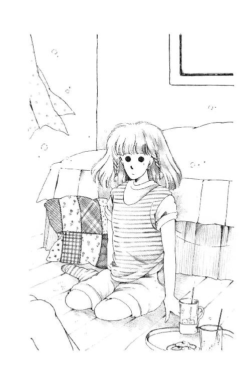
「あー、いい、いい。もう、しかたないもん。なんでも聞きたいこと言ってみてよ。あたしが知ってることだったらしゃべったるから」
「でも......あたし自信ないわ。秘密にしておかなきゃいけないことだったら、聞かないほうがいいんじゃないかしら？」
「んなら、いいわよ。べつにしゃべらなくたって」
「あ、でも、やっぱり聞きたい!!」
「ほーらね」
クッションの上で斜めに頭を支えて、うららは笑った。
「まー、いいから言ってごらんって」
......ごく。
「じゃ、聞くわ」
ん、ってうなずくうららにだけ、聞こえるくらいの声を出す。
「......あのかたが西在家香織さまね？」
「あんたそんなこともわかんなかったの？」
うー......。
めげない。
「いいわ。じゃ、どうしてあのかたは、あんなところにいらっしゃるの？」
「落ち着くんだって、あそこが」
眠そうな目をして、うららが言った。
「お蔵がぁ？」
「なによ、あれでけっこう中は立派なんだぜ、香織ちゃんのために改造したんだから。おかげで先祖代々のだいじなツボだとか茶碗だとかひっこすんで大変だったんだから。あ、聞かれる前に答えるけど、そういうもんは地下貯蔵庫にぶちこみました。納得？」
ひらひら手を動かしながら、うららは楽しそうにしゃべるのよ。
「......でも、あんなとこが好きだなんて変わってらっしゃるのね......あたしだったらやだわ。こちらはお家だって広くっていくらでもお部屋あまってるでしょうに、なんでわざわざ？」
「あー、それはね、電話の音がするとだめなの、あのひと」
「......電話？」
「うちは家じゅうにインターフォンがあるしさ、ジジイが耳遠いから、けっこうでかい音で鳴るんだわ。香織ちゃん、それがダメなの。だいたい、うちにくるのは編集さんから逃げてる時だからね。とにかくひととの接触を断って、スランプ脱するまでこもるわけ。いわば忌み屋ね。ほら、日本史でやったじゃない。アンネのひとばかり集めて、機織りとか染色とかくらーくやってるとこがあるってさ。昔のひとはアンネ中のおんなは巫女さんみたいなもんだと思ってたらしいけど、ある意味じゃ蔵にこもる時の香織ちゃんはほんと神がかりになってるもんね」
「......？」
「わかんない？ だって杉丸に聞いてるでしょ、香織ちゃんがもの書きしてるってのは？」
......えっ？
「聞いてないわ!!」
「おや、ほんと？ はーん、杉丸も意外に口固いんだ。それとも、独占欲......かな？」
「でも、新作落語じゃないんでしょう？」
「落語......？」
がく、って肘をはずすと、うららはけらけら笑った。
「あんた、それ香織ちゃんに言ったの？」
「......い、言ったけど......」
「こりゃいいや。そうよ、似たようなもんよ。香織ちゃん、あーんなに暗いのにギャグ書いてんのよ。あ、あれはギャグっていわないか。コメディーよ、コメディー。あたしは読まないけどさ、杉丸なんか好きよー。香織ちゃんのきげんのいい時にサインもらいに来たもんさ。なんだっけ、ラブ・コメ？ かっこいい彼とドジでマヌケでチアキ（註９）なおんなの子がでてきて『そーゆーきみが好きなんだ!!』とかってやるやつ！ ......それをあの、暗い香織ちゃんが書いてるなんてほーんと不気味だと思うけど、それをおもしろい、って言ってくれるひとがいるんだからありがたいわよねー。小熊だってそうなのよ。何度も何度もお手紙書いてきてくれちゃって、香織ちゃんすっかりあの子が気にいっちゃって、ご近所だったのを幸いにアシスタントみたいにしてただでこき使っちゃってんのにさ、小熊いい子だから文句ひとつ言わないで、先生、先生、ってめんど見てくれてんの。今じゃ奥さんみたいなもんよ。スケジュールの調整から原稿料の交渉まで、なーんもできない香織ちゃんのかわりにみーんなやってくれてんのよ。家族だってあそこまでは献身できないわ......あれ、どしたの、ミッキー？ 目が点になってるけど？」
知らなかった......あたしはてっきり香織さまってかたは......。
......杉丸が好きなお小説ですって？ じゃ、じゃ、トコもきっと好きで、あたしももしかすると借りて読んだことがあって......。
「ま、まさか！」
「まさかなによ」
「西在家さんなんて作家さん聞いたことないけど......まさか、ペン・ネームは久米かおりさんとか......？」
「久米かおり!!」
ドン!! って床をぶった勢いで、壁の歌舞伎カレンダーがはらり、と落ちた。
「あんた、知ってるの？ 久米かおりを？」
「し、知ってるっていうか、読んだことあるけど......」
なんでうらら、そんな怖い顔するの？
「あの、あの、もしそれが香織さまだったら困るけどでも正直に言うと、久米かおりさんってすごーくいやらしいお小説書くかたでしょ？ あたし、けして好きなわけじゃ」
「......よく言った!!」
もう一度、ドン!! ってしたら、こんどは天井から吊ってあるペンダント・ライトがぐらっ、と揺れて、あたしは思わずクッションをかぶってしまったわ。
「そうよ、久米ってほんとにやらしんだ!! 香織ちゃんだって困ってんだよ。あっちが先にデビューしてたばっかりに、香織、って本名を出すとまるで真似っこみたいだ、って言われて、泣く泣く『西さやか』って臭い名前をつけたのにさ。いまだに香織ちゃんと久米のバカと混同してるひと大勢いるんだ。それというのも、あのバカぞろいのギャルズ・ノヴェラが香織ちゃんと久米のバカの写真を反対にしちゃってさ！ おかげで宝珠流門下三千人が、その親戚友人一同にまで勧めて久米本買ってやったっていうんだから泣けるじゃない!? しかもおそろしいことに、それが誤解だ、ってことにまだ気づいていないひとがずいぶんいるんだ」
「ど、どうして？ だって、すぐに誤解を解けばそんなこと......」
「そこよ、久米のバカの書いた色情小説のおかげで香織ちゃん華雅をおんだされたんだけど、これで御前がやめられる、ってんで釈明もしなかったんだ」
「そんなにお若い時にお書きになってたの......!?」
「おん」
信じられない!!
「だって、今のお話だと香織さま、華雅にいらっしゃるうちにお書きになっていたことにならない？ なのに、どうしてその『なんとかこめ』っていうのが書けるの？ ......だって、華雅にいてどうしてそんな知識が......」
「あー、知識なんかないない」
うららは肘から上だけをコキコキ、って振ってみせた。
「香織ちゃん、なーんも知らんもん。未だに、こーんなぶ厚いページを費やしてもベッド・シーンはおろかキスも書かないってよ。まーたまに姉貴の書いてるもんぐらい読もうかと思ってあたし一冊杉丸に借りたけどさ、よくもこんな王子さまみたいなおとこがなんのとりえもないカマトトに惚れるな、ってあきれた、あきれた」
「............」
「もともと香織ちゃんはあんた同様同性愛一歩手前のひとじゃない？ レズみたいな友情もん書いてデビューしたくらいで、おんな同士が運命だ葛藤だってべちゃべちゃしてる話かかせるとすごい迫力らしいよ。杉丸が心酔してるのもそのへんなんだけど、そういうマイナー趣味のじゃ売れないとかなんとかあってさ、久米にバカにされたくない一心で無理矢理メジャー路線になぐりこみかけたのよ。売れる本しか書かない、って悲壮な覚悟で四年もやってりゃ、そりゃテクニックはつくわなぁ。でも、なにしろ根本的にやりたいことやってるわけじゃないからさ、欲求不満つのらしちゃ、パニックおこして蔵にこもんの。編集もここまでは来ないから、蔵の中でひっそり大好きな変態小説かいてウップン晴らして、また世間に戻る、と、そういう生活してんの、あのひとは」
......なんてこと！
おんな同士の愛が売れなくて、身すぎ世すぎのためにしかたなく書きたくないもの書かなきゃいけないなんて、なんて、なんてなんてご不幸な!! なのに座敷牢にこもってまでお作にはげまれるなんて、なんてなんて崇高なお覚悟なの!?
さすが、さすがもと七代目華雅御前と言われたかただわ!!
ああ、なのにあたしったら......夕鶴が自分の羽で機を織るような凄絶な創作活動を、発作かなにかのように見て、あんなに恐ろしがってしまったなんて、なんて無知で傲慢だったのかしら!?
『西さやか』さん。読まなければ!!
それが、香織さんは、ご自分があまり望んでらっしゃらない『なんとかこめ』でしかないとしても、そんな素晴らしいかたがお書きになるお小説はきっときっと示唆に富み夢をはぐくみ、人生の喜びにあふれているにちがいないわ!!
「あたしったら、何も存じあげなかったとはいえ、ひどく失礼なことしてしまったわ！ うらら、できることならよろしければ、もう一度お目にかかってお詫びなどひとくさり......」
「あ、だめ」
あたしがこんなに燃えているのに、うららったら、軽く言ってくれちゃうの。
「さっき、車の音がしてたでしょ？ 小熊といっしょに逗子マリーナの仕事場に帰ったよ。......なんだ、あんたってけっこう、ミーハーなのね」
「そ、そんなんじゃないわ!!」
でも、逗子マリーナですって？ ノーベル文学賞のかた（註10）がいらしたところじゃないの!!
すごい！ さすがもと華雅御前!!
......でも......そう言えばさっき、うららなんか気になること言ってなかったかしら......？
そうよ、香織さまが華雅を辞めたがってらした、みたいなこと言ったわ！ それに、御前のことを申し上げた時、香織さまご自身もあんなに取りみだされて......？
「もうひとつ教えて!!」
「はいはい、なによ」
「香織さまはなぜ華雅をお辞めになったの？ 御前のことも、なんだかすごく恐れてらっしゃるようにお見受けしたけど......？」
「......あんた、華雅御前って何だか知ってるの？」
クッションを抱きよせて、うららは目を細めた。
何てこと！ あたしがこの子より華雅のことを知らないとでも思ってるのかしら!?
「もちろん知ってるわ!! 眉目秀麗・成績優秀・品行方正、三種の神器にかてて加えて、お家柄もお育ちも天下一品。生徒先生シスターを問わずどなたにも愛されるやさしいご性格を持ち、幼稚園の時から俗世を離れて華雅の園に学ばれ高等部の華におなりになった真に貴人と言えるおかた......言うなれば華雅学園の姫にも女王にもあたられるかたこそ！ 御前と呼ばれ、しもじもの敬愛と憧れを一身にお受けになる......そういうかたよ!!」
一息にしゃべると。
うららはうんざりした顔で低くうなった。
「......まったくあんたってこういう話になると生き生きするわね......アテビトだとかシモジモだとかまぁ、盛り上がっちゃって」
「......悪かったわね」
そうだわ。あたし、内心華雅批判始めてたはずなのに......身についちゃってるんだ......こういう話始めるとつい見境がなくなって......。
ああ。性格、改めなければ。
「......いいけどね。じゃ聞くわ。そのすごい御前がなんで今はいないの!?」
え？
うららはその気になるとずいぶんきつい目つきができるんだ。
「うちの愚姉がなれるくらいなんだから、ほら、なんだっけ？ あんたのレズ相手......あたしと同じ字を書く......」
「麗美さま!? レ、レズですって!? ......あ、あ、あたしはねぇっ!!」
「あー、わかったわかった。悪い悪い。ま、ちょっと落ちつきなって。とにかくそのひとのことをさ、あんたたちなんで御前にしなかったのよ？」
首の後ろがざざざっ、と総毛立つ感じがした。
な、な、なんていやみなのっ!?
だめだわ。改めるのはまた今度だわ。
こうなったら対抗上、あたしだって思いっきりにらんでやる!!
「うらら......見損なったわ」
「へ？」
「いい？ 麗美さまはほんとうに素晴らしいかたよ。全校生徒の人気を一身に背負われて、お美しいしおやさしいし、もちろん聡明でもいらっしゃって......香織さんがどんな生徒さんでいらっしゃったか、あたしは存じあげないからお比べするのもおこがましいけどあえて申しあげれば、けして見劣りするようなことはないと思うけれど!! ただ......あえて、あえて申しあげればよ、麗美さまは貴人のお生まれとは言えないわ。みんながどんなに麗美さんをお慕いしていても、ううん、お慕いしているからこそ、そういう点はけじめつけなくては。万一代々の御前とお比べして見劣りする御前だ、なんて先輩のみなさまがおっしゃってごらんなさい、麗美さまがおかわいそうじゃないの!? そんな危険をあえて冒さなくても麗美さまは、ソロリティー会長としてりっぱに華雅高校中学六百名の......」
「......よくそう舌が回るわね、ややこしい言葉ばっか使って......でも、なんで、それであたしがあんたに見損なわれなきゃいけないのよ!?」
うららは血の気のひいた顔で、ぐっ、とあたしを見た。
あたしは、苦しい息を調えた。
お家柄のことなんか持ち出して、麗美さんをおとしめようったってそうはいかないわ!!
「いい？ いくら、あんたが平安の昔から続いた家元家の令嬢で、世が世なら宮様のお側仕えも務めその報酬に乱にあっても家風を守って平和に過ごすことを保証されていた一族の末裔だとしても......『御前になれない』なんて指摘するなんて......下劣よ!! うららって、そういうことだけはしないひとだと思ってた!! お家柄を鼻にかけるなんて最低だわ!!」
「そんなことしたぁ？」
うららはずる、って床に滑り降りた。
「ちょっと待ってよミッキー!! なんか誤解してない!? あのねーあたしはね、華雅御前がそんなにいいこと尽くしのもんだったら、いくらうちの香織ちゃんが変人だってなにもあんなにいやがるか？ って言いたかったんじゃないさっ!!」
「いいこと尽くしじゃないって......ほかになんかあるの!?」
「ほーらね、あんたは何にも知らない」
とことんうんざりした声でうららが言った。
......うぐ......。
奥歯をぐっと嚙みしめたら、ほっぺのうちがわを嚙んじゃった!!
うららは、ゆっくり息を吸うと、ひくーい声で言った。
「いーい？ 華雅御前になったひとってこれまで何人いるか、は知ってる？」
「確か、香織さまは七代目御前だって加奈子さまがおっしゃったように思うけど？」
目だけが笑わない変な顔でうなずいて、うららはますます声をひそめる。
「その七人に、華雅を卒業したひと、ひとりもいないんだよ」
「え？」
どういうこと？
何だかわからないけど、あたりが急に寒くなったような気分よ。うららが変な話しかたするのが悪い！
「七人のうち......香織ちゃんを除く六人はね、みんな卒業前に......」
......ごく......。
「シンだの」
......シ・ン......だ......って......死んだ......の？
ぞわわわっ!!
「......う、噓よねっ!? あははは、うららほんとに趣味悪いわねっ!! 脅かさないでよ！」
「泣きながら笑わないで」
地獄の底から響いてくるような声でうららが言った。
「......まさか。ほんとは違うんでしょ？ 退学におなりになったとか、そういうことなんでしょ？ ね？ ね？」
「ほんとだってばっ!!」
「............！」
思わずつかんだところがうららのベッドのカバーで、たちまち腕にからまった！ わーん、この際、なんでもいいから頭からかぶっちゃう!!
足でも手でも、あんまりもろに空気に出しておきたくない......カバーにぐるぐるくるまって、顔だけのぞかせて、やっと少しは気がおさまってきたと思ったら。
「ひとりめはね......華族のおひいさまだったんだって」
怪談ドラマのナレーターさんみたいな陰にこもったやらしい声で、
「なんでも暗殺されたんだってよぉぉ。一家で芝居見物した帰りにさぁ、劇場出たところをいきなり............ズドン!!」
「ぎゃあ！ も、いい。も、聞きたくない!!」
「それからねぇぇ、どことかの財閥の令嬢もぉ、似たような最期だったんだよぉぉぉ......戦後の混乱の時、ヒステリーおこした軍部の下っ端が何を誤解したのか、天誅!! って日本刀で首をすぽーん......」
「わかった、わかった、かんにんして」
「ま、近いところじゃ過激派に爆弾しかけられて家ごとふっとんだとかね、あと、心中もあったな。無理心中よ、もちろん。電車の中で見そめられて、一週間山の中の別荘かなんかに監禁されたあげく全裸絞殺死体でさ、それをご丁寧にナイフで三十六箇所えぐったおとこもそばで首をつってたとか」
「........................」
「ねっ、こうなると、いくら偶然って言っても、やじゃないさ。それもみんな、華雅をおんでる直前の冬の盛り、さもなきゃかれこれ春になろうって頃に集中してでしょ。今度は大丈夫か、いくらなんでも今度はまさか、って言ってたひとが次から次だもん、卒業を前にして香織ちゃんがびびったの、わかるでしょ？」
あたしはかたかたうなずいた。
わかる。
よーくわかる。
ああ、麗美さんが御前じゃなくてほんとによかった!!
「だからあのひとは、とにかく汚名が欲しくなったわけ。御前じゃなくなりゃ、こっちのもんだもんね。でもねー、今でこそああいう恥も外聞もないひとになっちゃったけど、当時はなにせなーんも知らんおひいさんだものさ。御前辞められるような事件ったって何していいかわかんなかったのよ。次女も三女も箱入りでてーんで知恵ないしさ。あたしが葉山小学校のガキじゃなかったら、少しは役にたってあげたんだけどねー」
「......でも、わわわわ」
口がまわらなくなっちゃったよぉ。
「なわわわなわにも、じ、事件なんてなくたって、辞めさせてくださいっておっしゃれば」
「んなこと言ったってさぁ、御前っていうのは立候補してなるもんじゃないでしょ？ だれに頼んで辞めるって言うのよ？」
「......そっか......」
「んでさ、話せば長いことながら。香織ちゃんは禁止されたアルバイトをすれば御前の名前は返上できる、って思ったわけよ。小さい頃から得意だった作文ひっさげて『ギャルズ・ノヴェラ』なんてとこに送ったのはそういう魂胆だったんだ、ってあとあとあたしゃ小熊から逆に聞かされたけどね。なんと、作家っていうのはアルバイトのうちにはいらなかったんだな、これが。なんでも過去の歴史をひもとけば、華雅在校ちゅうから文名を轟かせた女流歌人とかってザクザクいて『さすが御前！』って言われるだけ。困った香織ちゃんの前に現れたのが......」
「久米かおりさん？」
「あんなのに『さん』つけなくてよろしい!! ......それはまだ先の話なのよ。辻浦さん......いや、名前をだしちゃいけない、某Ｔ氏だな、Ｔさんっていう編集のひとがいたと思いねぇ。ちょうど今のツルさんのとしごろで、既婚七年二児の父、そのＴさんが......」
「？」
うららが、ちょいちょい、って手招きして、あたしはカバーをひきずったままそろそろそっちに寄ってった、その時。
こん、こん。
「きゃっ！」
あたしは思わず飛びあがってシーツに潜ってしまったの。
「誰？ あいてるよー」
え？ なんだ、ほんとのノックだったの？
カラ、って入ってきた朱海さんが、目だけ出したあたしを見てぴたっ、と立ち止まった。
「......なにしてんの？ モスラごっこか王蟲ごっこ？」
「いえ、あのちょっと寒気がしたもんですから」
ごまかし笑いしながら、シーツを出てきちんと畳むと、朱海さんはうららに『？』って顔をなさり、うららは黙って肩をすくめた。
「さっきはごめん。バイクの鍵どっかにほうっちゃって捜してたら、羅士丸の声がするだろ、おかしいな、と思って庭に出れば未来ちゃんはいないし、どうしようかと思ったよ」
「バイクの鍵!!」
うららがシシシシシ、って笑った。
「ともかく、姉貴がぶじ戻ってくれて助かった。これでバートにも大手をふって家の中歩かせられる。......あ羅士くんはフロ場で洗って、縁側で乾かしてるからね」
「......？ そう言えば、バートさんどこ行っちゃったんです？」
「また行ってるよ、七里ヶ浜に」
「は！ 好きだねー」
ちゃかしたうららがあぐらをかいてるわきの椅子に座って、朱海さんはやれやれ、って肩をまわした。
「バートはすごく感謝してたよ。未来ちゃんがよく案内してくれた、って。今日は引退した原節子んち見つけるんだ、とかってはりきって、カメラ持ってった。南部さんにも逢わせてやらなきゃなぁ。やー、一穂も尚史もやっと家に呼べる」
やっと......？
......やっぱり、あの香織さまのご様子じゃ親しくないかたは家にお招きもできないのかしら？ あたしだって最初おっかなびっくりだったし......でも。
「でも、一穂さんたちだったら話せばきっとわかってくださるんじゃないかしら？」
たまらなくなってあたしは言った。
「バートさんだって、今はこちらの家族みたいなものなわけでしょう？ 隠しておくとかえって変な風に誤解すると思うわ。そうよ、恥ずかしいなんて考えたりしたら香織さまがおかわいそうよ!! あんな純粋で無垢で芸術的なかたを！ ......え......？」
朱海さんの目が細くなり、うららがおおげさに顔にしわを寄せてる？
「......あ、あたし何か......？」
「......なるほどそうも考えられるか」
と、朱海さん。
「まったくこの子は早とちりなんだから......」
うららが首を搔いた。
「想像力の翼をはたはたはたはためかせてくれちゃって。ほんと、さすが香織ちゃんの後輩だわ。ああ、だから華雅っ子ってのは困るのよねぇ！」
「おまえね、そういう言いかたはよくないっていつも言ってるだろ」
「うっさいなー、ほんとのことじゃない!? 朱海くんも気をつけたほうがいいよ。この子時々とんでもないこととっぴょーしもなく言いだすから」
「知ってる」
「あ、あの」
とあたし。
「お取り込み中すみませんが、何か......？」
「兄貴説明してやって。あたしゃ『華雅御前の恐怖』で、もぉしゃべりつかれたから」
うー、ってうなったけど、うららに見つめられて、朱海さんは口を開いた。
「......じゃ、簡潔にね。未来ちゃんは、ぼくらが香織ねえさんを恥だと思ってひとめから隠してるように思ったみたいだけど、それは違うの。南部さんも一穂も尚史も知ってるし、実はバートにも、来た時にちゃんと言ってある」
え？ じゃあ......？
「実はねえさんはね、身内以外の異性を見るとすぐ、恋をしちゃうの」
「......はぁ？」
「普通に親切にしてくれただけでね、自分のことを愛してるに違いない、って思い込んじゃうわけ。遠慮がちに接していても、自分を崇拝するあまり緊張しているんだ、って思うみたいでね......そういう点ではやっぱりちょっと変わってるんだ」
「そこがさっきの話とつながるわけよ」
あまりのことに茫然としてるあたしにダメ押しするのが嬉しくてしかたないみたいにうららが言った。
「初めての担当編集者が間の悪いことに気配りのひとだったのよねー。なにせ香繊ちゃんは葉山くんだりまで延々帰ってこなきゃいけないじゃない？ しごとの打ち合わせの後でお腹もへるだろう、ってんで食事に連れてかれて、うぶな香織ちゃんはてっきり『結婚を前提にしたおつきあい』だ、って誤解したわけさ。こっちゃはじめは、まさかあのひとがそこまで過激に無知だなんて知らないから、まぁ香織ちゃんみたいなひとは早くお嫁にいったほうがいいだろ、ぐらいに思って応援してたらさ、今度は彼、原稿取りに家まで来たのよ。そこで『父に逢ってください』って言われたってまさか向こうも、そんなことになってるなんて思わないよねー。かっちり挨拶されてうちのジジイまで『まじめそうな青年じゃないか』ってまるで日曜劇場よ」
......だんだん読めてきたわ。
あったのよ、去年、文化祭の前に。うちの学校......じゃなかった、華雅学園で、全校生徒を集めて『校長さまのお話』っていうのが。
万一おとこのかたと知り合っても、親切にしてくださっても、けして心を許してはなりません。まずご父兄に紹介し、どういうご家庭のどういうお育ちのかたかをよく見極めてから、華雅学園生として恥ずかしくないおつきあいをするように、って。
それでみんな、あっ、って息を飲んだわ。ちょうどその前に、さざなみのようにひろまったうわさがあったのよ。前の年の文化祭でお知り合いになった男性にみさおをささげられたのになんと、お相手が行方をくらまされ、結婚の約束もかなわなくなったのが学園の知るところとなり、休学という名前の不名誉をおうけになった女生徒がいらっしゃる、って......。
校長さまのお話は当時のあたしには相当ショックだったわ。学園の外には、自分を守る誇りもなくみさおすらじゃまなものに思って捨てばちな生きかたをなさっている女性が大勢いる、って。また、ちまたには、そういう女性しか知らない男性、そういう女性があたりまえだと思っている男性もけして少なくないのだ、って。そして、まだまだ子供のあたしたちには、どの男性がそうでどの男性はそうじゃないかはとても判断できないのだから、ご家族や信頼できるご親戚、ご友人を通してのご紹介のない男性はみんな『詐欺』だと思っておけばまちがいがない、って......。
お話の途中から中等部には恐ろしさのあまり泣きだす子もいて、そうでないひとでもたいがい真っ青だったわ。あたしだって、トコと手をとりあって、あたしたちは文化祭のあいだに万一声をかけられても、不埒な男性にはひとことだって口きかないことにしましょうね、って誓いあったんだ。せっかく決意してたのに、誰も声かけたりなさらなかったからちょっとがっかりしたくらい......ま、あたしもトコも、目を三角にして隙を見せないようにしてたから、軟弱な男性は恐れて近づかなかったのでしょうけど。
......今思うと純粋というか無垢というか......それが華雅エンヌのいいとこであり悪いとこでもあるってことになるだろうけど......。
ううん、今はそういうことを考えている時じゃないわ!!
「わかるわ。香織さまがそんな風に思われたこと」
深くうなずくと、うららは『けにてんてん』の声をだした。
「だからやなのよねー!! ったく......ほんと、そーゆー時代錯誤の子になんなくてよかった、四女で助かったわ、あたしゃ」
「うらら」
と、朱海さん。
「だぁってさぁ」
「とにかくね、未来ちゃん」
「はい」
「過保護なのかもしれないけれど、うちの父がその編集のひとのことを興信所に頼んで調べたら、なにしろ相手は妻子持ちだろ、これはおかしい、ってよく聞いてみると、香織ねえさんが勝手に誤解してしまってるらしいことがわかってきて、今度は一家で反対したんだ。そうしたら......きっと彼は奥様とはうまくいっていないんです、まだ若いって反対されるなら高校を出るまで待ってくれるように頼みにいきます！ って止める間もなく家を飛びだした」
「家出!?」
「いや、編集部に行ったんだ。彼に逢って真相を確かめようと思ってだろうね」
「ところが間の悪いことにそん時くだんのＴ氏は......久米かおりんとこに原稿取りにいってたんだな。人手不足の折から、新人作家を一手に担当してたわけ」
うららが口をはさんだ。
「あいつは威勢がいいわりに原稿が遅くって、そん時も徹夜だった。あたしたちにはそれですむけど、香織ちゃんにしてみれば、未婚の女性のところに夜ずっと妻子持ちのおとこがいる、なんてのは『不倫』以外の何ものでもないわな（あたしだってそう思う！）。あたしたちが心配して警察だなんだって言ってると、夜明け頃ハイヤーとばして真っ青な顔して帰ってきて、いきなり部屋にこもった。おそるおそるのぞいていると、とつぜん戸が開いて、『決闘状』って書いた巻紙、真っ赤な口にくわえてフツフツ笑ってるんだもん、ありゃー怖かった。夜叉の顔だった」
「............」
「......？ あによお、さすがのあんたも何にも言えなくなっちゃったわけ？ とにかく。止めたって無駄だってほっといたらね、香織ちゃんその決闘状を久米のやつに送りつけたんだ。そりゃ、香織ちゃんはアホだけどね、あれだけ血の涙をしぼって書いたものを笑いとばしたあげくに編集部に持ってってみんなに見せて廻った、っていうんだから久米もひどい女よ。それからもことあるごとになにかっていうと香織ちゃんのことをバカにして『神奈川県郡部のトシマのカマトト』ってのを十八番のギャグにしている。そういうたわけたやつなんだ、あの久米っていうのは！」
「......ひどい......」
「でしょー？」
「......おかわいそう......香織さま......そんなひどい目に遭われたのに、よくぞ立派に昇華なさって、文学の道を極める決意をされたわね！」
「ブンガク......って、あのね、ミッキー？」
「ごめんなさい......あたしほんとに、短気でやな子だわ!!」
あたしはうららの手を取った。
「でも、すべてをうちあけてもらった以上、あたしきっと、あたしきっといつか香織さまのお役にたってみせる！ こんなちっぽけなあたしにできることなんてないかもしれないけど、でも!!」
「じゃ、本屋行ったら香織ちゃんの本平積みにしてやってよ」
あたしがせいいっぱいの決心してるっていうのに、うらら、まるで軽くそう言ってくれた。
「ひらづみ？」
「あるでしょ、棚にはいってるんじゃなくて台にさ、表紙が見えるように置いてあるやつ。あれよ。小熊がやってる香織ちゃんのファンクラブでは、各自が三軒担当の書店を決めてて、平積みになってる久米のバカの本の上を全部香織ちゃんので覆っちゃうとか、棚しかないとこだとめだつようにさかさに入れるとか、二、三人でサクラ部隊をつくっちゃ『まーさやかさまのご本よ!!』『これすっごーくおもしろいのよお』って何時間もやってるとかいうわよ」
「......ファンクラブ......」
目の前がぼうっと霞んできた。
「それなら、あたしにも、この非力なあたしにもできるかも......!!」
「おいおい、めったなこと言うなよ！」
朱海さんらしい影が手らしいものを振っていた。
「未来ちゃんが本気にするじゃないか？ そんなことしてもかえって本屋がいやがってねえさんの本じゃけんにするかもしれないだろ？ それより、未来ちゃん!! ヨットに乗れるよ!!」
ハッ......!!
「ねえさんがぶじしごとに戻ってくれたからね」
「んだー!! やったー!!」
「やっ......そうですねっ!!」
うららにつられて下品な叫びをあげるのだけは思いとどまったわ。
正常に戻ったあたしの目は、にこにこうなずく朱海さんをしっかりとらえた。
「姫君たちもお喜びのことですから、じゃ、早速明日天気が良かったら、どお？」
「あたし、一穂たちに連絡してくる!!」
「こらっ!! 兄上の友人をよびすてにするなよっ!!」
「エッヘッヘッヘーだ。行ってきまーす。どぞ、ごゆっくり」
「うららっ!!」
朱海さんが投げたクッションは、一瞬早く閉じた戸にファサッ、とぶつかった。
あれ？
閉じた......？
やだ、うらら、なんでドア閉めてっちゃったのよ。おとこのひととお部屋にいる時は、戸を開けておくのがレディのたしなみで......。
「......未来ちゃん」
......あれ？
ど、どうしちゃったの、朱海さん......なんか、なんか目つきが違う!?
「あ、あのドア、開けてください!!」
あたしは思わず、クッションを盾にして戸を指差し......あわててひっこめた。
一本指で指差すのもエチケット違反だもん！
「え？」
「だってあの、ちょっと空気が......」
戸を見て、あたしを見て、意味がわかったはずなのに、朱海さん困ったような顔して笑うばかりで。
「ぼくが怖い？」
低い低い声。
心臓がドン!! ってはねあがる感じがした。
どうして、どうしてそんな怖い顔するの？
膝をついて、しゅっ、ってまっすぐ伸ばされてきた大きな手に、あたしは思わず目を閉じてしまった。
「未来ちゃん」
「は、はいっ!!」
あ、髪が。髪、ひっぱられてる。
「長者ヶ崎どうする、って言いたいだけなのに」
「え」
目を開けてみると、朱海さんがほんとにそばで、あたしの髪のひとふさを指にはさんで笑ってるのお!!
「だめだなぁ、そんなんじゃ」
「......は？ ......はぁ？」
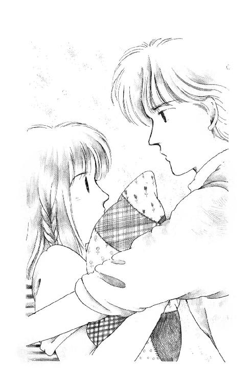
「本気で逃げようと思ったらね、まず、目をそらさない。背を向けない。道ばたで変なやつに追い掛けられたりしたとするでしょ。とにかく、背中見せて走っちゃだめ。未来ちゃんの足じゃいずれ追いつかれるからね、相手が来る方向に走るんだ。向こうは方向を変えるのに一瞬とまどうから差がつくし、知らない道に追い込まれるよりずっといいだろ？」
「......は......はぁ......」
「じゃ、もし、いきなり抱きつかれたら。はい、立って」
朱海さんの手につかまって、あたし立ってみる。
「いいかな。ではまず、前から来た場合。腕ってこっちにしか曲がらないでしょ？ だからこっちにひねると」
「いたたた」
「そう。だから、未来ちゃんがぼくの手をひねるには、こっちからこうね、向こうが手をだしてきたら、その勢いを利用してはねあげて......」
「こうでしょうか？」
「もっと、体を回して」
「こう？」
からだを回すと、朱海さんの手が逆にねじれる。
「そうそう、そのまま背負い投げするみたいにして下に」
「えい!!」
「いてっ!! いきなり......わっ、痛い、痛いってば......」
「......あにしてんのお」
わっ!!
急な声にふりむくと、戸のところに手をつっぱって、うららがにやにやしていた。
「一穂くんが兄貴に代われっていうから呼びにきたんだけどお、おじゃまだったかしらん？」
「ばか」
うららをこづいてドアを抜け、二階の廊下の電話に走ってく朱海さんの足音が、途中で一回がたっと滑ったのを聞いて、うららとあたし、吹き出した。
５
ああ、なんていいお天気なんでしょう。きっと、マリアさまがあたしのお祈りを聞き入れてくださったんだわ!!
水平線の向こうにおいしそうにもくもく盛り上がった入道雲。桟橋に立つあたしの頰を、気持ちいい風が撫でていくの。
どうして今日は日曜じゃないんだ、ってブツブツおっしゃいながら出勤なさったパパが、ほんとにお気の毒だわ。
ふりかえれば『ミッキー』が緑色の防水シートをかけて置いてある。マストははずしてななめにして、どうにかボートハウスに入れてあるの。防水シートのまんなかの重みでへこんでいるところに、いつ降ったのか雨水が埃を浮かべてたまってる。
ずいぶん長いこと、ほっとかれちゃったのね。
でも、今日!! みんなみんな、乗りにきてくれるよ、『ミッキー』......。
そうだ!! あたしひとりでも、シートをはずしておくくらいのことはできるわ！ まだ艤装のお手伝いはできないもの。少しでも早く乗れるようにおせっかいしといちゃお!!
そう思ってほどきにかかったものの......濡れてた時に結んだひもはかたくなっちゃってて......と、とれない！ 誰でしょ、おだんごに結んじゃったのは？
今日の終わりに結ぶ時はあたしがおしゃれなちょうちょ結びにしたげるからね！
ゴワゴワいうシートをどうにかひきずりおろすと、黄色く塗った『ミッキー』が現れた。
おばあさんヨットだけど、みんなできれいにお化粧したからお陽さまの光をあびてキラキラしてる。これに、マストつけて、セイルを張って、シート（ロープ）類あれこれ金具もつけて、そしてこの海に浮かべるとこ想像すると......ああ!!
ぐふ、ぐふふふふ。
......あら、やだ。下品な笑いかたをしてしまった。でも、ほんと！ いいお天気になってよかった！ ああ、嬉しい!! あたし『ミッキー』に乗れるんだわ。昨晩なんか嬉しさのあまり五十回も腕立て伏せしてしまったのよ。
さぁ、体操着着て、準備運動をして、みなさんが来るのを待とう!!
「未来ちゃーん」
ママだ。
「はぁーい？」
「くるまがついたみたいな音よぉ」
車？
誰かしら？ 御成学院のみなさんの中では尚史さんが一番はやくお誕生だけどそれにしても十八にはなってないはずなのに？
走って階段を登る時に突然、なんだかいやーな予感がした。
「へえ、大きいのねぇ、ディンギーって。何メートルあるの？」
「え？ えっとこれは確か四・八メートル......」
「わぁ、変なの。これ、何て言うの？」
「......えっ？ え？ どれですか？ ......あ、これはツイスト・ブロックっつーもんであのホース・トラベリングに使うんで」
「まぁ、これが舵？ あら、風見鶏なんかある。どこにつけるの？」
「えっとあのセイルのてっぺんにですけど......」
「おい一穂、バテン入れろって」
尚史さんといっしょに、重たいマストをはめこんで、金具を使ってあれこれ留めつけてた朱海さんが、声をかけた。
「ご、ごめん」
トサカ頭が伸びすぎて普通の長髪みたいになってる一穂さんは、眉の下がった情けない表情をして、もごもごわびた。
あたし知ってる。一穂さんがバテン（ピンと張るようにセイルにいれる長くて平たい板）を入れようとするたびに話しかけてじゃましたひとがいるのよ。鈴原みづゑさん！
「手伝うわ」
あたしが言うと一穂さんは、にかっ、と笑ってうなずいた。
畳んだままのセイルをほぐして、バテン・ポケットをさぐっていると。
「あーら、浅葉さんってやさしいのねー。ごめんなさい、あたしヨットのことはわかんないからあっちで見てるわ」
「どうぞ」
しかたないから、言ったけど。
朱海さんたちの方に行ってきゃあきゃあ何か嬉しそうに叫んでるみづゑさんの声、聞いてるだけでなんだかどんどんムーッとして来ちゃった。
あたしだってヨットのこと、まだよくわかんないけど、もっとわかんなかった時だって『何かすることありませんか』って手伝わせてもらったわ。騒いでじゃましたりなんかしなかったもん!!
やさしいだなんて、やさしいだなんてほめてるふりして。けんかなんてしなかったみたいな顔して、調子いい!!
あたしだって、みなさんがいるところであれこれ蒸し返すほどおバカじゃないわ。でも、にこやかにしようと思ったって限度ってものがある。
ここがあたしの家だって、知ってて来たんでしょう？ けんかして仲直りしてないひとの家に平気で遊びに来れるって、どういう神経？
まるで見張りに来たみたい。あたしがうららや朱海さんと親しくしないように、なかよくしないように......いくらご親戚だからっておせっかいよ!!
それに、あのフル装備。
ショッキング・ピンクのウェット・スーツは袖なしですそはいっぱいまでのロング・ジョーンってかたち。その胸元のジッパーをおへその下まではしたなくあけて、黒いラメのビキニなんかのぞかせて。黄色いデッキ・シューズを裸足に履いて、ライジャケもＳＴＡＲ－ＰＯＩＮＴの黄色いやつ。......お金、かかってるんだろうなぁ。
陽に灼けるのが心配なのか、例によってお化粧も濃い。目の上アオミドリで目尻は銀ラメ、まつげまでブルーよ。腰まである長い髪をオール・バックにして、背中の真ん中あたりでゆるく結わえてるんだけど、それに使ってるひもがまた、染めたタコ糸の端に木のビーズを通した民芸調のえらく凝ったやつなの。
やな感じ。
あたしなんか、あたしなんかどーせ、小学校の時の体操服（まだ小さくなってない）に自転車通学用雨ガッパに月星の運動靴ですよっ!!
車運転してきたのは、このひとだったの。屋根にウインド・サーフィンの道具を積んで、うららとバートさんを乗せてきた白いピアッツァは、自分のくるまなんだって。目を丸くしたあたしに『わたくし行動範囲が広いから』って、くふふ、なんて笑ったのよ。
そりゃあ十八になれば免許お取りになるのは勝手だけど、お勉強に励まないひとだ、ってことすぐわかっちゃうじゃないの。あんなピカピカの車、娘にほいほい買ってあげちゃうなんて鈴原さんちってきっと親なんとかでいらっしゃるのね!!
......うー......やだ......あたし醜い。嫉妬してる。
......ほんとはあたし、あのピンク、かっこいいと思ってるもん......ビキニはともかく。あんなの着て『ミッキー』を思い切りとばしたら、きっと素敵だろうなぁ!!
あのひと、そういうのもじょうずそう......似合いそう......。
でも、いくら、ウインド・サーフィンができるからって、ヨットはシートさばき（ロープ使って帆を調節すること）が基本なのよ。ウインド・サーフィンなんてシート一本も使わないじゃないの。
あんまりそばに行きたくなかったからセイルはおとこのひとたちに任せて、あたしはまとめてあるシートをほどいた。ねじれているのを、よくよってまっすぐに戻しておかなきゃいけない。
「ヘイ、ミック！ こっち向いて」
「え？ ......やだっ!!」
バートさんはカメラを降ろして舌打ちをした。
さっきまで艤装してるところ撮ってたのに。いつからあたしを見てたんだろ。ぶーっとしてるの、わかっちゃって心配してくれたのかな？
「なんだー。いい顔してたのに」
「うそ」
ふくれると、すかさずシャッター。
「趣味悪い!! 変な顔してるとこばっかり撮るんでしょう」
「そんなことないよ」
バイザーの長い帽子をはすかいにかぶったバートさんはうーん、って海風を吸い込むと『手伝うよ』って、さっ、と手をだして、まだほどいてないシートをほぐそうとした。
「あれ......あれ、これどうやってほどく？」
腕の長さに何回か折ってから、きっちり巻いてまとめたシートは、はじめに手の中に輪を作っておいて、最後にそれをひっぱると緩まなくなる。だから逆にほどく時には、ひとつ大きさの違う輪をみつけて逆に引けばいい。
「......ね？」
「ワオ!! マイティー・マイク!!」
「なぁに？」
「いやいや。今日はオトウサンに逢えなくて残念だな」
大きなレンズのついたりっぱなカメラを胸にさげて、不思議そうにほどけたシートのよりを戻してるバートさんの無邪気な顔を見ていると、やだわ。なんか、ため息が出ちゃう。
パパとまた、なんだかぎごちなくなっちゃった。それもこれも、あのホテルのマッチのせいなんだもん。
「ね、ミック、カマクラのダイブツ見たことある？」
「ありますけど？」
「中に入れるの知ってた？」
「ええ」
「じゃ、ゲンジヤマ・コーエンは？ ゼニアライ・ベンテンは？」
どうして突然？
みんな、期末テストの後二度めのお泊まりに来たトコとふたりで歩いちゃったわ。
あたしが首をふると、バートさんは寂しそうに眉を垂らした。
「......なーんだ。今度、いっしょにどお、って言おうと思ったのに......ゲンジヤマの広いとこなんかで、ミックを写真に撮りたかったのになぁ」
「......わぁ、恥ずかしい」
「あ、そうだ!! こないだエノシマで、シマのほう行かなかったでしょう？ ハダカ・ベンテンってエロティックなカミサマがいるんだって、カズホに聞いたんだけど......こんどいっしょに行ってみない？ 近くでサザエノツボヤキも食べられるんだって。......オケイ？」
「......ふたりで？」
「......シュアー！」
「どうして？ みんなで行きましょうよ」
だって。またバートさんとふたりだけでどこか行ったりしたら、パパ卒倒しちゃう!!
それに案内役なのはわかってるけど、ふたりだけなんて緊張しちゃう。まるでデートみたいで。
だから、そう言ったのに。
「でもぼくはミックを撮りたいんだ!!」
バートさん、怒ったみたい。
「ほかのひとがいると思う通りに撮れない。ほんとのミック、みつからないかもしれない」
「ごめんなさい。だけど、写真ってあまり好きじゃないし」
「撮ってもいいって言った!!」
「それはビデオで原さんの映画の真似をしようってことだったんじゃ......」
「ミック、プリーズ!!」
バートさんの表情豊かな灰色がかった目が、ぐっ、とあたしに迫った。
「アイア......ぼくは撮りたいんだ、ナーヴァスでフレンドリーでミステリアスな......」
「ヤッホー!! おまたせっ!!」
突然陽気な声がして、あたしもバートさんも階段のほうをふりあおいだ。
うらら!!
着替えさせて、って家に入ってたけど......すごい!! どうしたの!?
ふわっとした白いトレーナー、足にぴったりしてる黒いのはロング・ジョーンかしら？ 赤いライジャケを前とめないで羽織ってて、まるでスリムなおとこの子みたい!! こんなかっこうでいるところ、少年っぽいおねえさまが好きな華雅少女が見たら絶対、アミにしてくださいって涙をためてお願いしてしまうわ！
「きぁあ、ウリちゃん!! よく似合うじゃない」
......え......？
みづゑさんがかん高い声あげたの。
「へっへっへー、なんか暑いぜい」
「でも、水に落ちたりした時は絶対いいわよ、そのほうが」
みづゑさんはゆっくりと猫の目をあたしに向けて、くふふふふ、ってふくみ笑いをした!! な、なによ、あれ!?
「どお、バート、ミッキー？ もらっちゃった」
「も、もらった？」
「うん。みづゑさんがね、去年使ってたスーツ、いらないからどお、って持って来てくれたんだけど、なんか胸が余ってるよぉ。いらなくなったって実は太ってはいらなくなったんじゃないのぉ？」
「やーね、ウリちゃんったら!!」
あたしなんか、眉がコイル巻きになりそう。
......しつこいようだけど、あたしは、えんじ色ジャージの体操服に、紺色の雨ガッパなのよ。ああ!! せめて、黄色い雨ガッパだったらよかったのに!! 華雅じゃ通学用コートの類に華美な色を認めてくれなかったから、黄色い安全雨ガッパばかり売ってるなかでこの色みつけるのにすごくすごくすごく苦労したのに!!
「ヘイ・ラーラ!! チーズ!!」
バートさんは、パチパチ写真を撮ってる。
うららは、うにっ、て力んだり、うふ、ってしなを作ったりして笑ってる。
「ヤー、マーヴェラス!! ちょっとそのトレーナー、脱いでみせてよぉ」
「やだよっ!! すけべ!!」
「バートさぁん、わたくしも撮ってえ」
みづゑさんが、うららと並んでポーズする。
「あれ？ どこかでお逢いしました？」
「いやだ。鈴原です。聞香の時縞の着物着てたでしょ」
「？」
「こうすればわかります？」
髪を両手ですくいあげて、アップのかたちにしてみせると。
「オー、イズザッチュー？」
「イエー!!」
......なによ!!
バートのバカ!! あたしのこと撮りたいなんて、あたしのこと撮りたいなんて口ばっかり......も、絶対、ぜったい誘われてなんかやらない！ 裸弁天でもサザエの壼焼きでもみづゑさんに連れてってもらえばいいでしょっ!!
「ミッキー」
え？
砂を蹴った脚も戻せないままに顔をあげると、朱海さんが、黒い顔こっちに向けて手招きしてた。
「はい？」
「引くからそっち、たのむ」
「あ、はーい!!」
ほとんど準備できたけれど、セイルがまだ、上がってない。
船台ごと舟を風上にあわせると、スキッパーがハリヤードっていうセイル用のシートをひっぱる。クルーはその時、セイルがきちんとマストの溝にはまるように、うまくタイミングあわせながら送り込んでやらなきゃいけない。そうして、ディンギーは艤装完了する。
その手伝いクルー、あたしにさせてくれたのよ!!
「おし、できた。サンキュ!!」
ポン、って肩叩くと朱海さんは、
「よーし、浮かべるぞお」
ってみんなに声をかけた。
でも。
気づいたの？ あたしの気分。
なんだかひとり、のけものになってしまったみたいな寒い気持ち。
バートさん以外のおとこのひとたちが、声をあげながら『ミッキー』を海に出す。浮力がなければ重いから、船台ごと水に降ろして浮き始めたところで台だけ陸に上げる。ずいぶん力がいる仕事。
「へぇ、それらしいじゃないの？」
からかうような声にふりむくと、みづゑさんが腕を組んで、猫の目をして『ミッキー』を見ていた。ううん、『ミッキー』じゃない。
たぶん、その目は、だいじなあととりの朱海さんを見つめてるんだ。
「じゃあわたしもやろうかな？ ウリちゃん、手伝ってくれる？」
「いいよ、あとであたしにも教えてよねっ」
「あら、もちろんよ！」
「ミッキー、ミッキーも教われば？」
うららの能天気。
でも、誘ってくれると嬉しい。
「うん。ありがと」
「そーよ。これなら、懸垂できなくても乗れるぜ」
う......何もそんなことこのひとの前で!!
「あらー、浅葉さん、懸垂ができないの？」
「そーなの。まったく軟弱なんだから」
「わぁ、お嬢さんなんだ」
からかうようなみづゑさん。
「そんなんじゃありませんけど」
笑うかたちにした口が、こわばっちゃう。
「あたし、船台あげなきゃ」
「え？ ちょっと？ ミッキー!!」
「ミック!?」
背中にうららとバートさんの声。
でも、こんな変な顔してたら、ふりむくわけにいかないじゃない。
「？ なによ、変な子」
「軟弱なんて言うからよお、ウリちゃん悪いわ」
砂に打ち上げて砕ける波を、あたしはわざと高く蹴たてて走った。
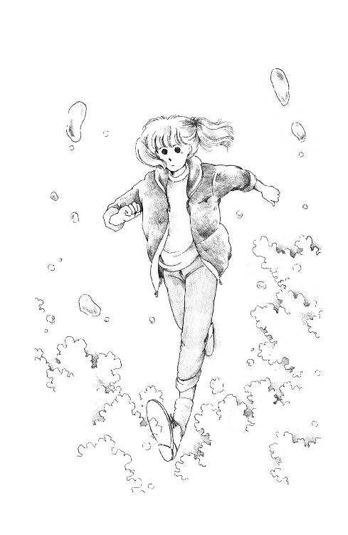
「さーて。聞こうかな」
沖に出た『ミッキー』の上で、朱海さんはいきなり、そう言った。
初心者向けの静かな風で、バウ（船首）をすっかり風上に向けると舟はほとんど止まってしまう。このままセイルを安定させておけば、ブームにぶたれる心配はない。右舷に座って、ずっとすくめてた首をやっと伸ばせてホッとしたところだった。
「何ですか？」
「とぼけなくても、ここからは誰にも聞こえないよ」
普段は髪に隠れてる朱海さんのおでこが、流れる風にサァッ、とあらわになる。
「あんなに乗りたがってたのに、心ここにあらずだよ。未来ちゃんらしくない。......どうしたの？ ひょっとして、うららだけ本格的なスーツ手に入れたから、くやしくなっちゃった？」
船尾よりに座って舵を風にあわせてる朱海さんの背中に、遠く霞んだ江ノ島が見えた。
「......あたし、そんなに子供じゃありません......！」
「おやおや」
「ひとのもの欲しがるなんてこと......しないとはいいませんけど」
ゆらゆらゆら。真上近くからさしてくるひざしが頭に熱い。
セイルの影を離れた朱海さんの顔はまぶしすぎて、どんな表情しているのかよく見えない。
ほんとに楽しみにしてたのに......。
あのひとさえ来なければこんな素敵な日はなかったはずなのに。
どうしてあたし、こんなにあのひとがいやなんだろう？ いじわるなひとはほかにもいっぱい知ってる。けんかしたことだってたくさんある。
......嫉妬......劣等感？
あのひとがお金持ちだから？ きれいだから？ グラマーだから？
そうじゃない。あのひと、あたしのことほんとにきらいなんだもん。きらいなら、ほっといてくれればいいのに、わざとつっかかるようなことする。......でも、ほんとにそう？
あたしがあのひとのこといやだ、と思ってるから、なんでもないことにでもいちいちとんがってしまうだけなの？
「すみません......」
中身のないことばだけど。ほかに何を言ったらいいかわからない。
「あやまることはない」
黙って、揺られていると、だんだんわかってきた。
スーツ、うらやましかったんじゃない。
わざと、あんたにはあげないわよ、って見せびらかされたのがくやしかったんだ。
でも朱海さんにそんなこと言えないじゃない。かりそめにもご親戚のひとよ。いいつけるみたいなこと、したらしただけ自分がいやになっちゃう。
「困ったひとだね」
突然、朱海さんがそう言った。
「え？」
「みづゑさん。そうなんでしょ？」
どうして......!?
ふりかえったけど、朱海さんのいるほうはまぶしくて、やっぱり見えない。
......そうか。懸垂の時、ちょっと口をすべらしちゃったから、あたし。
でも朱海さんすごい。うららもバートさんも気づかないのに、ずっと艤装してたはずなのにちゃんと見ていたんだ。ちゃんとわかってくれてたんだ。
「気にしないことだよ。ああいうひとなんだから。ぼくは......」
朱海さん言いかけて、やめた。
聞きたかった。朱海さんがあのひとのこと、どう思っているのか、もっとはっきり聞きたいと思って、自分でびっくりした。
あたしの耳はことばを待って息を殺してる。あのひと、好きじゃないって、あのひとなんかよりあたしのほうが、ずっとずっといい子だよ、って。うそでもいい。気やすめでいいのに......。
でも、朱海さんは黙ってる。
からだが固くなって、もう待ってられない。何か言おうと口を開いた時。
横波にぐらっ、と舟がかしいだ。
「おっと、......いけない、風が出てきた。入って」
「はい!!」
あたしはまたデッキ中央の窪みにしゃがみこんで、カメみたいに頭をひっこめた。
「よし、右引いて」
「はい」
「もっと引いていいよ、もっともっと」
あたしが担当しているジブ・シートっていうものは、手を放しても戻らないけれど引っ張ることはできる。右のひもと左のひもが輪になっていて、セイルの向きを調節する。
すみやかに移動できるようになったら、こんなとこにちぢこまっていないで、右舷や左舷に出て自分の体重と舟の重心をうまくあわせながら、海と風といっしょに走ることができるはずなんだけど......今のあたしに見えるのはデッキとセイルに切りとられた狭い海だけ。
ほとんど何も見えないまま、右とか左とか言われるままに『はい』『はい』ってひもをひっぱって自分の力で走ってるような気になってるだけ......象徴的だわ。
だいたい、舟に乗るのにも、例によって一穂さんに抱えてもらって、朱海さんにひっぱってもらってやっとだったんだ。舟を押さえててくれるひとはひとりですむようになったけど、カメのごとき進歩。腕立て伏せはあんなにたくさんできるようになったのに......。
それに比べてあのひとは、くるまを運転できる。聞香もできる。ウインド・サーフィンだってやっちゃうんだ。
「来たぞ」
後ろでティラーをさばきながら風と波を見てる朱海さんがぼそっと言った。
「は？」
この体勢じゃ、ふりむくこともできない。
「みづゑさん」
わっ!!
何もあたしが、今それを考えて落ち込んでるところにダメ押しみたいに出てこなくたっていいじゃないよぉ......!!
「じょうずなんでしょう......ここからは見えませんが」
「うん。腕力あるなぁ。未来ちゃんとはずいぶん違うね」
......う......。
「うまいことはうまいみたいだけど......大丈夫かな？」
「え」
「力まかせなんだ。風をねじふせてると思わない？」
「見えません」
「あ、そっか。ごめんごめん、回すよ。左はずして」
「はい」
重いブームがゆっくりと頭の上を通りすぎる。
これがバーン!! と飛んでくると乗ってるひと簡単に舟からふりおとされちゃうんだ。ワイルド・ジャイブって言って、風下に向かっている時風向きがいきなり変わると、すごく危ない。一穂さんによると、松田聖子さんが『プルメリアの伝説』の中でお亡くなりになったのも、そのワイルド・ジャイブでブームが頭にあたったんですって。
あ、でもその映画はヨットじゃなくてウインド・サーフィンの話だ、って言ってた。
ウインド・サーフィンとヨットってやっぱりけっこう似てるのかしら？ ......じゃ、みづゑさんだったら、初めてヨットに乗っても、あたしなんかよりずっとじょうずにできる......？
「ほら、見えるでしょ」
セイルが大きく左に張って、右の視界が開けた。
ピンクのスーツのみづゑさんが、やっほー、って手をふりながら、滑走してる。
......なんて速いんだろう!!
派手な虹色のセイルがいっぱいに風をはらんで、みづゑさんの長い髪は鞭みたいにしなってセイルを打っている。
なのに、朱海さんは、
「やばいぞ」
って言ったんだ。
「どうしてですか？」
「あのひとの体重じゃ、あんなにヒール（傾き）つけちゃ危ないはずだ。もし風が巻きでもしたら、放りだされるぞ」
そんなもんかなぁ。
くやしいけど、あたしは見とれたの。青い海、白い飛沫をあげながら切り裂くみたいに走ってくみづゑさんには、めだつスーツがよく似合う。『ミッキー』が風とおともだちなんだとしたら、あの虹色のウインド・サーフィンは風と競走してるみたい。背中伸ばして、頭をきっ、と前方に向けて、ひとりでそれを操っているみづゑさんは、いかにも颯爽として見えた。
思ってたようなひとじゃないのかもしれないわ......。
聞香の会の時、きっとあたしずいぶんなまいきないやな態度をとったんだ。
誰だって自分の学校のこと悪く言われたら頭にくるわ。いくら聖フェリシアがあんまり好きなタイプの学校じゃないからって、露骨にそれを顔に出したのはいけなかった。
あたしきっと、『あなたのこと好きじゃない』って顔にでちゃってるんだ。あのひとがあたしのこときらいになるの、むりない。
好きになろう。あたしが好きになったら、あのひとだってきっと、好きになってくれる。うららにしてるみたいに、いいおねえさんになってくれるかもしれない。
「ハーイ!!」
遠くで方向転換したかと思うと、みづゑさんはもう、声が聞こえるくらい近くをすりぬけていく。
「どっちいくんですかぁ？ ごいっしょしません？」
ほがらかな声が、風に乗って来る。
「だめです、離れてください!!」
朱海さんが、急にまじめな口調で声をはりあげた。
「あんまり寄るとお互いのセイルで風が乱れますから、あんまりそばにこないでください!! こっちは初心者を乗せてるんですよぉ!!」
「えーっ？ なあにぃ？」
みづゑさんの声は風に乗って、大きくなったり小さくなったりした。
「若なんておっしゃったのぉ？ 聞こえませんわぁ!!」
「あのバカ！ 来る!!」
ひどく緊張した声で言ったかと思うと朱海さんらしくもなく急激に座りなおしたらしく、小さな『ミッキー』はぐわん、と揺れた。
「未来ちゃん、右だ!! 思い切り引いて!! 急いで遠ざからないとあいつつっこんで来る!!」
「え？」
「早く!! タックするぞ!! 頭よけて!!」
「おじぁまなのかしらぁぁ？」
みづゑさんの明るい声が、半分吹き消されて耳にとびこんで......。
「ギャ──ッ!! どうして？ よけてよけて!! あぶな......!!」
派手な水音があがった。ああみづゑさん落ちたんだ、って思う間もなく、ガン!! って床が持ち上がった!! つかまろうとしたデッキが、つるっと手を拒んだ!!
「未来ちゃん、舟を離れるなっ!!」
朱海さんの声が、ひどく遠くから聞こえた。
「ゆっくりひっくりかえるから、とにかく舟につかまって......ああ、チンするぞ!! 息吸って!!」
パシャ──ン.........。
あお。
上も下も右も左もぜんぶ、青......緑がかった複雑な、なんともいえないあおい色......。
潮がしみてきて、ギュッ、と目を閉じる前に、あたしはそれを見た。
耳がキーンって鳴って、引き絞ってるはずの口からいっぱいに吸った空気がこぽこぽ出ていくのがわかる。初め冷たい、と思った水にすぐ慣れて、からだが楽になる。
あ。引っぱられてる。
背中つまみあげる強い力は朱海さん......？ ......早い。さすがライフ・ガードのおにいさんなんだ。
耳鳴りといっしょに、なにか深い低いとぎれのない音が、海の底のほうから聞こえてくるような気がする。かえって、ほんとうの静かさをひきたてるみたいに。
何秒間か、あたしはのんびりそんなこと考えて、ぐいぐい引き上げられるのにまかせていたんだけれど。
......ちょっと。ちょっと乱暴じゃありませんっ？
あ、なんかからまる。からみついて......あれあれ？
エレベーターが止まる時の感じを、もっともっとそっとさせたみたいな、変にふわっ、とした感じがして、それ以上上にいかなくなった。
......朱海さん......？ どこ......？
もがいてた手に、水が重かった。早く外に。空気に。
......どうしてここに止めるの？ ここまだ水の中よ。空気は？ 外は？
............？
朱海さんじゃない......？ 誰？
思わず開けた口から、ひとかたまりの空気がゴボゴボこぼれた。
しみるの覚悟でもう一度、思い切り目を見ひらいたとたん......心臓がはねあがった。
......これ、何？
目の前に白いものが漂っている。とっさに避けようともがいて、上と思われるほうに頭をまわすと......それは、明るく光って、あたしの上一面をすっぽりと覆っていた。
鼻の奥がツン、と頭まで痛くなった。
空がない。ないはずはない。なにか、海に広く浮かんでるんだ。錯覚かと思ったけど、何度まばたきしても消えない。ほんとうらしい。何か、白くて大きい布のような......。
......セイルだ!!
『ミッキー』のセイルだわ!!
目の中が、一瞬真っ白になった。
夢中で手と足をバタつかせたけれど、セイルはゆらゆら揺れるばかりでちっともどいてくれない！
ドッキン、ドッキン、上下する胸にあわせて、口を閉じたまま、思い切り頰をふくらませて、すぼめた。へたに動いちゃいけない。もう、あまり息がない。
あたしをひっぱったの何？ 朱海さんじゃない。ひとじゃない。浮力？ あんなに強くない。じゃ......。
ライフ・ジャケット！
助けにきてくれたんじゃなかったんだ。あたしはひとりなんだ。あたしは、セイルの下になっちゃって、もがいてもでられない。
......ひとりだ......。
こめかみがドッキ、ドッキ、脈打ちはじめた。
なんとかしなきゃ。落ち着いて。早く。どうする？ どうすればいい？
へこみかけた口をもぐもぐさせても、呼吸の代わりにはならない。肺がじりじり熱くなってきた。あたしの肺活量は二八七〇cc......ああ、こんなこと考えてるヒマになんとかしなきゃ、こんなこと考えていないでもっと別のことを。
いつか落ちるだろうと思っていたけど、初めての時にこんな変なとこに落ちちゃうなんてなんて運が悪いんだろう。みづゑさんがぶつかってこなければ落ちなかったんだよね......!! そんなこと思っちゃいけない、あのひとだってきっと......朱海さんはいったいどこ？ あああ、みんな、みんな、おとうさんおかあさん羅士丸麗美さんトコうらら、イエスさまマリアさまミカエルさま聖バーソロミュー！ ずっとずっと告解にいってなかったからあたしの罪には消えてないのがずいぶんあるこのままじゃてんごくにいれてもらえないかもでもそんなことないわおいのりさえすればかみさまあたしをゆるしてくれる？ ゆるしてくれないとこまるこまるのよめでたしせいちょうみちみてるまりあおんみはおんなのうちにありててんにましますわれらがちちよねがわくばみくはみくはくるしいくるしいくる......。
頭の中に霞がかかってきた。
一枚むこうに空があるはずのセイルは、悲しいくらいまぶしい。下を見れば、どこに底があるのかわからない海が、何がいるのかわからない海がどこまでもどこまでもどこまでも続いている......光あふれる空。真っ暗な海。こんな時になっても暗いとこが怖いなんてあたしもずいぶんへいわなせいかくをしているこういうあたしだものきっとてんごくにだって......。
ああ、またおかしくなってきた。考えてるヒマになんとかしなきゃ、なんとか......そうよ!! 潜るのよ!! 潜らなきゃ!!
浮かんだままもがいていても、遠くにはいけない。一度潜って、セイルがないところまで泳げば空気がある。外に出られる!!
セイルがいくら大きいっていっても、あたしは二十五メートルは泳げるはずだ。息つぎなしでも、十メートルはいける。変な方向にさえ潜らなければ、出られる!!
よし!!
水の冷たさのせいか、酸素がたりないからか、じいんとしびれてきた手と足に、肺の最後のひとしぼりをおくりこんで、さぁ、潜ろう......!!
............!!
思ってた動きができなかった。塩辛い水が、気管にはいってあたしはむせた。
潜れない？ ......どうして？ どうしてどうしてどうしてどうしてどうしてどうしてどうしてどうしてどうしてどうしてどうして......。
......!!
ああ、あたしバカだ!! ライフ・ジャケット!! これがあるからよ!!
からだじゅうから、力が、水の中に溶けでていくよ......潜れない......潜れなければ逃げられない......。
口の中に海がはいってくる。海は、舌で押すと少しだけ、動いてくれる。それだけのことでも、まだあたしにもできることがあるんだ。味。景色。音。温度。圧力。みんなまだちゃんとわかる。頭だって、こんなにはっきりしている。ちゃんと考えられる。
かんがえかんがえかんがえかんがえかんがえ死かんがえかんがえ死かんがえ死ぬかんがえかんがえかんがえ......死ぬのあたし死ぬの......!?
......ああ、考えなきゃよかった......。
やだっ!! やだやだやだっ!!
なによ、たった一枚の布じゃないの!! なんで、なんで、なんでこんなとこにあるのよ!! じゃまだよ、空気、吸えないじゃないよぉ......!! これさえなきゃ、これさえなきゃ、これさえなきゃ......。
あたしは両手でセイルをぶった。ぶったって、空気が漏れてくれるわけじゃない。もちろん出られるわけでもない。まだぶつだけの力は残ってる、ってことだけがわかった。
ああ、頭はっきりしてなきゃいいのに。何か何か何かないの何かすること何かできることいやだやだ死にたくないまだ生きていたいだしてだしてそとにだしてくうきのあるそとに......。
細かい空気がくいしばった歯の間からこぼれた。まだ、あるんだ。肺のなかに。りっぱなもんだ。でも、もう、もう、もう......。
「未来ちゃん!! そんなとこにいたのか!!」
......声？
「未来ちゃん、聞こえるか？ 聞こえたらセイルを叩け」
朱海さんだ!!
朱海さん!! どうすればいいの？ あたし、あたしどうすれば......。
しゃべろうとして、鼻がまたツーンとなった。ああ、あたしは声出せないんだ。朱海さんはしゃべれたってことはつまり空気のあるところにいるんだ。いいなー......ずるい。いっしょに落ちたはずなのに。ずるいよ─────......。
「よし、ライフ・ジャケットを脱ぐんだ!!」
......え？
「『ミッキー』の下に潜れ!! そこからすぐだ。さかさになってるハルの底に空気がある！」
はる春ハルはるはるってなんだっけああそうだふねだセンタイだ船体だ船体の底にくうきがあるくうき空気............空気がある!?
「すぐ行く。必ず助けるから、潜れ!! いいな、ライジャケをはずすんだ!!」
......ライフ・ジャケットを......外す......はずす......!!
開いているはずの目の前は真っ白だったけど、耳はワンワン鳴っていたけど、あたしは泣きたいくらい感動した。潜れるんだ！ そうよ、なんておバカなの!? はずすのよ!! ライジャケがあるから潜れないんだったらはずせばいいじゃないのっ!! なんでなんでなんでそんな簡単なことに気がつかなかったの!?
ひとのものみたいに感覚がなくなっていた指を、思い切り嚙んだ。水の中でものを脱ぐなんて、無重力状態の中の宇宙飛行士みたいだ、なんて、こんな時にも考えてる自分にあっけにとられた。止め具みっつ、どうやってはずしたのかよく覚えていない。気がついた時には、あたしはもがいてもがいて、ジャケットをふりほどいて、やみくもに水を蹴った。
落ちて落ちて落ちていく感じが止まったところで、力こめてまぶたをこじあけた。顔のすぐそばに、ぼんやりただよっているのは......シート!! ロープだ!!
水の中で泣いたのは生まれてはじめてだったよ。
明るいキラキラした曇りガラスみたいな水面に、黒い黒い舟の影がたのもしいほど大きく浮かんでいた。
ああ、そうだ。この水面の輝き。白いセイルの下の光。
何かに似てると思ってた。
これ、礼拝堂の光にそっくりなんだ。
神々しい。それがただひとつ、倒れた『ミッキー』の影に向かって、浮力に任せて登っていくあたしが、感じていたこと。空は神々しい。海も神々しい。海に浮かぶ小さなヨットも、ただよってるあたしのこのいのちも、とてもとても神々しい。
ああ、またぼんやりしてきた。暗くなってきたのは、目のせい？ 意識がなくなるの？ それとも、舟の影にすっかりはいったから......？
「......プハッ!!」
......声？ 音？
？ 顔が出てる？
ケホッ!! はぁはぁ、はぁはぁはぁはぁはぁはぁ......。
.....................く、空気だ......？
空気だ、空気だ空気だああああ
吸って吐いて吸って吐いて吸って吐いて吸って吐いて吸って吐いて吸って吐いて......。
空気だ空気だ空気だああ!!
ごほ!! ごほごほごほ......やだどっかつかまるとこ、ないかしら......顔を出しておかなきゃ。もう、力ない。
真っ暗なハルの底を手でさぐると、シートもカムもデッキもみんな、ほんとうにあった。
あるのがあたりまえなのに、ある、ってことだけで、それをあたしが前に見てさわって知ってたものがあるだけで、とてもとても嬉しかった。
けっこう、広い。けっこう、いっぱいの空気。
大丈夫。ここにいれば、当分大丈夫。
安心したら、どおおおっと力が抜けてきた。
長い長いこと水の中にいたような気がしてるけど、ほんとはごく短いあいだだったのかもしれない。だって、あたし、そんなに長いこと息止めてられないもん。
............よかった......。
生きてる。死ななかった。生きてる。生きてる。死ななかった!!
よ、よかったよおおおお......!!
吸って、吐いて、あたしが息をするひそかな音が、『ミッキー』のおなかに響いてこだまする。ちっぽけなあたしの、ちっぽけな息が、ぴしゃぴしゃ波が、デッキを洗う音といっしょにこだましてる。
その音に、あたしはじっと、耳をすませた。
荒かった息が少しずつ治まって健康な普通の呼吸にもどっていくのを、ただ黙って聞いていたら泣けてきた。ひとりそっと、べそをぬぐった時。真っ暗闇の中、すぐそばで『ブハッ』って音がした。
「み、未来ちゃん!?」
緊迫した声が、デッキに反響した。
「......はい!!」
出した声はガラガラだったけれど、伸ばした手がさぐりあてられ、ひっぱられ、すごい力があたしをはがい締めにした。あたしも夢中でしがみついた。朱海さんの顔のどこか、たぶんあごのあたりに、頭ぶつけてしまったと思う。
でもすぐ、冷たい頰に、冷たい頰がこすれて、耳のそばに息がかかった。
「よかった......無事だったんだね。ごめん、未来ちゃん、ごめん！ 大丈夫？」
「......なん......とか......」
「ああ......」
長いため息をついて。
「だめだ、ゆっくりしてると、どんどん疲れがでちゃうし、ここもじき、二酸化炭素でいっぱいになっちゃう。戻れる？ 平気？ 潜れる？」
「......たぶん......」
顔は見えなかっただろうけれど、あたしの声がよっぽど情けなかったんだと思う。
「そうだよね。こりごりでしょう......でも、行かなきゃ」
「......はい」
「じゃ、これつかんで。ぼくの腰に結んであるから」
......ひも......？
「結びましょうか、あたしも？」
「そうだね、そのほうがいい」
太いシートだった。朱海さんの肩につかまって片手でひもを巻き、朱海さんに結んでもらった。
「気絶してなくてよかった」
潜る前に朱海さんはそう言った。
「気絶してるひと、潜らせられるかどうか自信なかったんだ、ほんとは。あのね、ハルを越える深さまで潜ってくれるだけでいい。あとは浮力がつくからひっぱれる。苦しいのはあとちょっとだけだ。......いいね、行くよ!!」
「......はい......」
口いっぱいに息を含んで、朱海さんの後に潜った。
すぐにシートが引っぱられる感じがして、あたしは......浮かんでる!! 上に向かってる!! そっとあけた目に見えたのは、青い青い海のまっただなか、すうっと伸びている一本のシート。シートの先の、人影。
耳の圧迫感と、すぐに苦しくなってきた息に頭がガンガン鳴った。でも。
光あふれる海面がぐんぐん近づいてきた。そして明るくなってきた水の中に、あたしと朱海さんをつないでいる赤いシートが、はっきり、はっきり見えたんだ。
そうしてね、あたしはぶじ生きかえりました。
ヨットをひっくりかえした張本人のみづゑさんは、見えなくなったと思ったら、なんとか自力でウインド・サーフィンを立て直して、がたがた震えながら岸にはいあがり、あたしと朱海さんがぶじ浮かんで手を振るのを見ると、気分が悪い、などと言ってさっさと逃げ帰ったそうです。これはあとでうららに聞いたんだけど。
サーフィン一式は階段を上げられなかったとかで、置いていったみたいです。
あたしたちが舟につかまって、苦しい息が調うのを待ってる間に、ヨットが転覆するやいなや海に飛び込んでクロールしてきた一穂さんと、平泳ぎで来た尚史さんがたどりつき、みんなでチン起こしをしました。あたしも、非力ながらセンターボードに乗ってえーい、ってがんばりました。
あたしが脱いだライジャケも、浮かんでるのを無事、確保しました。
そしてね。あたしはなんと、足も立たない海のまっただなかで、あんなに消耗した後に！『ミッキー』にはいあがることができたんですよぉぉ!!
......えーでも、トランサムに肘まで上がって、えいえいやってるとこを朱海さんに引っぱり上げてもらった、ってことなんですけど......はい上がるとこまではひとりでした。格段の進歩じゃない!?
沖って言ってもせいぜい三百メートルくらいだったのかな？ ずっと泳いできた一穂さんたちは、しばらく舟につかまって休んでから、ゆっくり行くよ、ってまた離れました。
「怖かった......」
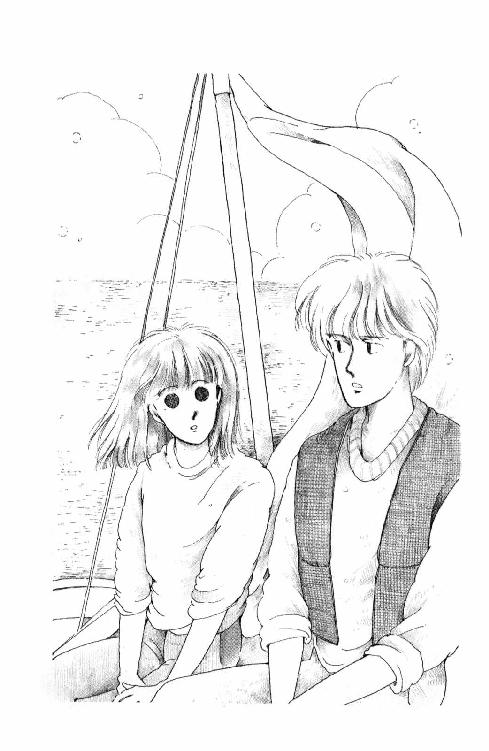
岸近く。風がちょうどよくなるのを待っている『ミッキー』の上で、恥ずかしいことを告白するみたいな小さな声で朱海さんが言ったわ。
「未来ちゃんどこ行ったか全然わからなかったんだもん」
「ほんとですよ。あたしも一時は、もうだめかと思いました。......でも『舟を離れるな』って言われたけど、あんなに近くにいてもダメなこともあるんですねぇ」
「......ごめん。セイリング中の事故はみんなスキッパーの責任です」
「そんな」
いや、って朱海さんは苦しげにかぶりを振った。
「ほんとはヨット・マンはいつもナイフを持ってなきゃいけないんだ。海に落ちても浮かぶやつをまだ買ってなくて持ってなかったけど......未来ちゃんがセイルの下にいる、ってわかった時はゾッとした。ナイフさえあれば、すぐ切って助けることができたのに......」
「でも、そんな!! セイルって高いでしょう？」
「高いよ」
「やっぱり」
「高いけど、未来ちゃんよりは安い」
「......比べないでください!!」
おだやかな風が吹いてた。
岸を見ると、うららとバートさんが桟橋に立ってけんめいに手を振っていた。その後ろ、丘の上に。
赤い屋根と、煙突のあるあたしの家。
ああ......帰れる。
お家に帰れるんだ......。
今夜はすべての聖人、すべての生命に、感謝と畏敬のお祈りをしよう......。
その前に......パパとママとお話ししよう。何でもいい。思うままに素直に、話してみたい......。
あ、でも!!
「朱海さん!!」
「......何？」
「お願いがあるんですけど」
「きいた!!」
あたしが何にも言わないうちに、朱海さんが急いでいった。
「なんでもきいた!! もちろんシチュウの約束忘れてないよ!! それに、懸垂のことも、家庭教師のことも......『ミッキー』にも最優先で乗せ......」
水面がまぶしすぎたのかと思った。
朱海さん、とても変な顔をしたんだ。
そして、おそるおそる、ゆっくりと言った。
「......ひょっとしたら未来ちゃん、もうヨットに乗りたくない、っていうの？」
「うううん、反対です!!」
朱海さんも口を開きかけたけど、あたしのほうが早かった。
「お願いっていうのは、あたしが海に落ちたなんてうちの両親に内緒にしておいてください、ってことです。落ちたとか、もう少しで窒息するところだった、なんて聞いたら、きっと父も母も二度と乗るなって大騒ぎすると思うの。だから......!!」
あんぐり口を開けたままの朱海さんの顔が、目が、だんだん笑いだした。
「......未来ちゃんにもついに、パパに内緒ができたんだ」
「......ちゃ、ちゃかすんですか？」
「ううん。わかった。約束する」
いつもの赤いライフ・ジャケット。胸のシャックル・キイを光らせて、朱海さんはうなずいた。
「よーし、じきいい風が吹くぞ」
あたしには、どの風がいい風で、どの風はよくないのかまだちっともわからない。
朱海さんは『もうすぐ荒れる』とか『午後に雨になる』とか『今夜は波が高いと思う』とかいつもぴったり当ててしまう。空と風と、海といつもいっしょにいると、そんなこともわかるようになるのかしら？
ほんとのセーラーになったらあたしにも風が見えるかしら？
ブームの下で例の醜いかっこうをとって、朱海さんの舵にあわせて『ミッキー』が風に乗るのをじっと待ちながら、あたしはその日を夢見るの。
──つづく──
註
この巻にもやっぱり説明が必要だと思われる事項が多少ありました。以下註です。
（註１）「（懺悔は）このごろ妙に安っぽく」 その頃『オレたち、ひょうきん族』という人気バラエティーがあり、番組の最後に、収録をトチッたタレントさんたちが、十字架にかかった「キリストさま？」の前で「懺悔」をし、やさしく許されるか、水をぶっかけられる、というコーナーが存在していたのです。
（註２）「ビデオでも買ってきて」 借りてきて、でないのに違和感があるのではないかと。この頃、すでに家庭用ビデオ再生機がかなり一般的なものになってはいましたが、レンタル・ビデオ屋さんは、まだほとんどありませんでした。販売ではなくレンタルをするのは著作権法違反にあたるのではないかと裁判で争い、いまでは「おとがめなし」が常識になりました。ちなみに、ビデオは当時は一本一万円以上するのが確実で、とても高価なものでした。
（註３）「フル・ムーンのおじさま」 国鉄またはＪＲの「フルムーン・パス」という高齢者特別割引周遊券のテレビ・コマーシャルに、上原謙と高峰秀子が夫婦役で出演していました。
（註４）「ズベ公」不良少女のこと。この言い方は当時にしてもかなり古い。なんで「ズベ」っていうんでしょう？ 「スベタ」から来てるのか。あいにくわたしも詳しくは存じません。
（註５）「リュー・チシュー」 笠智衆と書きます。一人称話主である未来が表記までは知らないはず、という考えから、わざとカタカナにしてあります。小津安二郎映画の常連さん。寅さんシリーズでは、葛飾柴又のなんとかいうお寺のご住職の役をなさっておられました。たしか亡くなる直前まで。うんと若い頃から、老けた役をなさっておられました。
（註６）「つないで」犬というものは、庭に小屋をたて、ヒモで繫ぎっぱなしにして飼うもんだと思い込んでいたのです。残酷にも。実は、これを書いた時、まだ自分で犬を飼ったことがありませんでした。いま我が家には拾った犬が五匹いますが、みんな室内でいつも人間のそばで生活しています。うち一匹は、冬はふとんに入ってマクラをして寝ます......。
（註７）「インディアン」 政治的に正しい言い方では、アメリカン・ネイティヴである。
（註８）「ベルサイユのバラ」 池田理代子先生の超有名マンガ。フランス革命を題材にしています。
（註９）「チアキ」 『スチュワーデス物語』という連続テレビ・ドラマがあり、堀ちえみ演じるところの松本千秋というスッチーの卵がおっかない先輩や教官に、毎度毎度、何度も「ドジでのろまなカメ！」と激しく罵られるのでした。
（註10）「ノーベル文学賞のかた」 川端康成のこと。この頃、大江健三郎氏はまだ受賞なさっておられなかったので、日本人で文学賞なひとはおひとりきりだったのでした。
★ この作品は１９８４年に集英社から発行され、２００１年に文庫化されました。これらの註は文庫化された時のものです。
あとがき
電子版第２巻をご購入いただきましてありがとうございます。久美沙織でございます。
電子版は、竹岡美穂さんのイラストの平成版（２００１年発行）の「本文」を再現しています。第一巻では「あとがき」もそのまま収録してあります。つづきもその調子でやっていけばいいだろう、と思っておりました。ところが、しかし、あにはからんや！ なんと、第二巻にあったのは、拙のあとがきでなく、野梨原花南さまによる、解説だったのでございます！ ひええええ！
あわてて調べてみたところ、平成版には三つの解説とひとつの対談と、めるちゃんによる手書きメッセージを掲載していました。すべての関係者に再録・掲載のご許可を得ることができるかどうかわからないので、めるちゃん以外のかたの分はすみません、さしかえることにします。どうかご理解ご了承くださいますように。
平成版には、旧版とさりげなく違っている点が、いくつかあります。旧版ではナンバー抜きだった一冊めが『丘の家のミッキー①』になっているのがそのひとつ。副題もつけました。第一巻の副題は、「お嬢さまはつらいよの巻」。第二巻のは「かよわさって罪なの？の巻」。鋭いかたはここまででお気づきでしょうか。十個並べて、いっこめの「音」をつないで読んでみてください。ちょっとしたあそびが隠れてますからね。
わたしはことばのあそびが大好きで、シャレやジョークを思いつくとすぐに口にするほうです。娘にいくら「ンもー、おやじギャグじゃなくておふくろギャグ、やめて！ 寒い！」と言われても、思いついたら言わずにいられません。
そんなこんなで、未来という名前をつけたのは、最初、もちろん、久美の反対でした。さかさまのひっくりかえしです。未来ちゃんの誕生日を３月９日に設定したのは、なかば冗談で、覚えておきやすいからですが、「日本の学校制度の中では、同級生の中でいちばん遅く生まれたほう」にしたかったからでもあります。
だってわたしは四月生まれ、いつもクラスの誰よりはやく誕生日がきちゃうほうだったので。小学生のうちは背が伸びるのも、かけっこも、だんぜんはやかったし。家でも、四つ下に弟がいるので「おねえさん」でした。「おねえさんなんだから、しっかりしなさい」「おねえさんなんだから、ここはゆずってあげて、がまんして」などなどといわれ、すなおにしっかりし、がまんしました。でも、内心、そーゆー自分がいやで、窮屈で、なんて損な役回りだろうと思ってました。女の子は、ちっちゃくて、幼くて、弱くて、だめで、オバカなほうがいい。いっしょうけんめいがんばろうにも、がんばれないのがいい。それなら、できなくてもしょうがないとあきらめてもらえて、がんばらなくていい、もっと甘えてられる！ と、フェミニストのひとが聞いたら怒りだしそうな、なんともセクハラなようなことを思っていたのです。
クラスでいちばん小さな子だったり、あとから生まれてきた子だったりしたら、いったいどんな人生だったんだろうなぁ。それを、じっくり、考えてみたかった。というわけで、未来を設定したはずなんですが......なぜか、よりいっそうな、がんばり屋さんになってしまいましたねぇ。
去年と今年、葉山に海水浴にもいきました。長らくご無沙汰していたんですが、親戚のところに、うちの娘と年の近いお嬢さんたちがいるのがわかったので、わあいじゃあ、いっしょにあそぼう！ ということにしたのです。
森戸の海は、いまもきれいで素敵でした。そんなにこんでないし、砂がうんとこまかくて、直接寝っころがってもサラサラできもちいいのです。でも、おかげで、水着の繊維の中にはいってしまって、かんたんにとれないのは、たいへんでした(笑)。
葉山について、旧版の第一巻のあとがきに書いていたことが、いまもわたしの気持ちです。なので、ここに再録します。
§旧版第一巻「ありがとがき」より抜粋
話は変わりますが......界帷という場所は、実在しません。森戸海岸とか一色とかは存在しますが、そのへんの地形をややこしくねじまげて、丘の家をたててしまいました。
葉山にはわたしの大叔父夫妻がいて、小さいころからよく遊びにいきました。夏はもちろん、春に秋に、みかんがたくさん実をつけてる寒いころにも行きました。そして、ついおとといも行ったんですけど......それは実は、大叔父の百ヶ日だったんですよね。
お寺の帰りに、大叔父とよく散歩した道を歩きました。あじさいが最後の花を霧雨に濡らしてる七月、海は曇って、空との境界線もなく、傘を持っていましたけれど、さす気になれませんでした。亡くなった時は......しばらく伏せっていましたし覚悟はできていましたから、それほどショックじゃなかったんです。なのに、夏が近づいてきたら突然、どしんと来たんですよね。これからはもう友達と泳ぎにきても、『なんだまた水着買ったのか？』って笑ってくれたハンサムおじいちゃんがいないってこと......もう逢えないひとになっちゃったんだなぁってこと......この本にも出てくる菊水亭でコーヒーなんか飲みながら、おじいちゃん、天国の海で釣りする仲間に逢えたかな、なんて思いました。
逢えなくなってみると、話しておかなきゃいけなかったんじゃないかってことが次々に出て来て、なんだか辛くなりそうだったので、南部のおじいさんを書くことにしました。南部鴻作っていうのはその大叔父、別名葉山のおじいちゃんの芸名です。戦前の松竹の映画俳優だったので、そりゃもういいおとこでした。戦争の時に怪我をしたのでそのあとはもっぱらモデルをしてました。みなさんもひょっとするとどこかの街角や何かの雑誌で見たことがあるかもしれないな。
と、いうわけで葉山を書くことを決めて以来、あたしはいろんな資料を集めました。あたしの葉山は森戸と堀内のご町内くらいでしたから。太陽族のことを入れようと思って、ビデオまで買ってしまった。『狂った果実』はノンちゃんのおすすめだったんだけど、素晴らしい青春映画だよ。当時の蕩児の部屋にウクレレとラジオくらいしかなかったのには驚いたなぁ。日本はほんとに高度成長したんですね。
（抜粋はここまで）
それでは、みなさま、どうかお元気で。第三巻で、またお目にかかれることを祈っております。
くみさおり
電子書籍スペシャル対談 久美沙織×めるへんめーかー 第２回
【久】久美沙織・・・「丘の家のミッキー」の作者。
【め】めるへんめーかー・・・「丘の家のミッキー」の挿し絵担当者。
【質】質問者
＜出会いについて＞
【質】初めてお会いになったときってどんな感じだったのですか？
【久】ええっ、いつ会ったの？ わたしたちって。
【め】講談社のパーティ。
【久】よく覚えているね。
【め】なんで久美さんだってわかったのかな。編集の人に紹介してもらったような気がする。たぶん、読んでたんで。なんだっけ。「ロマンティック？」。
【久】ああああ、なんだっけ。おぼえてないよ！ だって昭和だよ、前世紀の昔だよ？ 前科じゃなくて、前世だ。......えっと、なんとかかんとか片目を閉じてっていうのとシリーズだったんだよね、なんだっけ......うーん。
【質】 （ウィキを検索）「ロマンチックをもう一杯」
【久】ああ、それだ！
【め】それ。それかなんかを、読んだことがあったの。当時の担当（編集者）さんが、コバルトをすごい薦めてて、これ読んでみてくださいって、本をくばってくれたりしていたの。氷室（冴子）さんのとか、（正本）ノンさんのとか、いろいろ。その中にたしか、一緒にあったんだと思う。私、それまでは翻訳ものばっかり読んでいて、日本の作家さんのものってあんまり興味がなかった。あんまり読んだことがなかったんだけど、ちょうど読んでたから、ああ、そうか、このひとなんだって、名前を知っていたの。名札つけてたのかな。あー、読んだことがある本を書いた人がいる！ って、思って、誰かに紹介していただいたの。
【久】ゆふ子ちゃんも一緒だった？ （注・妹尾ゆふ子さん。めるちゃんの妹）
【め】ううん。 （質問者に）妹は、いまは小説書いているんですけど、わたしのアシスタントをやってくれていたんです。そのころはまだ、学生だったんじゃないかな。
【久】それで、私はめるちゃんのことすぐ誰だかってわかったの？
【め】うん。わかったみたい。
【久】そうか、そうか。
【め】どこでご存じだったかわかんなかったけど。わたし、何かで......専門誌とかで、もう描いていたかな。イラスト描いてたか、漫画描いてたかしたかも知れない。すごいいろんなところで仕事していたんで。
【質】当時は印象とか。お二人はどんな感じだったのですか？
【め】キレイなお姉さんだなって。
【久】ええっ！
【質】ふんふんふん。
【め】髪、まっすぐだったよ。
【久】あー、それは必死にまっすぐにしてたんだよ。ストパ（ストレートパーマ）かけて。かっこつけて。そうですか、有難うございます。ごめん、正直いって、まったくそのときのことは覚えていない（笑）んだけど、めるちゃんっていったら、自分のマンガそっくりだったんじゃない？ こーんな（フリルひらひらの、と手ぶり）お洋服で。あのころ、マンガのパーティいくっていったら、わたしだってうれしくってさあ、すっごいがんばっちゃったんだと思うよ。
【め】たしか竹本さんが一緒にいたかな。竹本泉さん（注・漫画家さん）。
【久】そうかー。漫画家さん同士って仲いいよね。人数もおおくて、一大勢力！ って感じ。コバルトのあたしたちのころって、この世代のものかきの出はじめだったからね。その前には、富島健夫先生とか、佐藤愛子先生とか、親よりももっと年配ぐらいのひとたちが活躍していたからさ、そことここのあいだがスコッとぬけている。マンガのほうには、（昭和）24年組の人たちとかいるでしょ。若々しくて、元気で、おしゃれで、かっこよくて、おもしろいものを描いてるひとたちが。「花ゆめ」とか「マーガレット」とか、「りぼん」とか、ずっと大好きで読んでたから、混ぜてもらえると嬉しかったんだよ。
【め】小説は、新人開拓をしてなかったんだね。「じょとも（女学生の友）」とかあったぐらいで。
【久】しなかったっつーか、書きたがるひともいなかったんじゃないかな？ 小説なんつのは、おじちゃんおばちゃんが書くものだろ、ってイメージで。暗かったっつーか、マイナーでさあ。あたしがデビューしたとき、文壇全体でも、自分よりちょびっとだけ年が上の先輩って、栗本薫先生しかいなかったんだよ。あと、せいぜい落合恵子さんと。その上っていうと、もういっきに、田辺聖子先生（笑）。
【質】ふんふんふん（笑）
【久】林真理子さんが、エッセイじゃなくて小説を書きはじめたのが、ようやくそのころだった。だから、小説のほうには、「おねえさん」世代がぜんぜんいなくて、ごくごく狭い同じコバルトの同級生みたいなの以外とは、交流ゼロ。でも、漫画家さんたちは、若いひともいっぱいいたし、おねえさんたちもいっぱいいた。萩尾（望都）先生とか、大島弓子先生とか、一条ゆかりさんとか。漫画家さんは、10代で描き出すから、ちょっとおねえさんでももう大先生なのよね。小説よりずっと華やかだった。時代もバブリーだったからね。漫画家さんのパーティーっつーと、ホテルの大広間で、ごちそうで、えらい先生がたが、お色直しとかもしてた（笑）。ふりふりの聖子ちゃんドレスから、お振り袖になりました～！ みたいな。キラッキラしていて派手だったねぇ。
【め】でもさ、やっぱり漫画のほうから小説のほうにいくと、なんか小説のほうがランク上なんだなって気がした。
【久】ええっ？ そおなの？？
【め】編集さんとかの、先生がたの扱い方がやっぱりね。
【久】先生の？・・あ、作家のってこと？
【め】うん。漫画だってさ、あ、うんと上のほうのひとは違うのよ。ご旅行のときはビジネスクラスで。取材費が出て海外旅行にいったりするような方々は別なんだけど、わたしみたいな、どちらかというと中ぐらいのところより下かそのへんをいったりきたりぐらいだったんで......。
【久】めるちゃんが生息していたのはわりとオタクなところだったからね。
【め】出版社のひとたちも、小説家はほんとに「先生」だって思ってたんじゃないかな。文化人っていうか。なんか小説の人たちってちょっとやっぱり違うなって。ハイクラスな感じだなっていう。
【久】ええーっ？？ いやいや、それもそれこそ、ひとによるし、版元にもよると思う。
【質】ふんふん。
【め】今はどうなっているかちょっとわからないけど。ひとが、少なかったじゃないですか、やっぱり、前は。コバルトができた頃って、若手の作家って、コバルトの人たちと早川のほうとか。それぐらいしかいなかった。ああいうＳＦを書くひとたち。今ＳＦを書くひとたちっているのかな。
【久】そりゃあいますよ。小川一水さんとか、すばらしいの書いてるし。ラノベのほうはわたしもあんまり知らないんだけど......けど、ああそうだ。岬兄悟さん、火浦功さん、大原まり子ちゃんとかは、私がコバルトにひっぱってきたんだよ。下北沢にすんでたとき、ご近所にＳＦなみんながあつまる場所があって、知り合って。新井素子ちゃんが間にはいるな。それで、ねーねー、こんなひとたちいますよ、おもしろいですよ、書かせてあげてくださいよって、コバルトに売りこんだ。
【め】ああ、そうなんだ。すごいね。
【久】うん。なにしろ当時、ＳＦはもちろん、ちょっとファンタジーっぽいのとかも、書くひとが、あそこにはほとんどいなくってねぇ。そもそも若手もほんと少なかったから、ほしかったの。仲間がたくさん。コバルトのＳＦ濃度が高くなったのは、ある意味わたしのおかげだよっ！ ......偉そうなこと言ってすみません。（笑）
３巻に続く
＊この対談は、２０１４年６月にクリーク・アンド・リバー社で行われました。
くみ・さおり
１９５９年４月30日、盛岡市生まれ。上智大学文学部哲学科卒。Ｏ型。動物占いは「狼」。在学中の79年、『小説ジュニア』（のちの『Cobalt』）に短編デビュー。集英社文庫コバルトシリーズをはじめ、著書多数。近年の作品は『電車』（アスペクト）、『孕む』（イースト・プレス）など。夫の波多野鷹、多数の犬猫猛禽その他動物と共に軽井沢在住。
イラスト／めるへんめーかー
丘の家のミッキー２
かよわさって罪なの？の巻
発行日 ２０１４年１０月２３日
著者 久美沙織
発行 株式会社クリーク・アンド・リバー社
〒102－0083
東京都千代田区麴町2－10－9
(c) SAORI KUMI 2014